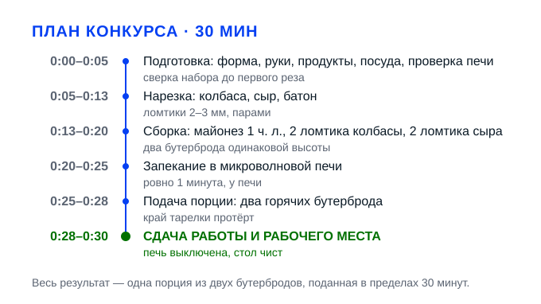
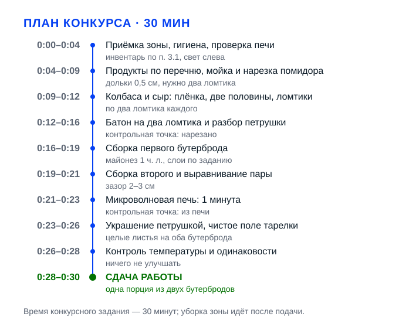
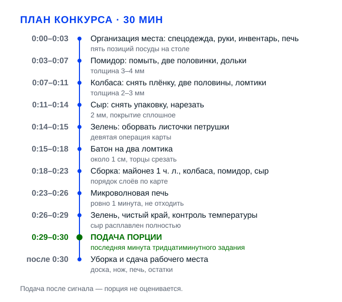

Приготовление горячих бутербродов (ФВ)
Задания ниже — официальные файлы «Абилимпикс» (источник: abilympics-russia.ru), разложенные по категориям. Решения написаны по тексту задания, регламенту и критериям оценки; в них указано, что именно проверяет эксперт.
Школьник
14–16 лет, базовый уровень заданияВ официальном файле категории не разделены отдельными разделами — приводим задание целиком; различия по категориям смотрите в таблице модулей.
Пошаговое решение
Задание для школьников короткое по составу и жёсткое по времени: за 30 минут нужно приготовить, оформить и подать одну порцию из двух горячих бутербродов с колбасой и сыром. Набор продуктов фиксированный — кусок батона, два ломтика колбасы, два ломтика сыра и одна чайная ложка майонеза, — а из оборудования дают нож, разделочную доску, столовую тарелку, чайную ложку и микроволновую печь. Дальше всё решает техника: тонкая и ровная нарезка, аккуратная сборка в четыре слоя, ровно минута нагрева и чистая подача. Именно поэтому решение разбито на четыре этапа — подготовка, нарезка, сборка с запеканием и подача с уборкой, — и в каждом шаге указано, что именно проверяет эксперт и какая ошибка чаще всего стоит участнику результата.

Задача 1. Подготовить рабочее место, продукты и посудуЭтап 1 · первые 5 минут из 30
До первого движения ножом бокс должен быть готов полностью: спецодежда надета по правилам, руки вымыты, продукты проверены и разложены, доска, нож, тарелка, чайная ложка и микроволновая печь проверены и стоят там, где вы будете ими работать. По конкурсному заданию на всё задание даётся 30 минут, и подготовка съедает из них примерно пятую часть. Эти пять минут нельзя сэкономить, зато можно потерять: если вы начнёте резать, не проверив печь и не разложив продукты, то потом будете искать ложку с майонезом в тот момент, когда бутерброды уже собраны.
Действие 1.1. Войти в бокс по санитарным правилам
Шаг 1.1.1
Надеваем фартук или куртку, полностью убираем волосы под колпак или косынку и застёгиваемся так, чтобы одежда не свисала над столом. Волосы убираем и спереди, и на затылке: колпак, посаженный только на макушку, оставляет открытой именно ту часть, откуда волос и попадает в еду. Рукава подворачиваем выше локтя, потому что длинный рукав касается сыра и колбасы, цепляется за ручку микроволновки и мешает чувствовать толщину ломтика при нарезке. Обувь оставляем закрытую, на нескользящей подошве: пол у столов бывает влажным, а падение с ножом в руке — это уже не про баллы.
В конкурсном задании отдельным требованием записаны основы санитарии и личной гигиены, и соблюдение этих правил оценивается наравне с качеством нарезки. Бутерброд не проходит тепловую обработку до полной готовности: колбаса и сыр только прогреваются, поэтому всё, что попало на них извне, остаётся в блюде. Открытые волосы и незастёгнутая одежда читаются экспертом как нарушение с первой минуты, и отыграть это впечатление потом уже нечем.
Попросите второго человека или волонтёра посмотреть на вас со спины: волос не должно быть видно ни спереди, ни сзади. Проверьте, что фартук застёгнут, рукава не спускаются ниже локтя, на руках нет часов и браслетов. Обувь закрытая и сухая, шнурки завязаны — по дороге к микроволновке вы будете ходить с горячей тарелкой.
Самая частая ошибка — надеть колпак на макушку и оставить затылок открытым: спереди всё аккуратно, а сзади волосы выбиваются. Вторая — прийти в футболке и открытых сандалиях, рассчитывая, что «это же просто бутерброды». Формально это нарушение требований охраны труда и санитарии, и снимается оно независимо от качества нарезки.
Эксперт фиксирует внешний вид участника до старта и продолжает следить за ним по ходу работы: пятно майонеза на груди к середине задания тоже считается. Смотрит он и на руки — мылись ли они после того, как вы поправляли колпак или вытирали стол.
Шаг 1.1.2
Моем руки с мылом до запястий, не меньше двадцати секунд, отдельно прорабатывая большие пальцы, промежутки между пальцами и под ногтями. Вытираем одноразовым полотенцем и сразу выбрасываем его, а не кладём на край стола. Повторяем мытьё после каждого перерыва в работе: после того как поправили одежду, вынесли мусор, вернулись из туалета или подняли что-то с пола. Перед нарезкой батона руки должны быть сухими: мокрыми пальцами вы размягчите корку и оставите на мякише следы.
Сырая колбаса и сыр из упаковки — продукты, которые дальше не варятся и не жарятся, поэтому чистые руки это единственный барьер между ними и вашим блюдом. В перечне требований к участнику прямо записано мытьё рук с мылом перед началом и в процессе работы, и это проверяется визуально на протяжении всех 30 минут. Кроме того, сухие руки дают вам контроль над ножом: скользкая ладонь на рукоятке — это неровный ломтик.
Руки сухие, полотенце использованное и выброшенное, на столе нет мокрых салфеток. Проверьте себя простым правилом: если вы только что трогали упаковку колбасы, а теперь берёте батон, руки надо мыть, даже если визуально они чистые.
Классическая ошибка — протереть руки о фартук: внешне они сухие, но фартук становится переносчиком, и это видно. Вторая — помыть руки один раз на входе и считать вопрос закрытым; оценивается процесс, а не стартовое состояние, и один перерыв без мытья рук перечёркивает аккуратность всей работы.
Эксперт смотрит на руки в течение всего задания, а не только на входе, и отдельно отмечает, моется ли инвентарь и меняется ли полотенце после работы с упаковкой.
Шаг 1.1.3
Осматриваем своё место целиком, прежде чем что-то раскладывать: свет должен падать на стол слева, расстояние от глаз до доски — не меньше 35–40 см, сидеть надо прямо, опираясь на спинку стула. Если стол регулируется, выставьте высоту так, чтобы локти лежали на столешнице под прямым углом, а не висели. Уберите с рабочей поверхности всё лишнее: сумку, телефон, личные вещи — они не должны стоять рядом с продуктами. Освободите проход шириной не меньше 1,5 метра: с горячей тарелкой вы будете двигаться к микроволновке и обратно.
Требования охраны труда перечислены в задании отдельным блоком: хорошее освещение, свет слева, прямая посадка, расстояние от глаз 35–40 см. Это не формальность — при плохом свете вы не увидите, что ломтик колбасы получился вдвое толще соседнего, а при неправильной высоте стола рука устаёт и нож начинает «гулять». Свободный проход нужен потому, что с горячей тарелкой нельзя лавировать между столами: между рабочими местами оставлено 1,5 метра.
Встаньте перед столом: тень от руки не должна падать на доску, локти на столе, спина прямая. Отметьте взглядом маршрут до микроволновки — он должен быть свободен на всю ширину. На столе остались только продукты, посуда и инвентарь по перечню.
Ошибка — работать стоя боком к свету и с низко опущенной головой: через десять минут начнёт болеть шея, а ровность ломтиков упадёт именно тогда, когда до подачи останется меньше всего времени. Вторая — завалить стол упаковками и пакетами: в этой куче теряется чайная ложка, а без неё не отмерить чайную ложку майонеза.
Эксперт оценивает организацию места при старте: освещённость, посадку, порядок на столе и то, не мешает ли участник соседям. Отдельно смотрит, есть ли на столе свободная зона, куда можно положить готовый бутерброд.
Шаг 1.1.4
Раскладываем инвентарь по принципу «что беру первым — то ближе»: доска прямо перед собой, нож справа от доски рукояткой к себе, тарелка слева или чуть впереди, чайная ложка рядом с тарелкой, продукты — на дальнем крае стола, чтобы не тянуться через разделку. Мусор — плёнку от колбасы и упаковку от сыра — складываем в отдельную неглубокую ёмкость или пакет справа, но не на доску и не на тарелку. Проверьте, что ничего не лежит на краю стола: одно неловкое движение, и упаковка окажется на полу.
Порядок на столе прямо влияет на скорость: за 30 минут каждое лишнее движение к дальнему краю стола складывается в минуту-полторы, которых потом не хватит на запекание. Кроме того, в задании отдельно оговорено, что участник может убрать лишнюю посуду и продукты в отведённое место для хранения, — то есть место под рукой ценится выше полного комплекта на столе. Аккуратность рабочего места входит в оценку наравне с качеством нарезки.
Проверьте тремя взглядами: перед вами доска, справа нож, слева тарелка с ложкой, продукты в зоне вытянутой руки. Отходы — в отдельной таре, а не на столешнице. Свободного места хватает, чтобы положить рядом два готовых бутерброда.
Частая ошибка — поставить доску на край стола и положить нож поперёк неё: нож соскальзывает при первом же движении. Вторая — держать очистки и плёнку на доске, из-за чего колбаса пачкается, а ломтики прилипают к мусору и рвутся.
Эксперт обходит боксы в первые минуты и отмечает, организована ли зона: доска, нож, продукты, тара для отходов. Хаотичный стол он запоминает и потом сверяет с тем, насколько чисто участник работает.
Действие 1.2. Принять и проверить продукты
Шаг 1.2.1
Сверяем свой набор с перечнем продуктов для школьников: батон — один кусок, колбаса — два ломтика, сыр — два ломтика, майонез — одна чайная ложка. Раскладываем всё на дальнем крае стола и считаем вслух или про себя: один, два, два, одна. Если чего-то меньше или продукт повреждён, сразу поднимаем руку и зовём эксперта — до старта замена решается быстро, после старта её может не быть вовсе. Ничего не начинаем резать, пока набор не сверен целиком.
Набор рассчитан ровно на одну порцию из двух горячих бутербродов с колбасой и сыром, и в нём нет запаса: если один ломтик колбасы порвётся или упадёт, второго не будет. Именно поэтому сверка идёт до первого движения ножом — это единственный момент, когда недостачу можно восполнить. По условиям задания каждому участнику готовят равный комплект посуды и продуктов, поэтому любое расхождение — вопрос к организаторам, а не к вашей аккуратности.
На столе лежат: один кусок батона, два ломтика колбасы, два ломтика сыра, майонез в закрытой упаковке. Посуда по перечню: столовая тарелка, чайная ложка, разделочная доска, нож — по одной штуке. Если чего-то нет, вы это уже озвучили.
Ошибка — начать нарезку «пока ищу», а потом обнаружить, что сыра только один ломтик. К этому моменту батон уже нарезан, время идёт, и второй бутерброд остаётся без верхнего слоя — порция из двух штук не собирается. Вторая ошибка — постесняться сказать о недостаче и «растянуть» продукты: бутерброды получатся разного размера.
Эксперт видит, сверялся ли участник с перечнем, и отмечает, насколько спокойно и точно он формулирует проблему, если она есть. Молчаливая нехватка продукта трактуется как невнимательность.
Шаг 1.2.2
Проверяем колбасу: снимаем плёнку и смотрим на срез — он должен быть ровным, розовым, без серых пятен и радужного блеска, оболочка не должна липнуть. Понюхайте: запах свежий, без кислоты. Потрогайте пальцем через чистую салфетку — поверхность чуть влажная, но не скользкая. Если колбаса нарезана заранее и лежит ломтиками, проверьте, не заветрились ли края: подсохшая кромка при запекании станет жёсткой и завернётся вверх.
В требованиях к участнику записаны признаки и органолептические методы определения доброкачественности продуктов, то есть умение оценить продукт глазами, носом и на ощупь до того, как он попал в блюдо. Для горячего бутерброда это критично: микроволновка прогревает продукт, но не обеззараживает его, а испорченная колбаса после нагрева пахнет ещё сильнее. Заветренный край — это ещё и дефект внешнего вида, который видно на готовом изделии.
Срез ровного розового цвета, запах свежий, поверхность не липкая, плёнка снята полностью и лежит в таре для отходов. Края ломтиков влажные, не подсохшие. Если хотя бы один признак сомнителен — продукт откладываем и зовём эксперта.
Типичная ошибка — резать колбасу прямо в плёнке, надорвав её только с одного края: кусочки плёнки остаются на ломтиках и попадают в бутерброд. Вторая — не обратить внимание на заветренные края: после минуты в печи они заворачиваются, и верхний слой выглядит неопрятно.
Эксперт смотрит, осматривает ли участник продукт до нарезки и что делает при сомнении. Отдельно фиксируется, снята ли плёнка полностью, а не «на глаз».
Шаг 1.2.3
Сыр проверяем так: снимаем упаковку целиком, а не надрываем уголок, и смотрим на поверхность — она должна быть ровного цвета, без плесени, без заветренных и подсохших краёв, без липкой слизи. Понюхайте: запах молочный, без горечи и кислоты. Если сыр лежит двумя ломтиками, разложите их отдельно, чтобы они не слиплись в один. Батон проверяем на ощупь: корка упругая, мякиш под ней не крошится в руках, нет следов плесени ни на срезе, ни на корочке.
Сыр в этом задании — верхний слой, он открыт всем взглядам и плавится первым, поэтому любой дефект поверхности после микроволновки становится заметнее, чем был до неё. Батон — основание: если мякиш крошится, бутерброд разваливается ещё до подачи, и порция из двух штук выглядит неаккуратно. В перечне требований к качеству и срокам хранения продуктов эти проверки идут отдельной строкой, и выполняются они до нарезки, а не после.
Сыр однородного цвета, ломтики не слиплись, упаковка снята полностью. Батон упругий, при лёгком нажатии возвращает форму, крошек на доске после нажатия не остаётся. Плесени и посторонних запахов нет ни у сыра, ни у батона.
Ошибка — оставить сыр в надорванной упаковке и резать прямо в ней: нож цепляет плёнку, ломтик рвётся по краю. Вторая — взять подсохший батон «сойдёт»: при нагреве он станет ещё жёстче, и бутерброд будет не откусить, а отламывать.
Эксперт проверяет, осмотрен ли продукт и снята ли упаковка до нарезки. Крошащийся батон он увидит и на готовом изделии — по крошкам на тарелке вокруг бутербродов.
Шаг 1.2.4
Майонез проверяем последним, потому что он закрыт: смотрим дату и срок годности на упаковке, целостность пакета или баночки, отсутствие вздутия. Открываем аккуратно, не рвя край, и оставляем упаковку стоять так, чтобы её можно было закрыть обратно. Если майонез выдан в общей таре, отбираем ровно одну чайную ложку в отдельную маленькую посуду — так вы не будете макать ложку в общий майонез после того, как она касалась хлеба.
По заданию майонеза ровно одна чайная ложка на бутерброд, и это количество отмеряется один раз, а не «на глаз» в процессе. Общая тара опасна именно повторным погружением: ложка, которой вы размазывали майонез по хлебу, вернёт в банку крошки и влагу, и продукт начнёт портиться. Отбор ложки заранее — это и санитария, и точность дозировки, обе позиции есть в требованиях к участнику.
Упаковка целая, срок годности не истёк, вздутия нет. В отдельной посуде лежит ровно одна чайная ложка майонеза, ложка сухая, край посуды чистый. Общая банка закрыта или накрыта, ложка в ней не стоит. Проверьте, что на руках и на краю посуды нет майонеза — след потом попадёт на тарелку подачи.
Частая ошибка — брать майонез ложкой прямо из общей банки после хлеба: крошки в банке видны сразу, а эксперт расценивает это как нарушение санитарных правил. Вторая — накладывать майонез «побольше, чтобы наверняка хватило»: излишек вытечет по краям и подгорит в печи.
Эксперт смотрит на дозировку: одну чайную ложку видно и по объёму, и по тому, как быстро она расходуется. Отдельно отмечает, не касается ли ложка хлеба, а потом общей тары.
Действие 1.3. Подготовить посуду, доску и микроволновую печь
Шаг 1.3.1
Ставим разделочную доску перед собой, ровно, не на край стола, и проверяем, что она сухая и чистая с обеих сторон. Под доску полезно подложить сложенное вчетверо полотенце или влажную салфетку — тогда она не поедет, когда вы будете нажимать ножом. Доска должна быть такой, чтобы на ней поместились и батон, и колбаса, и сыр по отдельности: если резать всё в одном месте, ломтики начнут наезжать друг на друга и пачкаться.
Разделочная доска входит в перечень оборудования на одного участника вместе с ножом, ложкой, тарелкой и микроволновкой, и работать без неё нельзя: на столешнице нож тупится и скользит. Неподвижная доска — это ровный рез: когда она едет, нож уходит в сторону, и ломтик получается клином. Разделение зон на доске нужно потому, что сыр после колбасы пачкается жиром и хуже ложится ровным слоем.
Нажмите на доску ладонью — она не сдвигается. Поверхность сухая, без крошек и пятен. Доска стоит целиком на столе, не свисает краем. Свободного места хватает на три продукта, разложенных отдельно, и между зонами остаётся по паре сантиметров.
Ошибка — положить доску на мокрую столешницу: она начнёт ездить, и первый же ломтик батона получится косым. Вторая — резать колбасу и сыр в одной куче: сыр впитывает колбасный жир, ломтики слипаются, и разложить их ровно уже не выйдет.
Эксперт оценивает подготовку инвентаря: чистая доска, устойчивое положение, раздельные зоны под каждый продукт. Грязная или шатающаяся доска — заметный минус в блоке организации.
Шаг 1.3.2
Берём нож, проверяем рукоятку: она должна быть сухой, без трещин и без люфта, лезвие — без зазубрин и без остатков предыдущей работы. Держим нож так, чтобы указательный палец и большой сжимали рукоятку у самой пятки лезвия, а остальные три обхватывали её дальше. Кладём нож справа от доски, лезвием от себя, рукояткой к себе — так вы берёте его, не перехватывая и не касаясь лезвия. Если нож тупой или рукоятка шатается, меняем его сразу, до старта.
Тупой нож опаснее острого: он давит на продукт, а не режет, и в какой-то момент срывается вниз, туда, где держат продукт пальцы. В требованиях охраны труда прямо сказано, что неисправные инструменты и материалы подлежат замене, — это ваша обязанность, а не просьба. Правильный хват даёт контроль над толщиной ломтика: именно пальцами у пятки лезвия вы чувствуете, сколько сантиметров прошёл нож.
Проведите подушечкой большого пальца по лезвию вдоль, не поперёк: оно должно цеплять кожу, а не скользить. Рукоятка не шатается, лезвие без зазубрин. Нож лежит рукояткой к вам, режущая кромка направлена от вас.
Самая частая ошибка — взять нож, который «как-то режет», и мучиться: батон рвётся, сыр ломается, ломтики получаются разной толщины. Вторая — положить нож лезвием к себе и потом схватить его за кромку. Третья — резать на весу, подняв продукт: именно так и получают порезы.
Эксперт смотрит на хват ножа и на то, как участник обращается с лезвием в паузах между операциями. Нож, брошенный на доску лезвием в сторону прохода, расценивается как нарушение техники безопасности.
Шаг 1.3.3
Ставим столовую тарелку слева от доски, так, чтобы на неё можно было сразу выкладывать ломтик батона, не перенося его через всю столешницу. Тарелка должна быть сухой и чистой, без капель воды: мокрое дно даёт лужицу под бутербродом. Чайную ложку кладём рядом с тарелкой, на сухое место, ручкой к себе. Проверьте, что тарелка стоит не на краю и что её край не выступает за столешницу — по этой тарелке вы потом понесёте готовую порцию.
По перечню посуды школьнику выдаются столовая тарелка и чайная ложка, и именно тарелка становится и рабочей поверхностью для сборки, и посудой для подачи: отдельной посуды под выкладку в задании нет. Значит, всё, что попадает на неё в процессе, останется на ней и при подаче — отсюда требование к сухому чистому дну. Ложка нужна для точной дозировки майонеза: одна чайная ложка на бутерброд, и отмерять её лучше сухой ложкой.
Тарелка сухая, без пятен и капель, стоит устойчиво и целиком на столе. Ложка сухая и лежит отдельно, а не на тарелке. Между тарелкой и доской остаётся расстояние в ладонь — достаточно, чтобы положить ломтик, не задев край.
Ошибка — поставить тарелку вплотную к доске: крошки от батона летят прямо на неё, и подача получается неопрятной. Вторая — положить ложку на тарелку, а потом выкладывать на неё бутерброд: ложка пачкается майонезом, и её приходится мыть в самый неподходящий момент.
Эксперт смотрит на чистоту посуды для подачи до начала сборки. Пятна и капли на тарелке он заметит и на финальной подаче, потому что менять посуду под готовое изделие заданием не предусмотрено.
Шаг 1.3.4
Проверяем микроволновую печь до того, как в неё что-то попадёт: дверца закрывается плотно, внутри чисто и сухо, на дне нет чужих крошек и засохших пятен, на стекле дверцы нет нагара. Ставим печь в доступное место, чтобы не тянуться через стол с полной тарелкой. Включаем на холостом ходу на несколько секунд и слушаем: печь должна гудеть ровно, без щелчков и треска. Убедитесь, что рядом есть свободное место, куда вы поставите горячую тарелку после прогрева.
Микроволновка — единственное тепловое оборудование в этом задании, и по описанию работы горячий бутерброд готовится именно в ней: собранный бутерброд ставится в печь, выставляется время 1 минута и изделие достаётся. Если печь грязная, жир на дне начнёт дымить и даст запах, который впитает сыр. Если печь стоит неудобно, вы потратите лишние полминуты на дорогу и рискуете опрокинуть тарелку — а до истечения 30 минут всё должно быть уже подано.
Дверца закрывается с щелчком, внутри сухо и чисто, запаха нет. При включении печь гудит ровно, таймер работает, после остановки ничего не капает. Рядом с печью освобождено место под горячую тарелку, и там нет ничего, что плавится от тепла.
Ошибка — поставить бутерброд в грязную печь: старый жир на дне разогревается быстрее продукта, дымит и придаёт сыру посторонний привкус. Вторая — не проверить таймер и обнаружить, что печь не выключается сама, уже с готовым изделием внутри.
Эксперт отмечает, проверено ли оборудование до использования, и следит, не оставляется ли печь без присмотра включённой. Работа с неисправным оборудованием входит в блок охраны труда.
Задача 2. Нарезать батон, колбасу и сырЭтап 2 · с 5-й по 13-ю минуту
Нарезка — самый долгий и самый заметный этап: именно по ломтикам видно, умеет ли участник держать нож. В задании для школьников последовательность задана жёстко: колбасу очищаем от плёнки, делим на две половины и режем на тонкие ломтики, с сыра снимаем упаковку и режем тонко, батон нарезаем ломтиками. Всего нужно получить по два ломтика колбасы и сыра и два ломтика батона — по одному на каждый из двух бутербродов. Тонкие и одинаковые ломтики дают ровную стопку, которая пропекается за минуту равномерно; толстые и разные — дают перекос, и один бутерброд выходит сухим, а второй сырым внутри.
Действие 2.1. Подготовить и нарезать колбасу
Шаг 2.1.1
Берём колбасу, находим край оболочки — обычно он подвёрнут или имеет надрез — и снимаем плёнку по всей длине, а не надрываем посередине. Тянем плёнку от края медленно, придерживая колбасу другой рукой, чтобы не содрать вместе с ней верхний слой продукта. Снятую плёнку сразу убираем в тару для отходов, а не кладём на доску. Если оболочка не снимается, подрезаем её ножом вдоль на пару миллиметров и отделяем пальцами.
Первым пунктом в описании приготовления горячего бутерброда стоит именно очистка колбасы от плёнки, и это не формальность: плёнка не режется ножом, она тянется, ломтик получается рваным, а её остатки потом запекаются в бутерброд вместе с колбасой. Для блюда, которое оценивают по внешнему виду и вкусу, кусочек оболочки — это грубый дефект, который виден сразу и портит впечатление от всей порции из двух бутербродов.
Проведите пальцем по всей поверхности колбасы: плёнки нет ни на торце, ни по бокам, ни на срезе. Плёнка целиком лежит в таре для отходов, на доске и на столе её нет. Верхний слой колбасы не содран и не размочален.
Ошибка — надорвать плёнку с одной стороны и резать вместе с ней: нож цепляет оболочку, ломтики выходят рваными, а на одном из них остаётся полоска плёнки, которая после печи становится жёсткой. Вторая — снять плёнку вместе с верхним слоем колбасы, оставив на срезе неровную «лысину».
Эксперт смотрит, снята ли оболочка полностью и убрана ли она с рабочей зоны. Остатки плёнки на готовом изделии он найдёт и на дегустации — они не плавятся и хорошо заметны на разрезе.
Шаг 2.1.2
Кладём колбасу на доску и делим её на две половины: сначала отмеряем середину на глаз, затем делаем один уверенный рез поперёк, не пиля ножом туда-сюда. Половины должны получиться равными, потому что каждая из них пойдёт на свой бутерброд. Раздвигаем половины на доске так, чтобы между ними осталось расстояние в палец: так вы будете резать каждую отдельно и не путать, где чей ломтик. Придерживаем левую половину ладонью-«когтем»: пальцы подогнуты, ногти внутрь, нож ходит по костяшкам.
Деление на две половины задано в описании работы и выполняет практическую задачу: порция состоит из двух одинаковых бутербродов, и если одну половину колбасы нарезать на два ломтика, а другую — на три тонких, бутерброды получатся разной высоты. Придерживание «когтем» — единственный безопасный способ: при таком хвате лезвие упирается в костяшки, а не в подушечки пальцев, если оно соскользнёт.
Половины лежат отдельно, визуально равны по длине и весу. Рез ровный, без размочаленных краёв. Пальцы левой руки подогнуты, большой отведён назад и не находится на линии реза. Проверьте, что половины не соприкасаются: слипшиеся куски потом режутся неровно.
Ошибка — резать колбасу, не разделив её: нож идёт по всей длине, ломтики получаются разной толщины, потому что рука устаёт к концу. Вторая — держать колбасу кончиками пальцев, выставив их вперёд: именно так и получают порез при первом же соскальзывании ножа.
Эксперт оценивает не только результат, но и постановку рук: подогнутые пальцы, ровный рез одним движением. Работа «на весу» и выставленные пальцы — грубое нарушение техники безопасности.
Шаг 2.1.3
Режем колбасу на тонкие ломтики толщиной примерно 2–3 миллиметра: это тоньше, чем толщина пальца, но толще бумаги, такой ломтик просвечивает по краю. Нарезаем движением «от себя — вниз», не поднимая нож высоко над доской, и после каждого реза отодвигаем готовый ломтик в сторону носком ножа или тыльной стороной лезвия. С половины колбасы нужно получить два ломтика — столько, сколько предусмотрено перечнем продуктов; остаток, если он есть, откладываем на дальний край доски и в бутерброд не пускаем.
Толщина 2–3 миллиметра выбрана не случайно: такой ломтик прогревается за минуту вместе с сыром и остаётся сочным, а кусок в пять миллиметров снаружи расплавит сыр, а внутри останется холодным. Ровная толщина важна и для внешнего вида: одинаковые ломтики лежат параллельно, а разные съезжают и оголяют хлеб. По перечню на порцию идёт два ломтика, поэтому лишние куски — прямой перерасход.
Приложите два ломтика друг к другу: они совпадают по толщине и длине, зазор между ними не больше миллиметра. На просвет край ломтика светится. Ломтики лежат отдельно друг от друга, не слипшись в стопку.
Ошибка — резать «толстенько, чтобы наверняка было видно колбасу»: ломтик в пять миллиметров при запекании заворачивается по краям и топит сыр на одну сторону. Вторая — нарезать всю колбасу в стопку, где ломтики слиплись: при выкладке они рвутся, и верхний слой ложится неровно.
Эксперт проверяет толщину на глаз и на ощупь, сравнивая ломтики между собой. Разная толщина читается как потеря контроля над ножом, даже если вкус не пострадал.
Шаг 2.1.4
Раскладываем готовые ломтики колбасы на чистый край доски или на небольшое блюдце, не накладывая друг на друга. Если ломтики получились чуть влажными от среза, промокните их бумажным полотенцем одним касанием — не трите, иначе сомнёте. Проверьте, что на поверхности нет плёнки, крошек и следов пальцев. Доску с колбасой отодвигаем в сторону, но не убираем: она понадобится для сыра.
Разложенные отдельно ломтики не слипаются, и при сборке вы берёте их по одному, не разрывая. Промокание нужно потому, что лишняя влага на колбасе при нагреве превращается в пар: сыр сползает, а хлеб под колбасой отсыревает и становится клеклым. Аккуратная раскладка — это ещё и подготовка к следующему действию: когда всё лежит по местам, сборка идёт без поиска и без лишних движений, а времени на всё задание всего 30 минут.
Ломтики лежат в один слой, не соприкасаясь, поверхность сухая, посторонних включений нет. Плёнка от колбасы — в таре для отходов, а не на доске. Свободное место на доске осталось под сыр, крошки с рабочей зоны сметены.
Ошибка — сложить ломтики стопкой «чтобы не занимали место»: они слипаются, и при выкладке верхний разрывается. Вторая — оставить колбасу лежать прямо на крошках от батона: крошки прилипают к срезу и потом видны на готовом бутерброде.
Эксперт обходит боксы в середине этапа и смотрит на промежуточный результат: ровные ломтики, разложенные отдельно, читаются как уверенная работа, а куча на доске — как спешка.
Действие 2.2. Подготовить и нарезать сыр
Шаг 2.2.1
Снимаем упаковку с сыра полностью: разрезаем или разрываем её по шву, достаём ломтики и убираем плёнку в тару для отходов. Если сыр в вакуумной упаковке, срезаем край ножницами или ножом, а не рвём зубами и не выдавливаем ломтики через щель — при выдавливании они мнутся. После снятия упаковки разложите ломтики отдельно: они часто слипаются, и если этого не заметить, вместо двух слоёв получится один двойной.
Пункт «снимаем упаковку с сыра» стоит в описании работы перед нарезкой, и порядок здесь важен: сыр в плёнке режется плохо, нож скользит по гладкому пластику. Кроме того, остатки упаковки — самый частый посторонний предмет в горячем бутерброде: плёнка прилипает к сыру и уходит в печь вместе с ним. Разложенные отдельно ломтики дают вам контроль над количеством: по перечню на порцию идёт два ломтика, и их должно быть ровно два.
Упаковки на сыре нет ни с одной стороны, ломтики лежат отдельно, их два. Плёнка в таре для отходов. На поверхности сыра нет вмятин от выдавливания и следов пальцев. Проведите пальцем по краю ломтика — он должен быть ровным, без заломов.
Ошибка — надорвать упаковку с угла и вытряхивать ломтики: они мнутся и рвутся по краю. Вторая — резать сыр в плёнке: нож тянет пластик за собой, и микроскопический кусочек упаковки остаётся на ломтике, а после печи он уже впечатан в расплавленный сыр.
Эксперт проверяет, полностью ли снята упаковка. Остаток плёнки в готовом изделии — дефект, который невозможно исправить на этапе подачи, поэтому смотрят именно на подготовку.
Шаг 2.2.2
Кладём сыр на свободную часть доски, придерживаем ладонью-«когтем» и режем на ломтики толщиной около 2 миллиметров — тоньше колбасы, но так, чтобы ломтик не рвался в руках. Сыр режется пластичнее колбасы, поэтому нож ведём длинным движением от пятки к носку, без нажима: давить не нужно, нужно пилить вдоль поверхности. Если сыр мягкий и липнет к лезвию, смачиваем лезвие водой или протираем полотенцем между резами. Получаем два ломтика — по одному на бутерброд, остальное откладываем.
Сыр — верхний слой, и он плавится первым, поэтому толщина решает всё: тонкий ломтик за минуту растекается ровным блестящим слоем и закрывает колбасу целиком, толстый только размягчается и сползает по краям. Ровная толщина нужна и потому, что два бутерброда сравнивают между собой: если на одном сыр расплавился, а на другом остался куском, порция выглядит наспех. Длинное движение ножом даёт ровную плоскость среза и не ломает ломтик.
Два ломтика одинаковой толщины, без разрывов и трещин, края ровные. Ломтик сгибается в руках и не ломается. На срезе нет вмятин от пальцев и следов колбасного жира. Приложите ломтики друг к другу — просвет между ними не больше миллиметра.
Ошибка — резать сыр короткими рубящими движениями: ломтик ломается по линии среза, и на бутерброд идёт кусок с рваным краем. Вторая — нарезать сыр толсто «чтобы было видно»: в печи он не растечётся, а сползёт на одну сторону, оголив колбасу.
Эксперт смотрит на ровность ломтиков и на то, не осталось ли на сыре следов других продуктов. Сыр, нарезанный после колбасы на той же точке доски, собирает жир и выглядит неопрятно.
Шаг 2.2.3
Раскладываем ломтики сыра отдельно от колбасы, в один слой, лучше на небольшом блюдце или на чистом участке доски, подальше от влажных продуктов. Не накрываем плотно и не ставим под горячее: сыр должен остаться холодным до самой сборки. Проверьте, что ломтики не слиплись и что на них нет крошек от батона. Доску с колбасой и сыром можно отодвинуть в сторону — она понадобится ещё для батона.
Сыр, полежавший в тепле, начинает выделять жир и липнуть, а липкий ломтик нельзя ровно уложить: он тянется за рукой и комкается. Раздельное хранение колбасы и сыра до сборки — это ещё и гигиена: сыр не впитывает колбасный жир и запах. Всё это прямо влияет на итоговый внешний вид, который в этом задании оценивается наравне с нарезкой, ведь бутерброд подаётся как готовое изделие, а не как полуфабрикат.
Ломтики сыра лежат в один слой, не соприкасаясь, поверхность сухая и прохладная. Крошек и следов колбасы на них нет. Рядом с сыром нет источников тепла — печи, горячей воды, работающей плиты. Потрогайте ломтик тыльной стороной руки: он должен быть холодным.
Ошибка — положить сыр поверх колбасы заранее, «чтобы потом быстрее собрать»: ломтики слипаются, и разделить их без разрыва уже не получится. Вторая — поставить сыр рядом с печью, которая работает: он размягчается и теряет форму раньше времени.
Эксперт отмечает, аккуратно ли разложены продукты и не смешаны ли они. Слипшиеся ломтики он увидит при выкладке и снимет за это отдельную позицию. Отдельно смотрит, не лежит ли сыр рядом с работающей печью.
Действие 2.3. Нарезать батон
Шаг 2.3.1
Кладём кусок батона на доску коркой вниз или набок, чтобы нож шёл по мякишу ровно. Придерживаем левой рукой ладонью-«когтем», пальцы подогнуты, большой палец убран назад. Отступаем от края примерно полтора сантиметра — первый ломтик часто получается неровным, поэтому его лучше срезать и отложить, а не пускать в дело. Убедитесь, что батон лежит устойчиво и не качается: качающийся кусок — самая частая причина косого среза.
Батон — основание бутерброда, и от его ломтика зависит, устоит ли вся конструкция: косой срез даёт наклонную площадку, на которой колбаса и сыр съезжают в одну сторону ещё до печи. Устойчивое положение куска и подогнутые пальцы — это одновременно и ровный рез, и безопасность: по требованиям охраны труда работа с ножом идёт только на неподвижной доске, придерживая продукт безопасным хватом.
Батон не качается при нажатии, доска под ним сухая. Пальцы левой руки подогнуты, большой палец отведён назад. Первый неровный ломтик уже срезан и лежит отдельно от рабочей зоны. Кусок батона лежит целиком на доске, не свисая краем.
Ошибка — придерживать батон кончиками пальцев, выставив их вперёд: при соскальзывании ножа порез почти неизбежен. Вторая — резать на весу или на краю доски: ломтик получается клином, а бутерброд потом заваливается набок.
Эксперт следит за постановкой рук в момент нарезки: подогнутые пальцы и неподвижная доска — базовое требование, которое проверяется визуально, без остановки работы.
Шаг 2.3.2
Нарезаем батон на ломтики толщиной примерно 1,5–2 сантиметра, ведя нож пилящими движениями по мякишу и продавливая корку одним уверенным движением вниз. Корочку не пилим долго: от этого срез становится рваным, а ломтик теряет форму. Держим нож перпендикулярно доске — наклон лезвия и даёт косые ломтики. Нарезаем два ломтика по числу бутербродов, лишние не делаем: по перечню батон идёт одним куском, которого хватает ровно на порцию.
Толщина 1,5–2 сантиметра — это баланс: тонкий ломтик в печи высохнет и станет сухарём, толстый не прогреется за минуту, и внутри останется холодный мякиш. Ровный перпендикулярный срез даёт устойчивую площадку, на которой майонез, колбаса и сыр лежат без перекоса. Рваная корка — это видимый дефект: он заметен и до, и после запекания, потому что края подрумяниваются неравномерно.
Ломтики одинаковой толщины, срез вертикальный, корка целая и не размочаленная. Положите ломтик на тарелку — он стоит ровно, без наклона. Мякиш не крошится при нажатии пальцем, крошек на доске после нажатия не остаётся.
Ошибка — пилить корку долго и с нажимом: срез получается рваным, а ломтик — сплюснутым, и после печи он выглядит как обломок. Вторая — наклонять нож, подрезая «по ходу»: один край ломтика толще другого, и бутерброд заваливается.
Эксперт проверяет ломтики батона до сборки: одинаковость толщины и вертикальность среза видны сразу, а косой срез он заметит и на поданном изделии — по тому, как стоит бутерброд.
Шаг 2.3.3
Стряхиваем с ломтиков лишние крошки и выкладываем их на тарелку или на чистый край доски срезом вверх. Внутреннюю поверхность мякиша не приминаем и не разглаживаем пальцами: мякиш должен остаться пористым, иначе майонез не впитается, а ляжет плёнкой. Крошки с доски смахиваем в тару для отходов тыльной стороной ножа или сухой салфеткой, но не ладонью.
Пористый мякиш удерживает майонез в верхнем слое, и бутерброд не раскисает: если примять хлеб, майонез ляжет ровной плёнкой и при нагреве потечёт вниз, оставив сверху сухое пятно. Крошки, оставшиеся на доске, прилипают к колбасе и сыру и потом видны на готовом изделии как светлые точки. Уборка крошек в процессе — это часть стандартов чистоты на рабочем месте, которые перечислены в требованиях к участнику.
Ломтики лежат срезом вверх, поверхность мякиша пористая, не примятая. На доске и на тарелке нет рассыпанных крошек. Крошки убраны в тару, а не сметены на пол. Второй ломтик не лежит на первом и не касается его.
Ошибка — прижать ломтик ладонью, чтобы он «держался»: мякиш сминается, и майонез ложится неровно. Вторая — смахивать крошки рукой на пол: это нарушение чистоты рабочего места, которое эксперт фиксирует сразу.
Эксперт смотрит на состояние стола между операциями: крошки под продуктами читаются как небрежность, а чистый срез батона — как аккуратность. Отдельно он отмечает, не примят ли мякиш ладонью.
Шаг 2.3.4
Делаем общую проверку нарезки перед сборкой: выкладываем в ряд два ломтика батона, рядом два ломтика колбасы и два ломтика сыра и сравниваем попарно. Пары должны быть одинаковыми по размеру, а ломтики — ровными, без разрывов и заветренных краёв. Если один ломтик получился заметно толще, подрезаем его сейчас, а не потом: исправить толщину после сборки уже нельзя. Всё лишнее — обрезки, неровный первый ломтик — убираем с рабочей зоны в сторону.
Сборка идёт быстро, и в этот момент уже не до правок: если обнаружится, что ломтики разной толщины, придётся переделывать всё, а время из 30 минут уже израсходовано больше половины. Проверка «в ряд» — самый быстрый способ увидеть разницу, потому что глаз сравнивает соседние предметы точнее, чем предметы по отдельности. Именно на этом сравнении и построена оценка качества нарезки.
Два ломтика батона одинаковой толщины и формы, два ломтика колбасы и два ломтика сыра — тоже. Ни на одном ломтике нет разрывов, плёнки и заветренных краёв. Лишние обрезки убраны, на доске остались только рабочие ломтики.
Ошибка — пропустить эту проверку и начать собирать: перекос обнаруживается уже на тарелке, когда переделывать нечего. Вторая — оставить обрезки рядом с рабочими ломтиками: в спешке в бутерброд идёт именно обрезок.
Эксперт подходит к боксу на этапе, когда нарезка закончена, и оценивает ломтики именно в сравнении: пара одинаковых ломтиков — норма, разнокалиберные — снижение оценки.
Задача 3. Собрать и запечь два горячих бутербродаЭтап 3 · с 13-й по 25-ю минуту
Сборка идёт по одной и той же схеме, заданной в описании работы: ломтик батона кладём на тарелку, намазываем чайной ложкой майонеза, сверху аккуратно выкладываем два ломтика колбасы, на колбасу — два ломтика сыра, затем собранный бутерброд ставим в микроволновую печь, выставляем время 1 минуту и достаём. Вся хитрость в том, что слои должны лежать ровно и в одной плоскости: перекошенная стопка при нагреве разъезжается, сыр стекает на тарелку, а край хлеба подгорает раньше середины. Два бутерброда собираются строго одинаково — их оценивают как одну порцию.
Действие 3.1. Нанести майонез на ломтики батона
Шаг 3.1.1
Кладём ломтик батона на столовую тарелку срезом вверх, ближе к центру, но так, чтобы края тарелки остались свободными: по ним вы будете переносить порцию. Проверьте, что ломтик лежит ровно, не свисает и не качается. Второй ломтик пока оставляем на доске — собирать два бутерброда одновременно неудобно, и на тарелке они начнут наезжать друг на друга ещё до печи.
По описанию работы первым шагом сборки идёт выкладывание ломтика батона на тарелку, и тарелка здесь не случайна: отдельной посуды под сборку в перечне нет, значит тарелка для подачи служит и рабочей поверхностью. Если ломтик лежит не по центру или свисает краем, при переносе он сдвинется, и все слои поедут. Свободный край тарелки — это единственное место, за которое её можно взять, не касаясь еды.
Ломтик лежит срезом вверх, ровно, устойчиво, ближе к центру тарелки. По краю тарелки остаётся свободная полоса шириной в два пальца. Второй ломтик батона находится на доске, а не на тарелке. Наклоните тарелку на пару градусов — ломтик не должен поехать.
Ошибка — положить оба ломтика сразу и собирать параллельно: тарелка становится тесной, ломтики сдвигаются, и майонез попадает на край. Вторая — положить ломтик на самый край тарелки: при переносе в печь он съезжает вместе со слоями.
Эксперт смотрит на компоновку с первого движения: аккуратно положенный по центру ломтик и чистый край тарелки — признак того, что участник думает о подаче заранее, а не в последний момент.
Шаг 3.1.2
Берём чайную ложку и набираем майонез ровно одну ложку — по перечню продуктов на бутерброд идёт одна чайная ложка. Ложку держим так, чтобы она шла почти плашмя, и размазываем майонез по всей поверхности мякиша от середины к краям, не доходя 2–3 миллиметра до корочки. Не набираем повторно и не доливаем «на глаз»: одну ложку — на один бутерброд. Если майонез густой, разравниваем его тыльной стороной ложки, а не пальцем.
Дозировка в одну чайную ложку задана дважды — в перечне продуктов и в описании шага. Это количество даёт тонкий слой, который при нагреве не вытечёт: излишек майонеза плавится первым и стекает на тарелку, оставляя вокруг бутерброда жирное пятно, а хлеб под слоем становится клеклым. Недомазанный край подгорает сухим, и порция выглядит неровной. Наносить от середины к краям нужно потому, что так слой ложится равномерно.
Слой майонеза тонкий, ровный, покрывает почти всю поверхность мякиша и не доходит до корочки. Ложка пустая, майонеза в ней не осталось. На краю тарелки и на корочке майонеза нет. Проведите ложкой по поверхности — она должна идти легко, без «волны».
Самая частая ошибка — намазать «посытнее», двумя-тремя ложками: при нагреве майонез вытекает, и бутерброд плавает в жире. Вторая — мазать только середину, оставив сухие края: после печи они подгорают и крошатся, а срез выглядит небрежно.
Эксперт следит за дозировкой: одну чайную ложку видно и по объёму, и по тому, сколько майонеза осталось в посуде. Ровный тонкий слой он отметит отдельно — это один из самых показательных признаков аккуратной работы.
Шаг 3.1.3
Разравниваем слой майонеза движением ложки по кругу, затем один раз проводим ею по краю мякиша, снимая излишек. Следите, чтобы майонез не попал на корочку: там он не впитается и при нагреве превратится в тёмное пятно. Не прижимайте ломтик ладонью — держите его за корочку двумя пальцами, если нужно поправить. После намазки ложку откладываем на сухое место, а не на тарелку с бутербродом.
Майонез на корочке — это гарантированное тёмное пятно после микроволновки: корочка нагревается сильнее мякиша, и эмульсия на ней подгорает. Снятие излишка по краю нужно для того, чтобы при укладке колбасы майонез не выдавился наружу и не испачкал бока. Ложка, оставленная на тарелке, пачкает край посуды, а край тарелки — первое, что видно при подаче.
Слой майонеза ровный, без бугров и пропусков, корочка чистая. Ложка лежит на сухом месте, тарелка вокруг бутерброда без пятен. Мякиш не примят. Посмотрите на ломтик сбоку: слой должен быть одинаковым по всей длине.
Ошибка — размазывать майонез, задевая корочку: пятно на ней потом не оттереть, и оно идёт в подачу. Вторая — придерживать ломтик ладонью: мякиш сминается, слой майонеза становится неравномерным, а по краям выступает «волной».
Эксперт осматривает бутерброд сбоку до запекания, если успевает подойти: равномерность слоя и чистая корочка говорят о контроле над процессом. Слой, собранный в центре бугром, он видит сразу.
Действие 3.2. Выложить колбасу и сыр
Шаг 3.2.1
Берём первый ломтик колбасы за края, а не за середину, и укладываем его на намазанный майонезом мякиш, начиная от одного края и опуская ломтик целиком, как опускают лист бумаги. Ломтик должен лечь ровно, без складок и без воздушных пузырей под ним. Если он сместился, поправляем, придерживая за выступающий край, а не сдвигая по майонезу пальцем: сдвинутый слой оставляет на хлебе полосу без покрытия.
Описание работы прямо предписывает аккуратно выкладывать сверху два ломтика колбасы. Ровная укладка важна потому, что колбаса — несущий слой: она держит сыр, и если лежит с перекосом, верхний слой сползёт в печи именно по этому перекосу. Воздух под ломтиком при нагреве расширяется и приподнимает колбасу, отчего сыр трескается и обнажает колбасу неровными пятнами.
Ломтик лежит параллельно ломтику батона, без складок и пузырей, края совпадают с краями хлеба или выступают равномерно. Майонез не выдавился по бокам. Поверхность колбасы сухая, без следов пальцев. Слегка прижмите ломтик ладонью — воздух из-под него не должен выходить.
Ошибка — бросать ломтик сверху: он ложится со складкой, и в этом месте после печи образуется бугор. Вторая — поправлять ломтик, сдвигая его по майонезу: на хлебе остаётся непокрытая полоса, которая при нагреве подсохнет.
Эксперт оценивает сборку на этапе укладки: ровные, параллельные слои читаются как аккуратность, а сдвинутые — как спешка. Смотрит он и на то, не касается ли участник продуктов лишний раз.
Шаг 3.2.2
Кладём второй ломтик колбасы поверх первого, стараясь, чтобы он лёг параллельно и закрыл те места, где первый не дошёл до края. Не смещаем его относительно первого больше чем на два-три миллиметра: два ломтика должны читаться как один плотный слой, а не как лестница. Придерживаем верхний ломтик за выступающий край, пока не убедимся, что он лежит ровно и не сползает.
По перечню продуктов на бутерброд идут ровно два ломтика колбасы, и лежат они не для объёма, а для плотности покрытия: два тонких ломтика, уложенных ровно, закрывают хлеб целиком и прогреваются равномерно за ту самую минуту. Если второй ломтик съезжает в сторону, на противоположном крае оголяется майонез, который при нагреве начнёт пузыриться и подгорать — это заметный дефект верхнего слоя.
Оба ломтика лежат параллельно, второй перекрывает просветы первого. Хлеб и майонез нигде не видны сбоку. Слои не сползают, если слегка наклонить тарелку. Посмотрите на стопку с торца: линия должна быть ровной, без ступеньки.
Ошибка — положить второй ломтик поперёк первого, «чтобы закрыть дырку»: получается крест, и после печи углы заворачиваются вверх. Вторая — оставить просвет между слоями, через который видно майонез, — в печи он запузырится и потемнеет.
Эксперт смотрит на плотность слоя до печи и после: ровно уложенные два ломтика дают ровную поверхность, по которой потом ляжет сыр без провалов. Ступеньку между ломтиками он замечает ещё до нагрева.
Шаг 3.2.3
Берём два ломтика сыра и укладываем их на колбасу так же, как колбасу: сначала первый, от края к краю, затем второй, слегка перекрывая просвет. Сыр — самый широкий слой, и он должен нависать над краями одинаково со всех сторон, буквально на миллиметр-два: так он при расплавлении накроет колбасу и запечатает край. Не прижимайте сыр ладонью и не растягивайте его — он должен лежать свободно.
Описание работы заканчивает сборку выкладкой двух ломтиков сыра на колбасу, и это логика запекания: сыр плавится и образует верхнюю корочку, которая удерживает влагу внутри. Если сыр уже колбасы, край колбасы открыт, подгорает и заворачивается. Если сыр шире основы намного, расплавленный край стечёт на тарелку и образует вокруг бутерброда лужицу, которая при подаче выглядит как грязь.
Сыр закрывает колбасу полностью, нависает над краями равномерно. Слои лежат параллельно, стопка не заваливается набок. Если посмотреть сбоку, видна ровная линия из четырёх слоёв: хлеб, майонез, колбаса, сыр.
Ошибка — положить сыр только по центру: края колбасы остаются открытыми и подгорают, а сыр стекает в середину шапкой. Вторая — прижать сыр ладонью: он трескается, и в трещины уходит жир, отчего верх получается пятнистым.
Эксперт оценивает сборку целиком сбоку: ровная стопка из четырёх слоёв и одинаковый свес сыра — то, что он ищет. Перекошенная стопка видна ещё до печи.
Шаг 3.2.4
Собираем второй бутерброд точно так же и ставим его рядом с первым на той же тарелке, на расстоянии двух-трёх сантиметров, не вплотную. Проверьте, что бутерброды не соприкасаются: при нагреве сыр расплавится и слипнется, и разделить их без повреждения верхнего слоя уже не получится. Оба бутерброда должны быть одинаковой высоты и одинаково ориентированы — параллельно друг другу и краю тарелки.
Порция по заданию — это два горячих бутерброда, которые подаются вместе и оцениваются как одно изделие, поэтому их парность видна сразу. Расстояние между ними нужно технологически: расплавленный сыр растекается на пару миллиметров, и если бутерброды стоят вплотную, они схватываются в один блок. Одинаковая ориентация нужна для подачи: два бутерброда, стоящие параллельно, читаются как порция, а развёрнутые в разные стороны — как случайные куски.
На тарелке два бутерброда одинаковой высоты, между ними зазор, они не соприкасаются ни хлебом, ни сыром. Ориентация параллельная. Край тарелки чистый, крошек и пятен майонеза нет. Посмотрите сверху: пара должна читаться как одна порция.
Ошибка — поставить бутерброды вплотную, чтобы «влезли»: после печи они слипаются, и при разделении на одном рвётся сырная корочка. Вторая — собрать второй бутерброд на глаз, без сверки с первым: он получается ниже или выше, и порция выглядит разнокалиберной.
Эксперт сравнивает два бутерброда между собой — это самый быстрый способ оценить стабильность работы. Разная высота сразу говорит о том, что количество продуктов не отмерялось.
Действие 3.3. Запечь бутерброды в микроволновой печи
Шаг 3.3.1
Ставим собранный бутерброд, а точнее всю тарелку с двумя бутербродами, в микроволновую печь, держа её двумя руками за свободные края. Тарелка должна стоять ровно на дне, не касаясь стенок и дверцы: если она шире камеры или упирается в стекло, возьмите другую посуду, разрешённую для микроволновки, но не металлическую. Дверцу закрываем до щелчка и проверяем, что она села плотно по всему периметру.
Описание работы предписывает ставить собранный бутерброд именно в микроволновую печь, и это единственный способ получить горячее изделие вовремя: на всё задание даётся 30 минут, а на нагрев — одна минута. Плотно закрытая дверца — условие равномерного прогрева: при неплотной дверце печь работает вполсилы, и сыр не расплавится. Металлическая посуда даёт искры и портит оборудование, поэтому посуду проверяют до включения.
Тарелка стоит на дне ровно, не касается стенок, вращающийся поддон под ней цел. Дверца закрыта до щелчка, зазора по периметру нет. В камере нет металлических предметов и посторонней посуды. Дверца не зажимает край тарелки: если она закрывается туго, посуду меняют.
Ошибка — поставить тарелку так, что её край упирается в дверцу: при закрывании она сдвигается, и бутерброды съезжают. Вторая — оставить дверцу приоткрытой «чтобы видеть»: печь не нагревает, время уходит, а сыр остаётся холодным.
Эксперт следит за обращением с оборудованием: двумя руками за края, ровно на поддон, дверца до щелчка. Небрежная постановка тарелки — риск, который фиксируется в блоке охраны труда.
Шаг 3.3.2
Выставляем на панели время ровно 1 минуту — так указано в описании работы — и включаем печь. Если на печи механический таймер, поворачиваем ручку до упора и возвращаем на одну минуту, чтобы сработал звонок. Мощность не крутим: для тонкого бутерброда стандартной мощности достаточно, увеличение даёт жёсткий край хлеба и лопнувший сыр. Нажав кнопку, убеждаемся, что поддон начал вращаться, а внутри загорелся свет.
Одна минута — это не приблизительное, а заданное заданием время: за него тонкие ломтики колбасы и сыра успевают прогреться, а хлеб не успевает высохнуть. Микроволновка греет неравномерно, и увеличение времени в полтора-два раза — самый частый способ испортить изделие: сначала сыр закипает и трескается, потом край хлеба становится твёрдым. Проверить вращение поддона нужно потому, что стоящий поддон даёт локальный перегрев в одной точке.
На таймере выставлена одна минута, печь включилась, поддон вращается, свет горит. Через 50 секунд сыр на поверхности расплавился и блестит. По окончании таймера печь выключилась сама или прозвенел звонок.
Ошибка — выставить две-три минуты «чтобы точно прогрелось»: сыр вскипает, трескается и стекает, а хлеб по краю становится сухарём. Вторая — включить печь и отойти к другому делу, не услышав звонка: изделие перегревается, и время на всё задание уходит впустую.
Эксперт смотрит на таймер и на то, остаётся ли участник у печи. Отойдя от работающей микроволновки, он теряет контроль над минутой, которая в этом задании критична.
Шаг 3.3.3
Стоим у печи и наблюдаем через стекло: сначала сыр мутнеет, потом начинает блестеть, по краям появляются первые расплавленные капли, а на поверхности вздуваются мелкие пузыри. Это и есть признак готовности. Как только таймер сработал, выключаем печь, если она не выключилась сама, и даём постоять пять-семь секунд, чтобы кипящий сыр перестал бурлить: сразу вынутый бутерброд легко опрокинуть, и расплавленный сыр стечёт.
Готовность горячего бутерброда определяется не только временем, но и состоянием сыра: он должен расплавиться и покрыть колбасу, а не остаться лежать куском. Наблюдение через стекло даёт вам возможность заметить перегрев раньше таймера и остановить нагрев. Пауза в пять-семь секунд после остановки нужна из-за инерции: продукт ещё несколько секунд догревается, и в этот момент сыр наиболее текуч.
Сыр расплавился, блестит и покрывает колбасу целиком, но не кипит и не пузырится бурно. Край хлеба остался светлым, без тёмных подпалин. Запах горячего бутерброда без горелого. Тарелка не обжигает пальцы через полотенце.
Ошибка — вынуть тарелку в момент бурного кипения сыра: он стечёт через край, и подача будет испорчена. Вторая — передержать, ориентируясь только на таймер, когда печь стоит на максимуме: сыр лопается, обнажая колбасу, и верх выглядит рябым.
Эксперт подходит к печи в момент нагрева и смотрит на состояние изделия сразу после: расплавленный, но не кипящий сыр — то, что он хочет увидеть. Треснувшая поверхность читается как потеря контроля над температурой.
Шаг 3.3.4
Достаём тарелку двумя руками, обязательно через сухое полотенце или прихватку: фарфор после минуты в печи горячий, а мокрая ткань передаёт тепло быстрее. Держим тарелку горизонтально, без наклона, и ставим её на подготовленное место, а не на край стола. Дверцу печи закрываем сразу после того, как тарелка вынута, и выключаем печь, если выключали её не автоматически. Сразу после этого проверьте, не потёк ли сыр на тарелку.
Требования охраны труда включают безопасную эксплуатацию оборудования, и горячая посуда — самый частый источник ожога: тарелка после минуты в печи нагревается до температуры, при которой рефлекторно разжимаются пальцы. Наклон тарелки приводит к тому, что расплавленный сыр стекает на край, а это дефект подачи. Закрытая дверца и выключенная печь — это ещё и пожарная безопасность.
Тарелка стоит на столе ровно, сыр не потёк через край, край тарелки чистый. Печь выключена, дверца закрыта, внутри ничего не осталось. На руках нет следов ожога, полотенце сухое. Поставьте тарелку на сухую подставку, а не на влажную столешницу.
Ошибка — брать горячую тарелку голыми руками или мокрым полотенцем: ожог случается именно так, а мокрая ткань усиливает передачу тепла. Вторая — наклонить тарелку, поправляя её на столе: сыр стекает на край, и подача испорчена за секунду до финала.
Эксперт фиксирует обращение с горячей посудой: полотенце, две руки, горизонтальный перенос. Нарушение здесь считается грубым независимо от качества самого бутерброда.
Задача 4. Подать порцию и сдать рабочее местоЭтап 4 · последние 5 минут из 30
Подача — это то, что остаётся у эксперта перед глазами, когда работа уже закончена. По заданию результат — одна порция из двух горячих бутербродов с колбасой и сыром, и она должна быть горячей, чистой и одинаковой. После подачи рабочее место приводится в порядок: посуда вымыта, инвентарь на месте, остатки продуктов убраны, микроволновка выключена. Всё это укладывается в последние пять минут из тридцати, поэтому проверка внешнего вида делается не «когда будет время», а сразу после того, как тарелка встала на стол.
Действие 4.1. Проверить и оформить порцию
Шаг 4.1.1
Смотрим на тарелку сверху, как на неё будет смотреть эксперт: два бутерброда должны стоять параллельно, на равном расстоянии от края, одинаковой высоты. Проверяем сыр — он должен покрывать колбасу целиком, без трещин и без обнажённых участков. Если сыр стёк на тарелку, убираем потёк сухой салфеткой одним движением, не размазывая. Если один бутерброд выше другого, ничего не переставляем: переставлять горячее изделие хуже, чем оставить небольшую разницу.
Порция из двух горячих бутербродов оценивается как единое изделие, поэтому сравнение идёт попарно: разная высота, разный наклон и разное количество сыра читаются как нестабильность. Потёк сыра на тарелке — это самая заметная небрежность при подаче: он блестит и собирает крошки. Убирать его нужно одним касанием, потому что растёртый по тарелке жир оставляет матовое пятно, которое видно ещё сильнее.
Бутерброды параллельны, стоят на равном расстоянии от края, высота отличается не больше чем на пару миллиметров. Сыр целый, без трещин. На тарелке нет потёков, крошек и капель. Посмотрите на порцию сбоку: линия сыра должна быть на одном уровне у обоих.
Ошибка — переставлять бутерброды, чтобы выровнять их: сырная корочка рвётся, и изделие теряет вид. Вторая — растирать потёк салфеткой: жир размазывается по тарелке матовым пятном и выглядит хуже, чем был.
Эксперт осматривает порцию сверху и сбоку, сравнивая бутерброды между собой. Потёки и крошки на тарелке он относит к аккуратности подачи, а не к вкусу, и оценивает отдельно.
Шаг 4.1.2
Протираем край тарелки сухой салфеткой по кругу, начиная от места, где нет бутербродов, и не задевая сами изделия. Проверьте, что на корочке хлеба нет майонеза и следов пальцев, а на тарелке — брызг. Если на столе рядом остались крошки от нарезки, смахиваем их в тару для отходов. Тарелку после протирки ставим на сухое место и больше не двигаем до момента подачи.
Край тарелки — это рамка, в которой рассматривают блюдо, и любое пятно на нём сразу бросается в глаза. В требованиях к участнику отдельно записана эстетичная подача кулинарных блюд, и для такого простого изделия, как горячий бутерброд, чистота посуды — половина этой оценки: самого блюда мало, важно, как оно выглядит в целом. Крошки на столе рядом с тарелкой тоже попадают в кадр, потому что эксперт подходит к боксу, а не к одной тарелке.
Край тарелки чистый и сухой по всему периметру, разводов нет. Корочка хлеба без пятен и отпечатков. Стол рядом с тарелкой чистый, крошки убраны в тару. Проведите пальцем по краю — на подушечке не должно остаться жира.
Ошибка — протирать тарелку влажной тряпкой: остаются разводы, которые на белом фарфоре заметнее пятен. Вторая — тереть край, задевая бутерброд: сыр мажется, и на корочке остаётся жирный след, который уже не убрать.
Эксперт смотрит на посуду так же внимательно, как на изделие: чистый край и отсутствие разводов он отмечает в графе аккуратности подачи. Салфетку, оставленную рядом с тарелкой, он тоже видит.
Шаг 4.1.3
Проверяем температуру: тарелка должна быть горячей, а сыр — ещё расплавленным, а не застывшим. Если сыр начал схватываться коркой, значит, изделие остыло, и подавать его надо немедленно, не доделывая ничего другого. Если до подачи остаётся полминуты, накройте тарелку перевёрнутой чистой посудой или полотенцем, но не ставьте в печь повторно: второй нагрев высушит хлеб и сделает сыр резиновым.
Горячий бутерброд — это блюдо, у которого температура входит в само определение: остывший сыр превращается в плотную корку, и изделие уже не соответствует названию. По условиям задания весь результат — это одна порция, поданная в течение 30 минут, и второй попытки не будет. Повторный нагрев в микроволновке за полминуты высушивает мякиш и делает сыр тягучим, поэтому лучше подать сразу, чем улучшать.
Сыр блестит и мягкий на вид, тарелка тёплая на ощупь через полотенце. Нет застывшей матовой корки на поверхности. С момента, как тарелка вынута из печи, прошло не больше двух-трёх минут. Потрогайте край тарелки тыльной стороной ладони: он должен быть тёплым.
Ошибка — оставить готовую порцию стоять, пока домывается посуда: сыр схватывается за три-четыре минуты, и подаётся уже не горячий бутерброд. Вторая — греть повторно: хлеб становится сухарём, а сыр тянется нитками и рвётся.
Эксперт трогает тарелку и смотрит на сыр в момент подачи. Застывшая поверхность говорит о том, что изделие простояло, и это снижает оценку независимо от того, как оно было собрано.
Действие 4.2. Подать порцию
Шаг 4.2.1
Подаём двумя руками, держа тарелку за свободные края, на уровне груди, не наклоняя. Подходим к месту подачи спокойным шагом, ставим тарелку на стол мягко, без стука, и сразу убираем руки. Если по правилам площадки подача идёт с поднятой рукой или со словом «подаю», делаем это до того, как тарелка встанет на стол, а не после. Перед выходом проверьте, что на тарелке нет ничего лишнего: ложки, салфетки, крошек.
Подача — финальная операция, и любая ошибка здесь обнуляет аккуратность всей предыдущей работы: наклонённая тарелка, стук, ложка, забытая рядом с бутербродами, сразу переводят изделие в разряд небрежных. Порядок «сначала объявил — потом поставил» нужен потому, что эксперт должен увидеть подачу и зафиксировать время; если тарелка уже стоит, а участник молчит, момент пропущен. Руки убираются сразу.
Тарелка стоит ровно, бутерброды не сдвинулись, на посуде нет посторонних предметов. Подача объявлена так, как требует площадка. Время подачи укладывается в отведённые 30 минут, и вы это время знаете. Руки убраны от тарелки, вы стоите в шаге от стола.
Ошибка — нести тарелку одной рукой и наклонять её, поглядывая под ноги: сыр съезжает, и на краю появляется потёк. Вторая — оставить на тарелке чайную ложку, которой намазывали майонез: посторонний предмет рядом с блюдом воспринимается как нарушение.
Эксперт фиксирует момент подачи и внешний вид порции в этот момент: ровная тарелка, отсутствие лишних предметов, спокойные движения. Именно эта картина остаётся в листе оценки.
Шаг 4.2.2
Если эксперт задаёт вопрос — о составе, о том, сколько майонеза использовано, как выставлялось время, — отвечаем коротко и по факту: два ломтика колбасы, два ломтика сыра, одна чайная ложка майонеза, одна минута в микроволновой печи. Не оправдываемся и не рассказываем, что «торопились»: вопрос про состав — это проверка того, понимает ли участник, что он сделал. Если что-то пошло не так и вы это знаете, честно говорите, что именно.
Умение объяснить свою работу входит в требования к участнику вместе с применением регламентов и нормативно-технической документации: бутерброд готовится по описанию, и участник должен помнить его параметры. Точный ответ без оправданий читается как владение процессом, а рассказ про спешку — как отсутствие плана. Честное признание мелкого дефекта обычно стоит меньше, чем попытка его скрыть, которую эксперт всё равно заметит.
Вы можете назвать состав порции и параметры без запинки: два ломтика колбасы, два ломтика сыра, одна чайная ложка майонеза, одна минута нагрева. Ответ звучит спокойно и коротко, без оправданий. Если эксперт переспросил — значит, ответ был невнятным.
Ошибка — путаться в цифрах и говорить «примерно ложка, примерно минута»: это значит, что дозировка не контролировалась. Вторая — начинать объяснять, что помешали соседи или не хватило времени, вместо ответа по существу.
Эксперт задаёт один-два вопроса именно для того, чтобы услышать параметры приготовления. Уверенный ответ он отмечает как понимание технологии, а не как заученный текст.
Шаг 4.2.3
После того как тарелка принята, отходим от стола подачи и не трогаем изделие руками: поправить что-то уже нельзя, а любое касание заметно. Если до конца времени остаются минуты, используем их на уборку, а не на доработку подачи. Запомните время подачи — оно понадобится, если эксперт спросит, когда порция была вынесена. Всё, что осталось на столе, убираем сразу, не дожидаясь сигнала.
Порция после подачи принадлежит оценке, а не участнику: поправленная на глазах у эксперта тарелка читается как неуверенность и часто ухудшает впечатление, потому что сырная корочка при касании рвётся. Оставшееся время лучше потратить на рабочее место, которое тоже оценивается. Точное время подачи нужно потому, что в задании жёстко задан общий лимит в 30 минут, и всё, что подано позже, считается нарушением.
Изделие на столе подачи не тронуто, вы стоите в стороне. Время подачи вы можете назвать. Оставшееся время вы уже используете на уборку, а не стоите без дела. Тарелка не сдвинута с места, салфетка рядом с ней не лежит.
Ошибка — вернуться и поправить бутерброд «на миллиметр»: сыр рвётся, и на поверхности остаётся след пальца. Вторая — стоять и ждать, ничего не делая, когда до конца задания ещё есть время и рабочее место не убрано.
Эксперт наблюдает, оставляет ли участник изделие в покое после подачи и чем занимает оставшееся время. Спокойное завершение работы он отмечает как профессиональное поведение.
Действие 4.3. Убрать рабочее место и сдать его
Шаг 4.3.1
Собираем использованную посуду: тарелку из-под сборки, если она отдельная, чайную ложку, разделочную доску — и относим в мойку или в отведённое место. Доску моем и вытираем насухо, потому что её сдают в комплекте. Нож моем отдельно, лезвием от себя, и убираем на место рукояткой вперёд. Мокрую посуду не оставляем на столе: вода на столешнице — это нарушение стандартов чистоты.
В требованиях к участнику отдельным пунктом записаны подготовка и уборка рабочего места, а также правила ухода за инвентарём и посудой. Уборка входит в оценку наравне с приготовлением, и её видно сразу: стол с грязной посудой читается как незаконченная работа. Мыть нож нужно отдельно и лезвием от себя, потому что именно на этом движении чаще всего режутся в спешке, когда до сигнала остаются секунды.
Доска вымыта и сухая, нож вымыт и лежит на месте рукояткой вперёд, ложка в мойке. На столе нет воды, крошек и следов майонеза. Посуда не оставлена сложенной в раковине с грязной водой. Полотенце для рук заменено на сухое.
Ошибка — оставить доску с крошками и следами колбасы «на потом»: в конце задания времени на неё уже не будет, а эксперт обходит боксы именно после подачи. Вторая — мыть нож, держа его за лезвие: порез в этот момент стоит не баллов, а участия.
Эксперт проходит по боксу после подачи и смотрит на стол, мойку и инвентарь. Чистая, вытертая доска и нож на месте — прямой плюс в блоке организации работы.
Шаг 4.3.2
Убираем остатки продуктов: неиспользованные ломтики, обрезки, плёнку и упаковку складываем в тару для отходов, а продукты, которые по условиям нужно вернуть, укладываем обратно в упаковку и относим в место хранения. По условиям задания неиспользованные посуду и продукты участник может убрать в специально отведённое место — это лучше, чем держать их на рабочем столе. Столешницу протираем чистой салфеткой от дальнего края к себе.
Упаковка и складирование неиспользованных продуктов записаны в требованиях к участнику как отдельный практический навык. Кроме того, остатки на столе — это источник крошек и запаха, а рабочее место должно оставаться чистым до конца конкурса. Протирать стол от дальнего края к себе нужно для того, чтобы не смахивать крошки на пол и не развозить их по уже чистому участку.
На столе не осталось продуктов, обрезков и упаковки. Отходы в таре, а не в раковине. Столешница сухая и чистая, крошек нет ни у края, ни в середине. Место хранения закрыто, неиспользованные продукты лежат там.
Ошибка — ссыпать обрезки и крошки в раковину: засор и грязная мойка видны сразу, а мыть её уже некогда. Вторая — оставить упаковку от сыра и колбасы на столе: это первое, что бросается в глаза при обходе.
Эксперт оценивает, приведено ли место в исходное состояние: стол, тара для отходов, место хранения. Разложенные по местам продукты он отмечает как умение завершать работу.
Шаг 4.3.3
Финальная проверка перед сдачей: микроволновая печь выключена, дверца закрыта, внутри чисто и пусто; на столе нет ничего, кроме инвентаря по перечню; мусор вынесен; руки вымыты. Снимаем фартук или куртку только после того, как рабочее место сдано, и убираем волосы так же аккуратно, как в начале. Затем спокойно сообщаем эксперту, что работа завершена, и ждём его указаний.
Сдача работы — это не только поданная порция, но и состояние бокса: по правилам участник сдаёт рабочее место, и эксперт имеет право осмотреть его после сигнала. Выключенная печь — требование пожарной безопасности, которое перечислено в задании отдельным блоком. Аккуратный внешний вид в момент сдачи важен потому, что впечатление от участника складывается из всей процедуры, а не только из тарелки с бутербродами.
Печь выключена и пуста, стол чистый, инвентарь на месте, мусор вынесен, руки вымыты, спецодежда опрятна. Вы можете коротко доложить о завершении работы и назвать, что именно подано. Дверца печи закрыта, внутри не осталось тарелки.
Ошибка — уйти с рабочего места, оставив включённую печь или грязный стол: это снимает баллы за организацию и охрану труда уже после подачи. Вторая — сбросить фартук и колпак раньше времени, до сдачи места, и встречать эксперта в неопрятном виде.
Эксперт принимает работу и осматривает бокс: чистота, выключенное оборудование, порядок на столе. Это последняя точка, где ещё можно заработать или потерять баллы.
Студент
учащиеся колледжей и техникумовВ официальном файле категории не разделены отдельными разделами — приводим задание целиком; различия по категориям смотрите в таблице модулей.
Пошаговое решение
Конкурсное задание категории «Студенты» короткое на вид и очень плотное по времени: за тридцать минут нужно приготовить, оформить и подать одну порцию из двух горячих бутербродов — с помидорами, колбасой, сыром и зеленью. На столе лежит ровно то, что перечислено в задании: кусок батона, два ломтика колбасы, два ломтика сыра, помидор, чайная ложка майонеза и пучок петрушки, а из инвентаря — плоская тарелка, чайная ложка, разделочная доска, нож и микроволновая печь. Заготовок задание не предусматривает: всё, что окажется на тарелке, сделано вашими руками внутри этих тридцати минут. Отдельной разбалловки в задании нет, поэтому ориентир один — совпадение результата с пунктом 2.2: две штуки горячих бутербродов на одной тарелке, прогрев в печи одну минуту, зелень сверху и чистая посуда. Ниже эти тридцать минут разложены по шагам: что брать в руки и что обычно ломается на переходе.

Задача 1. Принять рабочее место и разложить его под тридцать минутПункт 2.2 КЗ · 30 минут · одна порция из двух бутербродов
До первого движения ножа бокс должен быть готов целиком: проверена зона и микроволновая печь, на руках и голове порядок, продукты сверены с перечнем и разложены в том порядке, в каком вы будете их брать. На тридцать минут времени хватает только в одном случае — если ни одна минута не уходит на поиск ложки, розетки или второй доски. Поэтому приёмка идёт первой задачей: дальше вы уже не оглядываетесь по сторонам, а работаете по заранее выстроенной линии.
Действие 1.1. Проверить зону, свет и микроволновую печь
Шаг 1.1.1
Останавливаемся на входе в свою зону и осматриваем её как чужую: рабочая поверхность должна быть сухой и свободной, вокруг места остаётся проход шириной не меньше полутора метров, а сама зона по заданию рассчитана как участок три метра на метр девяносто. Свет проверяем рукой: подносим ладонь к доске — если тень от ножа ложится на продукт, лампу или настольный светильник надо подвинуть так, чтобы поток шёл слева и сверху, потому что режем мы правой рукой и тень от неё не должна закрывать линию реза. Заодно убираем с поверхности всё, что не относится к заданию: телефоны, бумаги, лишние тарелки.
Зона и освещение — это не формальность, а условие, при котором вы физически можете резать тонко и ровно. По разделу 4 задания на рабочем месте должна быть равномерная освещённость не менее трёхсот люкс, и при слабом свете ломтик колбасы получается разной толщины просто потому, что вы не видите границу. Свободный проход в полтора метра нужен, чтобы не развернуться в соседа с ножом в руке, — на площадке рядом работают другие участники.
Проверьте три вещи: стол сухой и пустой, тень от вашей руки не падает на середину доски, до стены и до соседнего места можно пройти, не задевая стулья. Если свет падает справа, переставьте доску левее — это быстрее, чем жаловаться на свет.
Самая частая ошибка — начать с продуктов, оставив на столе сумку, куртку или телефон: место сужается, и первый же нож оказывается на краю. Вторая — работать в собственной тени, когда лампа висит за спиной: ломтики выходят рваными, и это уже видно на подаче, а переделать продукт не из чего.
Эксперт обходит зоны до старта и смотрит на организацию места целиком: свободна ли поверхность, нет ли посторонних предметов, есть ли доступ к печи и розетке. Этот осмотр занимает у него несколько секунд, но впечатление о работе складывается уже там.
Шаг 1.1.2
Раскладываем инвентарь строго по перечню из пункта 3.1: плоская столовая тарелка одна, чайная ложка одна, разделочная доска одна, нож один, микроволновая печь одна. Каждую позицию берём в руки, а не проверяем глазами: тарелку ставим на стол и проводим пальцем по кромке — сколы и трещины недопустимы, потому что в трещине остаётся грязь; доску кладём и нажимаем ладонью — она не должна качаться; нож берём за ручку и пробуем резать бумагу или помидор — лезвие должно идти, а не давить.
Перечень посуды в задании закрытый, и всё, что в нём есть, вы обязаны использовать по назначению. Тупой нож — главная причина, по которой помидор даёт кашу вместо ломтика: он давит кожицу и вытягивает сок. Качающаяся доска превращает тонкую нарезку в лотерею. Проверка занимает меньше минуты, а экономит пять-семь минут переделки, которых в тридцати минутах просто нет.
На столе ровно пять позиций из перечня и ничего лишнего. Тарелка сухая и без скола, доска неподвижна, нож режет помидор без нажима, ложка сухая и чистая. Если нож мнёт кожицу — попросите замену сразу, до старта, а не в середине нарезки.
Типичная ошибка — взять нож «какой дали» и обнаружить тупость на первом же помидоре: обратно его уже не поменяют, а испорченный овощ уйдёт в отходы, и ломтиков на бутерброд не останется. Вторая — резать на тарелке вместо доски: тонкий ломтик прилипает к фарфору, нож скользит, и вы рискуете порезаться.
Эксперт проверяет именно то, что перечислено: наличие всех пяти позиций и их состояние. Отдельно смотрит, на чём вы режете — доска под продуктом читается как понимание технологии.
Шаг 1.1.3
Микроволновую печь проверяем до того, как в неё что-то попадёт: открываем дверцу, смотрим камеру — она должна быть чистой и сухой, без следов жира от предыдущих участников; проверяем, что стеклянный поднос стоит на месте и вращается, а внутри нет металла — ни ложки, ни фольги, ни тарелки с золотой каймой. Затем ставим пустую посуду, закрываем дверцу и убеждаемся, что печь включается, таймер набирается и дверца фиксируется. Ручку и кнопки до этого протираем салфеткой.
Печь — единственное оборудование, которое реально меняет результат: по заданию бутерброд прогревается в ней одну минуту, и именно там сыр должен расплавиться, а батон остаться мягким. Грязная камера даёт посторонние запахи и капли на продукт, металл в камере — искры, а невращающийся поднос — неравномерный прогрев, когда один край уже поплыл, а второй холодный. Проверка занимает полминуты и снимает весь этот риск.
Дверца закрывается плотно, поднос вращается, на дисплее набирается время, печь гудит и через секунды останавливается по таймеру. Внутри сухо и нет ничего металлического. Если печь на общей стойке — убедитесь, что она свободна и вы не ждёте соседа.
Ошибка, которая стоит дорого: поставить тарелку с золотой каймой или положить рядом ложку — искры, запах гари и, возможно, отключение печи на всю площадку. Вторая — не проверить вращение подноса и получить с одной стороны расплавленный сыр, с другой — холодный ломтик.
Эксперт смотрит на работу с оборудованием в момент загрузки: открыта ли дверца полностью, не ставится ли посуда на край подноса, закрывается ли дверца до щелчка. Нарушение техники безопасности фиксируется отдельно от кулинарной части.
Действие 1.2. Войти в работу по санитарии
Шаг 1.2.1
Надеваем колпак или косынку так, чтобы волосы были убраны полностью — и спереди, и на затылке, потому что именно сзади они чаще всего и выбиваются. Фартук или куртку застёгиваем на все пуговицы, рукава подворачиваем выше локтя: длинный рукав касается продуктов и цепляется за ручку печи. Обувь — закрытая, с фиксированной пяткой, потому что пол на площадке бывает влажным, а падение с ножом в руке — это уже не оценка, а травма. Часы, кольца и браслеты снимаем здесь же, до мытья рук.
Требования к внешнему виду прописаны в разделе 5 задания отдельным пунктом, и проверяют их до старта: чистые руки, убранные под колпак волосы, опрятная одежда. Волос в готовом изделии — это не «некрасиво», а нарушение санитарных норм, которое видно на подаче и читается экспертом сразу. Украшения опасны вдвойне: под ними остаются загрязнения, которые не смываются обычным мытьём, а камень из кольца может уйти в продукт.
Отойдите к зеркалу или попросите волонтёра посмотреть со спины: волос не видно ни спереди, ни сзади, одежда застёгнута и не топорщится, рукава не спускаются ниже локтя, обувь закрытая и сухая. На руках нет ни одного украшения — это проверяется одним взглядом.
Классика — надеть колпак на макушку, оставив затылок открытым: спереди всё аккуратно, а сзади волосы лежат на воротнике. Вторая ошибка — прийти в открытой обуви и тонкой футболке в расчёте надеть фартук «потом»: время уйдёт из модуля, а замечание уже записано.
Эксперт фиксирует внешний вид на входе, а потом следит, остаётся ли он опрятным по ходу работы: пятна от майонеза на груди и мука на руках к середине конкурса тоже считаются.
Шаг 1.2.2
Моем руки с мылом не меньше двадцати секунд, до запястий, не забывая большие пальцы и промежутки между пальцами — именно там остаётся больше всего. Вытираем одноразовым полотенцем и выбрасываем его сразу, а не кладём на стол. Повторяем мытьё после каждой операции, где руки касались сырого продукта, после уборки и после того, как поправили волосы или лицо. Если на площадке есть перчатки, надеваем их на сухие руки и меняем так же часто, как мыли бы руки.
Персональная гигиена — пункт раздела 5, который проверяется на протяжении всего конкурса. Логика простая: колбаса и сыр — продукты, которые едят без повторной тепловой обработки до безопасного состояния, и всё, что осталось на руках после уборки или телефона, окажется на бутерброде. Микроволновая печь на минуту прогревает продукт, но не обеззараживает его так, как это делает варка или жарка.
Руки сухие, полотенце использованное и уже в мусоре, перчатки (если есть) без разрывов и не сползшие. Держите в голове правило «сырое — готовое»: после работы с доской, на которой лежала колбаса, руки моются перед тем, как брать зелень и батон.
Протереть руки о фартук — самая частая ошибка: внешне они сухие, но фартук становится переносчиком, и эксперт это видит. Вторая — помыть руки один раз в начале и считать вопрос закрытым, хотя оценивается процесс, а не стартовое состояние.
Эксперт смотрит на руки несколько раз за конкурс, а не только на входе, и отмечает, моется ли доска и меняются ли перчатки после сырого продукта. Это же правило проверяется и на финише.
Шаг 1.2.3
Организуем рабочие места на доске и рядом с ней: доска лежит перед вами горизонтально, не на краю стола, нож — справа от доски ручкой к себе, ложка — справа от тарелки, тарелка для сборки — чуть левее центра, чтобы к ней было удобно тянуться. Слева освобождаем место под чистые продукты, справа — под обрезки: кожицу колбасы, плёнку от сыра, веточки петрушки. Рядом кладём сухую салфетку или бумажное полотенце — протирать нож и доску между продуктами.
Раскладка заранее — это не эстетика, а скорость: при работе «в одну руку» вы теряете по десять-пятнадцать секунд на каждый переход, а таких переходов в задании около двадцати. Кроме того, разделение зон «чистое слева, отходы справа» не даёт обрезкам попасть под готовый бутерброд, а это уже санитария. Салфетка нужна, потому что помидор даёт сок, и нож после него скользит по сыру.
Доска не двигается при нажатии, нож под рукой и не мешает локтю, отходы складываются в одну посуду или на край доски, а не по всей поверхности. Протяните руку к каждому предмету по одному разу: если приходится вставать или тянуться через доску — переставьте.
Разложить всё по всей столешнице «как получилось» — потом полминуты уходит на поиск ложки под тарелкой. Вторая ошибка — складывать обрезки и готовые ломтики рядом: плёнка от колбасы прилипает к ломтику сыра, и его приходится перекладывать.
Эксперт видит организацию места в первые же минуты: понятно ли, где чистое, где отходы, не лежит ли нож лезвием к краю стола. Одного взгляда ему достаточно, чтобы понять, готовилась зона заранее или разбиралась по ходу.
Действие 1.3. Принять продукты по перечню и оценить качество
Шаг 1.3.1
Сверяем набор с перечнем продуктов из задания, проговаривая каждую позицию: батон — один кусок, колбаса — два ломтика или кусок, из которого получатся два, сыр — два ломтика, помидор — целый, майонез — одна чайная ложка, петрушка — один пучок. Считаем вслух и трогаем руками: если вместо двух ломтиков колбасы лежит целый кусок, это нормально, но тогда именно вы делите его на две половины и режете сами. Если чего-то меньше заявленного, вопрос решается до старта.
Перечень в задании — это и есть ваша технологическая карта: две штуки бутербродов собираются из двух ломтиков колбасы, двух ломтиков сыра, двух ломтиков помидора и одной чайной ложки майонеза. Если вы не сверили количество сразу, то в середине сборки выясняется, что ломтиков не хватает на второй бутерброд, и пара получается разной — а подаётся именно пара, одной порцией.
Все шесть позиций на месте и совпадают с перечнем по количеству. Расхождение названо точно: не «мало продуктов», а «два ломтика сыра вместо четырёх — на второй бутерброд не хватит». Всё, что вызывает сомнение, отложено в сторону до разговора с экспертом.
Начать резать, не пересчитав, — и обнаружить нехватку на втором бутерброде. Вторая ошибка — промолчать, решив «обойдусь»: потом не хватит слоя, и порция будет выглядеть недоделанной, хотя продукт был на площадке.
Эксперт наблюдает, сверяетесь ли вы с перечнем, или импровизируете. Аккуратно сформулированный вопрос по количеству читается как владение заданием. Молчание в такой ситуации читается хуже уточняющего вопроса.
Шаг 1.3.2
Оцениваем каждый продукт по трём признакам — вид, запах, температура. Помидор должен быть упругим, с целой кожицей, без мягких пятен и плесени у плодоножки; петрушка — свежая, зелёная, без жёлтых и вялых листьев; колбаса и сыр — холодные на ощупь, с ровным срезом, без заветренной кромки и слизи; майонез — однородный, без расслоения и без следов подтёкшей упаковки; батон — с упругой коркой, не чёрствый и не размокший. Если продукт в заводской упаковке — смотрим срок годности и целостность.
Из испорченного продукта безопасное блюдо сделать нельзя, а по разделу 5 задания требования санитарии распространяются на всё время работы. Помидор с мягким пятном даст водянистый слой, который размочит батон; заветренный сыр не расплавится за минуту и останется лежать коркой; вялая петрушка на подаче выглядит как несвежая зелень, и это первое, что замечают.
Три проверки по каждому продукту: внешний вид без повреждений, свежий запах без кислоты, холодный продукт на ощупь. Помидор разрезаем только после осмотра — если внутри водянистый и бледный, лучше сообщить сразу, чем выкладывать его в бутерброд.
Самое опасное — взять «на вид нормальную» колбасу, которая лежала вне холода: внешне она не изменилась, но температура нарушена. Вторая ошибка — выбросить сомнительный продукт молча: замену не дадут, и вы останетесь без слоя.
Эксперт может подойти во время оценки продуктов и спросить, что именно вы проверяете. Ответ по трём признакам показывает, что вы работаете по нормативам, а не на глаз.
Шаг 1.3.3
По заданию участник может взять не всё: если полный комплект посуды и продуктов не нужен, лишнее убирается в специально отведённое место для хранения посуды и продуктов. Пользуемся этим спокойно: лишнюю тарелку, вторую доску или часть петрушки, которая явно не пойдёт в дело, относим туда сразу, а не держим на столе до конца. Оставшееся на столе раскладываем по линии работы: сначала то, что берём в руки первым.
Освобождённая поверхность — это не про аккуратность, а про скорость и безопасность: на узком столе лишняя посуда оказывается под локтем, и вы смахиваете её вместе с ломтиками. Кроме того, задание прямо разрешает убрать излишки, и это единственный момент, когда вы можете уменьшить количество предметов вокруг себя без потери баллов за комплектность.
На столе остаётся только то, что реально участвует в приготовлении, и между доской и тарелкой есть свободная ладонь ширины. Убранное лежит в отведённом месте, а не на подоконнике или на соседнем столе.
Убрать «лишнее» вместе с нужным — например, отнести петрушку, которая по заданию идёт на украшение, и остаться без зелени. Вторая ошибка — свалить излишки на край своего же стола и работать в тесноте.
Эксперт оценивает, осталось ли на столе всё необходимое и при этом не превратилось ли место в склад. Пропавшая зелень на подаче заметна сразу. Бутерброд без петрушки выглядит незаконченным.
Шаг 1.3.4
Выстраиваем последовательность работы на столе слева направо, в том порядке, в котором продукты будут браться: сначала помытый помидор и петрушка, дальше колбаса, сыр, батон, ближе к тарелке — ложка и майонез. Всё, что уже нарезано, складываем на край доски или на отдельную чистую тарелку, а не на голый стол. Микроволновую печь оставляем свободной: рядом с ней не должно быть ни доски, ни полотенца, чтобы не тянуться через горячее.
Такая линия — это ваш план в материальном виде. Когда продукты лежат по ходу технологии, вы не возвращаетесь назад и не ищете, что взять следующим, а в тридцати минутах возвраты стоят дороже всего. Кроме того, порядок слева направо держит чистую зону чистой: нарезанное не соприкасается с обрезками и упаковкой.
Проверьте себя, пройдя по будущим операциям мысленно: помыть, нарезать, намазать, выложить, прогреть, украсить. Каждый следующий продукт должен лежать ближе к тарелке, чем предыдущий. Если приходится перекладывать что-то через доску — линия построена неверно.
Разложить продукты «красиво», но не по ходу технологии: в результате вы дважды переставляете всё на столе и один раз роняете ломтик. Вторая ошибка — поставить доску вплотную к печи и потом искать место, куда её отодвинуть, когда печь горячая.
Эксперт видит готовность к работе по одному взгляду на стол: понятно ли, с чего человек начнёт. Это же первое, что попадает в кадр при фотофиксации рабочего места.
Задача 2. Подготовить продукты: помыть, очистить, нарезатьОперации 1–10 КЗ · помидор, колбаса, сыр, батон, зелень
Половина операций конкурсного задания — это нарезка: помыть помидор, разрезать его на половинки и дольки, снять плёнку с колбасы, разделить её на две половины и нарезать тонкими ломтиками, освободить сыр от упаковки и нарезать так же тонко, оборвать листочки петрушки и нарезать батон. Всё это должно быть сделано до первого мазка майонеза, потому что собирается бутерброд за считанные секунды, а режется долго. Здесь же решается главная задача нарезки: ломтики должны быть одинаковыми, чтобы два бутерброда выглядели как пара, а не как две разные работы.
Действие 2.1. Подготовить помидор
Шаг 2.1.1
Берём помидор, отрываем плодоножку и моем под проточной водой, поворачивая в руках со всех сторон: пыль и остатки грунта держатся у плодоножки и в углублении сверху. После мытья обязательно обсушиваем бумажным полотенцем насухо — мокрый помидор скользит под ножом, а вода, стекая на батон, размачивает его изнутри. Режем на отдельной доске, а не на той, где лежала колбаса, или моем доску перед этим.
Помидор по заданию — первый продукт в списке операций, и с него начинается вся нарезка. Мытьё нужно не для галочки: на кожуре остаётся то, что потом окажется в готовом изделии, а тепловая обработка в печи длится всего минуту и ничего не обеззараживает. Насухо вытертый помидор режется ровно и не разводит сырость на тарелке, а это уже вопрос внешнего вида порции.
Кожура чистая, без тёмных следов у плодоножки, поверхность сухая на ощупь. Если после вытирания на полотенце остался бурый след — помидор лучше отложить и сказать об этом, чем резать его в бутерброд. Понюхайте: запах должен быть свежим, без кислоты.
Резать немытый помидор или мыть его «на глаз», не обсушив: вода стекает по ломтику и попадает на батон, и к моменту подачи нижний слой становится сырым. Вторая ошибка — мыть помидор уже нарезанным, тогда сок вымывается, а мякоть становится водянистой.
Эксперт наблюдает за гигиеной на этапе подготовки овощей: отдельная доска, сухая поверхность, чистые руки. Это самые быстрые баллы в задании — и самые обидные потери.
Шаг 2.1.2
Кладём помидор на доску плодоножкой вниз и разрезаем пополам одним уверенным движением от себя, держа нож параллельно столу: лезвие идёт горизонтально, а не рубит сверху. Пальцы левой руки собраны «лодочкой» и убраны за линию реза — подушечки не выставляем. После разреза кладём половинки срезом вниз: так они не качаются, и следующая операция — нарезка на дольки — пойдёт безопасно.
Половинка — это требование задания, и одновременно это единственная возможность получить устойчивую заготовку: целый помидор качается под ножом, и первый же ломтик выходит клином. Ровный разрез пополам даёт две площадки, на которых можно работать, и одинаковую толщину будущих ломтиков — а именно по толщине эксперт и читает аккуратность нарезки.
Половинки одинаковые по размеру, срез ровный, без раздавленной мякоти и потёкшего сока на доске. Половинка лежит срезом вниз и не качается при нажатии пальцем. Если сок уже растёкся — промокните доску, иначе ломтики будут скользить.
Давить на нож всем весом: помидор лопается, мякоть выходит наружу, и на бутерброд идёт каша вместо ломтика. Вторая ошибка — резать, держа помидор на весу в руке: он проворачивается, и нож идёт по пальцам.
Эксперт смотрит на постановку рук: где левая рука, куда идёт лезвие. Безопасная работа с ножом — отдельный пункт требований охраны труда из раздела 5.
Шаг 2.1.3
Половинку ставим срезом вниз и режем на дольки толщиной примерно полсантиметра, двигая нож от себя ровными длинными проходами, без пиления. Из подготовленного помидора нам нужны два ломтика — по одному на каждый бутерброд, поэтому режем две дольки и откладываем их в сторону, а остальное оставляем на доске. Дольки должны быть одинаковой толщины: проверяем, приложив их друг к другу срезом.
По заданию на бутерброд выкладывается два ломтика помидора, и это самый сочный слой во всей конструкции. Слишком толстая долька не прогреется за минуту и даст воду на батон, слишком тонкая развалится при переносе. Ровная толщина нужна ещё и потому, что два бутерброда должны быть одинаковой высоты: если один с помидором в сантиметр, а второй в три миллиметра, они смотрятся как разные блюда.
Дольки одинаковые на вид и на ощупь, срез гладкий, сок не течёт по доске. Приложите дольки друг к другу — просвета между ними быть не должно. Семена и лишний сок с поверхности можно снять кончиком ножа, чтобы слой не скользил.
Нарезать помидор кубиком «для скорости»: по заданию слой выкладывается ломтиками, и кубик рассыпается по бутерброду. Вторая ошибка — нарезать все дольки сразу и оставить их лежать в соке: к моменту сборки они расползутся.
Эксперт смотрит на толщину и одинаковость слоя. По помидору сразу видно, работал человек ножом или давил. Ровный срез блестит и держит форму, раздавленный отдаёт сок ещё до печи.
Действие 2.2. Подготовить колбасу и сыр
Шаг 2.2.1
Кладём колбасу на доску и снимаем с неё плёнку или оболочку: поддеваем край кончиком ножа и стягиваем по кругу, а не срезаем вместе с продуктом. Затем делим кусок на две половины ровным поперечным разрезом — по заданию колбаса сначала делится на две половины, и только потом режется на ломтики. Снимаем плёнку над отведённым для отходов местом, а не над тарелкой для сборки.
Оболочка колбасы несъедобна и не режется ножом так, как мясо: если её не снять, она стянет ломтик в дугу и испортит и вид, и вкус. Деление на две половины — не формальность из инструкции: с короткой заготовки ломтик получается ровнее, потому что рука не тянется через всю длину, а нож идёт по прямой. И ещё: две половины удобнее держать, не касаясь среза пальцами.
Плёнка снята полностью, на срезе её нет, кусок разделён на две примерно равные части. Оболочка и обрезки лежат в отведённом месте, а не на доске рядом с продуктом. Если плёнка рвётся и остаётся на срезе — подденьте её ножом ещё раз.
Резать колбасу в плёнке: ломтик получается с жёсткой кромкой, которая не жуётся, и на подаче это видно как тёмная полоска по краю. Вторая ошибка — снимать оболочку над тарелкой: кусочки плёнки падают на будущий бутерброд, и убрать их, не развалив сборку, уже не получится.
Эксперт смотрит на чистоту работы с продуктом: снята ли оболочка полностью, нет ли её следов на ломтиках. Посторонний предмет в порции — грубое нарушение.
Шаг 2.2.2
Каждую половину кладём срезом вниз и режем поперёк тонкими ломтиками, толщиной около трёх-четырёх миллиметров: нож идёт от себя одним длинным движением, а левая рука придерживает кусок сверху, пальцы подогнуты. По заданию нужно два ломтика колбасы — по одному на каждый бутерброд, поэтому режем два ровных ломтика и сразу откладываем их на край доски или на чистую тарелку, чтобы они не мешали.
Тонкий ломтик нужен по двум причинам: он успевает прогреться за ту единственную минуту, что отведена печи, и не делает бутерброд высоким, иначе сыр съедет с вершины. Ровная толщина — это ещё и одинаковый вид двух половин порции, а порция подаётся парой. Два ломтика, а не больше: перебор по количеству нарушает перечень продуктов и утяжеляет конструкцию.
Оба ломтика одинаковой толщины, срез гладкий, без задиров и рваных краёв, плёнки нет. Приложите ломтики друг к другу срезом — они должны совпасть по толщине. Если нож мнёт колбасу и тянет её за собой, лезвие тупое или вы давите, а не режете.
Нарезать толсто «чтобы было видно, что колбаса есть»: слой не прогреется, и в середине бутерброда останется холодный продукт. Вторая ошибка — нарезать много ломтиков «про запас»: лишние лежат, сохнут и попадают в отходы, а по перечню их всего два.
Эксперт оценивает нарезку визуально и на ощупь через подачу: тонкий ровный ломтик лежит плоско, толстый топорщится и поднимает сыр. Ему важно и количество: по заданию на бутерброд идёт два ломтика, а не сколько получилось.
Шаг 2.2.3
Сыр освобождаем от упаковки: надрезаем плёнку по шву и снимаем её полностью, а не сдвигаем на край ломтика. Дальше режем тонкими ломтиками толщиной два-три миллиметра, чуть тоньше колбасы, потому что сыру предстоит расплавиться за одну минуту. Нужны два ломтика — по одному на бутерброд. Если сыр мягкий и липнет к ножу, смачиваем лезвие водой или режем влажным ножом, протирая его между проходами.
Сыр — верхний слой и единственный продукт, который в печи меняет состояние: именно по нему видно, что бутерброд прогрет. Толстый ломтик за минуту только размягчится по краям и останется холодным в центре, тонкий расплавится и закроет собой весь бутерброд ровной шапкой. Полностью снятая упаковка — требование гигиены: плёнка под сыром в печи пахнет и плавится.
Упаковка снята целиком, ломтики одинаковой толщины, без плёнки на срезе и без крошки. Ломтик должен ложиться на помидор плоско, не топорщиться и не свисать за край больше чем на сантиметр. Проведите пальцем по кромке: липких следов плёнки быть не должно.
Оставить сыр в плёнке и положить её в печь: плёнка расплавится и прилипнет к продукту, а это уже посторонний предмет в порции. Вторая ошибка — резать сыр толстыми брусками: он не растечётся, и верх бутерброда останется бугристым.
Эксперт проверяет, как выглядит верх бутерброда после печи: ровная сырная поверхность читается как правильная нарезка и правильное время прогрева. Толстый ломтик он узнает по буграм и непроплавленным участкам.
Действие 2.3. Подготовить батон и зелень
Шаг 2.3.1
Батон кладём на доску и режем поперёк на ломтики толщиной около полутора сантиметров. По перечню батон идёт одним куском, а бутербродов два, поэтому из куска получаются два ломтика — по одному на каждый: режем первым движением пополам, а если кусок длинный, сначала делим его на две равные части, а потом каждую подравниваем. Режем мягким пилящим движением, не сдавливая ломоть, чтобы корка не рвалась, а мякиш не сминался.
Толщина ломтика задаёт всю геометрию бутерброда: на тонком ломтике сыр и помидор перевешивают, и конструкция ломается пополам при переносе на тарелку; на слишком толстом бутерброд выглядит как буханка и хуже прогревается. Два одинаковых ломтика — это условие того, что порция из двух бутербродов смотрится парой, а не двумя разными закусками, ведь подаётся именно пара.
Ломтики одинаковой толщины, срез ровный, корка целая, мякиш не сжат. Поставьте оба ломтика на ребро рядом — они должны быть одной высоты. Если мякиш осыпается крошкой, стряхните её с доски, чтобы она не попала под майонез.
Нарезать батон «на глаз» и получить один ломтик вдвое толще другого: пара разъедется по высоте, и на подаче это первое, что бросается в глаза. Вторая ошибка — резать батон на весу или на тарелке: корка рвётся, а крошка летит по всей зоне.
Эксперт сравнивает два бутерброда на тарелке: по батону видно, резали по размеру или как получилось. Одинаковая толщина — признак владения ножом. Рваная корка и сжатый мякиш выдают спешку.
Шаг 2.3.2
Петрушку разбираем: обрываем листочки с веточек руками, а не режем весь пучок ножом. Для украшения нужны целые, ровные листья — их отбираем отдельно, штук шесть-восемь, а стебли и мятые листья убираем в отходы. Отобранные листочки промываем в холодной воде, стряхиваем и обсушиваем на бумажном полотенце: мокрая зелень не держится на горячем сыре и оставляет лужицы.
Зелень в задании — последняя операция приготовления: готовое изделие украшается петрушкой уже после печи. Листья обрывают, а не режут, потому что нож мнёт нежные края, и через пару минут они темнеют; на горячем сыре потемневшая зелень выглядит как увядшая. Сухие листья держат форму и не дают лишней влаги, которая мешает сыру схватиться.
Листья целые, ярко-зелёные, без жёлтых и повреждённых краёв, сухие на ощупь. Их количество позволяет украсить оба бутерброда одинаково. Если лист ломается при сгибе и тёмный по краю — отложите его, на подачу он не годится.
Нарезать петрушку мелко и посыпать ею бутерброд: по заданию готовое изделие украшается зеленью, и мелкая посыпка на горячем сыре выглядит как грязь. Вторая ошибка — положить мокрые листья: они сползают с расплавленного сыра и оставляют пятна на тарелке.
Эксперт смотрит на зелень в момент подачи: целые листья, равномерно распределённые по двум бутербродам, — признак того, что украшение делали осознанно, а не бросали «для цвета».
Шаг 2.3.3
Складываем подготовленное на доске или на чистой тарелке в том порядке, в каком будем брать: батон, колбаса, помидор, сыр, зелень. Нарезанное не оставляем открытым на краю стола и не ставим под прямые лучи лампы — помидор отдаёт сок, сыр заветривается, батон сохнет. Если до сборки проходит больше двух-трёх минут, накройте заготовки перевёрнутой чистой тарелкой, а не полотенцем.
Между нарезкой и сборкой в тридцатиминутном задании проходит совсем немного времени, но и его хватает, чтобы ломтик помидора пустил воду, а срез сыра покрылся сухой корочкой. Аккуратно сложенные заготовки ещё и экономят главное — движения: вы собираете бутерброд, не отыскивая каждый слой заново, а это и есть та скорость, которая оставляет резерв на прогрев и оформление.
Все нарезанные продукты на месте, ничего не потекло и не подсохло, доска сухая. Проверьте, что ломтиков ровно по два на каждый бутерброд: два батона, две колбасы, два помидора, два сыра — считать нужно до сборки, а не после.
Оставить нарезанное лежать на доске вместе с обрезками и мокрой от сока поверхностью: ломтик помидора впитает запах колбасы, а батон размокнет снизу. Вторая ошибка — накрыть заготовки тканью, которая только что вытирала доску.
Эксперт может пройти мимо зоны в середине работы: аккуратно сложенные заготовки читаются как организованность, разложенные по всей доске — как спешка.
Задача 3. Собрать два бутерброда по слоямОперации 11–15 КЗ · майонез 1 ч. л. · колбаса, помидор, сыр
Сборка занимает меньше двух минут, но именно здесь определяется, чем закончится конкурс. Порядок слоёв задан жёстко: ломтик батона на тарелке, майонез чайной ложкой, сверху два ломтика колбасы, на колбасу два ломтика помидора, на помидор два ломтика сыра. Никаких перестановок: если сыр окажется под помидором, он не закроет верх и не расплавится шапкой, а помидор отдаст сок вниз. Обе штуки собираются одинаково — порция подаётся парой, и разница в слоях сразу читается как небрежность.
Действие 3.1. Намазать батон и выложить первый бутерброд
Шаг 3.1.1
Берём ломтик батона двумя руками за корку — большими пальцами снизу, остальными сверху — и кладём на плоскую столовую тарелку, ближе к её центру, срезом вверх. Кладём, а не бросаем: мякиш под пальцами не сжимаем, иначе на поверхности останутся вмятины, которые потом видны на подаче. Второй ломтик пока держим на доске — собираем по одному, чтобы не путать слои.
По заданию первая операция сборки — выложить ломтик батона на тарелку, и от того, как он лёг, зависит вся геометрия. Ровно положенный ломтик даёт плоскую площадку, на которую майонез ложится тонким слоем, а не сбегает по наклону. Собирать на доске, а потом переносить готовый бутерброд на тарелку нельзя: конструкция из четырёх слоёв при переносе разъезжается.
Ломтик лежит плоско, не качается, вмятины от пальцев не продавлены, до края тарелки остаётся свободное поле не меньше двух-трёх сантиметров со всех сторон. Если ломтик лёг криво — поправьте сразу, пока на нём ничего нет.
Собирать бутерброд на весу или на доске и потом перекладывать: слои съезжают, майонез остаётся на доске, а на тарелке оказывается разъехавшаяся конструкция. Вторая ошибка — положить ломтик на самый край тарелки: он свисает, и бутерброд опрокидывается при переносе.
Эксперт смотрит на тарелку в момент подачи: центрированная пара бутербродов с полем по краям читается как аккуратность, сдвинутая к краю — как спешка.
Шаг 3.1.2
Набираем майонез чайной ложкой — по заданию на ломтик идёт одна чайная ложка. Если на столе одна ложка майонеза на два бутерброда, делим её ровно пополам: сначала снимаем половину, размазываем, потом вторую. Размазываем тыльной стороной ложки от середины к краям, тонким ровным слоем, не доходя до кромки два-три миллиметра, и не оставляем комков в центре.
Майонез — не вкусовая добавка, а связка: он удерживает колбасу на мякише и не даёт бутерброду развалиться при переносе в печь. Слой по всей площади с одинаковой толщиной нужен для того, чтобы при прогреве он не выступил лужей по краям. Недомазанный край даёт сухой, невкусный укус, а комок в центре — жирное пятно, которое видно после печи.
Слой майонеза виден на просвет как ровная матовая плёнка, кромка батона остаётся сухой, комков нет. Ложка не соскабливает мякиш: если на ней остались крошки, стряхните их, иначе они окажутся в слое. По краю должно оставаться сухое поле шириной в пару миллиметров.
Намазать «на глаз» всю ложку в одну точку: в печи майонез вскипит и выступит по краю жёлтыми каплями, а середина бутерброда останется сухой. Вторая ошибка — мазать до самого края: майонез стечёт на тарелку и испачкает её ещё до подачи.
Эксперт видит слой на разрезе и по краю после печи: ровная поверхность и чистая кромка означают, что майонез отмеряли, а не лили. Комок или лужа по краю фиксируются как нарушение пропорции из перечня продуктов.
Шаг 3.1.3
Кладём на майонез два ломтика колбасы, разложив их внахлёст примерно на треть или слегка в шахматном порядке, чтобы они закрыли почти всю площадь ломтика и не свисали за край. Кладём плашмя, не поднимая волной, и прижимаем ладонью через салфетку — без нажима, только чтобы слой сцепился с майонезом. Если ломтик порвался, кладём его вниз, а целый — сверху.
Два ломтика колбасы по заданию — это не «два куска для веса», а способ закрыть площадь: один ломтик обычно меньше батона, и по краям остаются сухие полосы. Перекрытие в треть даёт ровную подушку под помидор, а прижатие через салфетку убирает воздух между слоями — иначе при прогреве пузырь поднимет помидор, и вся конструкция накренится.
Колбаса лежит плоско, закрывает не меньше трёх четвертей ломтика, за край не свисает больше чем на полсантиметра, воздушных пузырей под слоем нет. Проведите ладонью — поверхность должна быть ровной. Посмотрите сбоку: слой не должен быть толще самого батона.
Выложить колбасу «домиком» или сложить ломтики вдвое: под помидором получится бугор, и сыр сползёт на одну сторону. Вторая ошибка — сдвинуть колбасу к краю, оставив половину батона голой: после печи там будет сухая корка.
Эксперт оценивает равномерность слоя по всей площади: край, где виден голый батон, читается как недоделанная сборка. Он же смотрит, не съехали ли ломтики в сторону после прогрева.
Шаг 3.1.4
На колбасу выкладываем два ломтика помидора — снова в один слой, с небольшим нахлёстом или рядом, но так, чтобы они не выходили за габарит колбасы. Кладём срезом вверх, чтобы плоская сторона легла под сыр, и слегка промакиваем поверхность салфеткой, если выступил сок. Помидор — самый влажный слой, поэтому его место строго между колбасой и сыром, как в задании.
Порядок слоёв здесь работает как дренаж: сок помидора впитывается в колбасу и майонез, а не в батон, и нижний слой остаётся сухим. Два ломтика нужны, чтобы закрыть площадь и дать вкус в каждом укусе. Промакивание снимает лишнюю влагу, из-за которой при прогреве на тарелке появляется лужица, а сыр не схватывается с помидором.
Помидор лежит плоско, за габарит колбасы не выходит, сока на доске и на тарелке нет. При наклоне бутерброда (слегка, над тарелкой) ничего не стекает. Если сок уже выступил — промокните и только потом кладите сыр.
Положить помидор прямо на майонез, минуя колбасу: нижний слой промокнет, и бутерброд развалится при переносе в печь. Вторая ошибка — нарезать дольки толсто и положить их горкой: сыр ляжет наклонно и при прогреве сползёт.
Эксперт смотрит на тарелку после печи: сухое поле вокруг бутерброда означает, что влагу удержали внутри конструкции. Мокрое кольцо вокруг ломтика — признак слишком толстого помидора.
Шаг 3.1.5
Завершаем сборку двумя ломтиками сыра: кладём их на помидор с нахлёстом в треть, стараясь закрыть весь верх, но не выходить за край больше чем на полсантиметра. Если ломтики чуть больше батона, лучше подвернуть свисающий край внутрь, чем оставить его лежать на тарелке. Сыр прижимаем ладонью через салфетку — ровно настолько, чтобы он сцепился с помидором.
Сыр — верхний слой, и по нему судят о готовности: за минуту в печи он должен расплавиться в ровную шапку, а для этого ему нужно лежать плоско и закрывать помидор целиком. Свисающий край расплавится и стечёт на тарелку, оставив на поверхности дыру, а подвёрнутый внутрь даст плотную кромку. Прижатие убирает воздух: без него сыр вздувается пузырём и лопается.
Сыр закрывает верх не меньше чем на три четверти, лежит ровно, не свисает на тарелку, воздушных полостей под ним нет. Посмотрите на бутерброд сбоку: слои идут ровной стопкой, без наклона в одну сторону.
Положить сыр под помидор «чтобы расплавился ближе к батону»: тогда верх останется холодным и мокрым, а расплавленный сыр уйдёт в майонез. Вторая ошибка — оставить свисающие края: после печи на тарелке будут сырные потёки.
Эксперт проверяет верх бутерброда после печи: ровная сырная поверхность без потёков и разрывов — признак правильной сборки. Свисающий край он узнает по сырной дорожке на тарелке.
Действие 3.2. Собрать второй бутерброд и выровнять пару
Шаг 3.2.1
Второй бутерброд собираем на той же тарелке, рядом с первым, в той же последовательности: ломтик батона, чайная ложка майонеза (её половина, если ложка одна на двоих), два ломтика колбасы, два ломтика помидора, два ломтика сыра. Не меняем порядок и не экспериментируем: пара должна читаться как одна работа. Собираем сразу после первого, пока руки помнят движения.
Порция по заданию — одна, но состоит из двух штук, и оценивают их вместе. Любая разница в слоях, толщине или количестве продуктов сразу заметна: один бутерброд с горкой, второй плоский — и порция выглядит собранной из остатков. Повторение последовательности ещё и экономит время: второй бутерброд собирается почти вдвое быстрее первого, если делать то же самое, а не заново думать.
Оба бутерброда одинаковы по высоте, по количеству слоёв и по расположению продуктов. Поставьте их рядом и посмотрите на уровне стола: верхние плоскости должны быть на одной линии. Разница в полсантиметра ещё допустима, в сантиметр — уже видна.
Собирать второй бутерброд «по памяти», забыв помидор или положив сыр под колбасу: пара получится разной, и это первое, что отметит эксперт. Вторая ошибка — доделывать второй после печи, когда первый уже прогревается: он останется холодным.
Эксперт сравнивает две штуки между собой — это самый быстрый способ оценить аккуратность. Разные по составу бутерброды читаются как невнимательность к заданию.
Шаг 3.2.2
Выравниваем пару на тарелке: бутерброды ставим параллельно, на равном расстоянии от центра, с одинаковым зазором между ними — примерно два-три сантиметра, чтобы они не соприкасались боками. Поворачиваем оба одинаково: срез батона смотрит в одну сторону, рисунок слоёв читается с одной точки. Тарелку при этом держим двумя руками и не тащим по столу — двигаем сами бутерброды.
Симметрия — это то, что делает порцию порцией, а не двумя случайными кусками. Равный зазор нужен ещё и технологически: в печи сыр расплавится и слегка растянется, и если бутерброды стоят вплотную, они схватятся между собой в один ком. Одинаковый поворот важен для подачи: гость и эксперт видят рисунок слоя с одной стороны.
Расстояние между бутербродами одинаковое слева и справа, края тарелки чистые, до борта остаётся поле. Посмотрите на тарелку сверху: композиция должна читаться без объяснений — две одинаковые штуки, ровно по центру.
Поставить бутерброды вплотную «чтобы поместились»: после печи они склеятся, и разделить их, не порвав сыр, не получится. Вторая ошибка — развернуть одну штуку на девяносто градусов: пара сразу рассыпается визуально.
Эксперт смотрит на тарелку до и после печи: равный зазор и одинаковый поворот читаются как продуманная подача. Схватившиеся между собой бутерброды он отметит как ошибку сборки, даже если вкус не пострадал.
Шаг 3.2.3
Протираем край тарелки сухой салфеткой, убираем крошки и капли майонеза, если они попали на поле. Проверяем сборку пальцем: слои не съезжают, сыр держится, помидор не выглядывает из-под края. Если что-то поехало — поправляем сейчас, до печи, потому что после прогрева любое вмешательство разорвёт сырную шапку. Тарелку при этом придерживаем второй рукой, чтобы не сдвинуть её с места.
Чистый край тарелки — это отдельный, очень заметный признак аккуратности, и он проверяется до того, как кто-то попробует бутерброд. Крошки и капли майонеза на поле читаются как спешка и портят впечатление от всей порции. Проверка пальцем перед печью — последний момент, когда слои можно поправить без последствий: после прогрева сыр уже держит форму.
Поле тарелки сухое и чистое, крошек нет, слои ровные, ничего не свисает. Наклоните тарелку над столом на небольшой угол: бутерброды не должны сдвигаться. Проведите взглядом по кромке фарфора — на ней не должно быть следов от пальцев.
Протереть край рукой или полотенцем, которым вытирали доску: на фарфоре остаются разводы, которые видно на свету. Вторая ошибка — поправлять слои уже после печи: сыр рвётся, и верх выглядит разорванным.
Эксперт осматривает тарелку перед загрузкой в печь и после: чистое поле вокруг бутербродов — один из самых простых признаков качественной работы. Отпечатки пальцев на поле он замечает раньше, чем пробует изделие.
Задача 4. Прогреть бутерброды в микроволновой печи и украсить зеленьюОперации 16–19 КЗ · печь 1 минута · украшение петрушкой
Единственная тепловая операция задания длится одну минуту, и в ней сосредоточен весь смысл названия компетенции: бутерброд должен стать горячим. За минуту сыр обязан расплавиться в ровную шапку, колбаса — прогреться, помидор — отдать часть сока, а батон — остаться мягким, не превратившись в сухарь. После печи изделие украшается оборванными листочками петрушки, и на этом приготовление заканчивается: дальше идут только подача и уборка.
Действие 4.1. Загрузить тарелку и выставить время
Шаг 4.1.1
Открываем дверцу печи полностью и ставим тарелку на стеклянный поднос по центру, а не у края: у края при вращении тарелка может задеть стенку камеры. Держим тарелку двумя руками за борта, не касаясь бутербродов. Проверяем, что тарелка встала на направляющие ровно и поднос вращается свободно, а внутри камеры нет ложки, салфетки или куска упаковки. Дверцу закрываем до щелчка.
Центр подноса — это место, где прогрев самый равномерный; у края один бутерброд получает больше энергии, чем другой, и пара прогревается неодинаково. Посторонний предмет в камере при работе печи — реальный риск: ложка даёт искры, салфетка загорается, и вместо подачи вы получаете остановку оборудования и разговор с экспертом по охране труда. Незакрытая дверца означает, что печь просто не включится.
Тарелка стоит по центру, ничего не задевает при вращении, дверца закрыта с отчётливым щелчком. Если между тарелкой и стенкой остаётся меньше сантиметра — сдвиньте к центру и проверьте вращением подноса рукой.
Поставить тарелку на край подноса: при вращении она цепляет стенку, дверца приоткрывается, и прогрев идёт с потерями. Вторая ошибка — оставить на тарелке ложку или салфетку: искры и запах гари фиксируются как нарушение техники безопасности.
Эксперт наблюдает за загрузкой: аккуратность обращения с посудой и отсутствие металла в камере — базовое требование безопасности. Он же смотрит, закрыта ли дверца до щелчка перед пуском.
Шаг 4.1.2
Выставляем на панели время ровно одна минута — по заданию бутерброд прогревается в печи одну минуту. Если печь механическая, поворачиваем ручку до отметки и не забываем, что щелчок означает старт; если электронная — набираем кнопками и нажимаем пуск. Мощность оставляем полной, если регулятор вообще есть: при половинной мощности за минуту сыр не расплавится. Цифры на дисплее проверяем глазами, а не по памяти.
Минута — это не рекомендация, а условие задания, и она подобрана именно под такой бутерброд: тонкие ломтики сыра и колбасы успевают прогреться, а батон не успевает высохнуть. Половина мощности удлиняет реальный нагрев и сбивает весь ваш тайминг, потому что вы стоите и ждёте непонятно чего. Проверка цифры на дисплее занимает секунду и исключает самую обидную ошибку — прогрев на две минуты, после которого верх становится сухим.
На дисплее ровно 1:00, печь запущена, поднос вращается, внутри горит свет. Если вы выставили 1:30 или 0:50 — переставьте сейчас, до пуска: точность здесь важнее скорости. Убедитесь, что печь действительно начала отсчёт, а не стоит в ожидании.
Выставить «на глазок» полторы-две минуты: сыр высыхает и покрывается плёнкой, батон становится сухарём, а помидор отдаёт всю воду — и на тарелке остаётся лужа. Вторая ошибка — нажать пуск, не проверив значение, и обнаружить ошибку через минуту, когда уже поздно.
Эксперт может посмотреть на дисплей в момент пуска — это самый простой способ проверить, читал ли участник задание. Одна минута названа в задании прямо.
Шаг 4.1.3
Пока печь работает, не отходим далеко: стоим сбоку от дверцы, не прижимаясь к ней лицом, и наблюдаем через стекло. Заодно готовим место под горячую тарелку — освобождаем площадку на столе, кладём рядом сухую салфетку и подготавливаем листочки петрушки, чтобы украшение шло сразу, без поиска. Руки вытираем насухо: мокрыми руками горячую тарелку не берут.
Минута — это время, за которое можно либо подготовить оформление, либо потерять всё: если сыр начал темнеть у края, печь нужно остановить раньше, и заметить это можно только глядя в стекло. Безопасное расстояние и положение сбоку — требование охраны труда: при неисправной дверце или повреждённом уплотнителе излучение выходит наружу. Подготовленное место под горячую тарелку нужно потому, что искать место с горячей посудой в руках опасно.
Вы стоите сбоку, смотрите в стекло, место под тарелку свободно, салфетка и петрушка под рукой. К концу минуты вы уже понимаете, расплавился ли сыр, и готовы открыть дверцу сразу. Руки при этом сухие, а на столе нет ничего, что можно задеть локтем.
Отойти к другому делу и вернуться через две минуты: сыр уже перегрет, а печь продолжает работать. Вторая ошибка — стоять вплотную к дверце, наклонившись к стеклу: это и неудобно, и противоречит требованиям безопасности.
Эксперт отмечает, контролирует ли участник процесс: взгляд в стекло и готовность остановить печь читаются как понимание оборудования, а не как «нажал и жду».
Действие 4.2. Проверить прогрев и достать изделие
Шаг 4.2.1
Смотрим через стекло на признаки готовности: сыр должен поплыть и лечь ровной блестящей шапкой, края ломтиков — слегка опуститься на помидор, а на поверхности допустимы мелкие пузыри, но не коричневые пятна. Колбаса под сыром прогревается быстрее и признаков почти не подаёт, а вот батон по краю начинает блестеть от пара. Если к пятидесяти секундам сыр ещё держит форму куска — дайте оставшиеся секунды, но не больше.
Сыр расплавленный, но не поджаренный, — это и есть целевое состояние горячего бутерброда, и оно определяется глазами, а не на ощупь. Недогретый сыр лежит ломтиком и холодит верх, перегретый — темнеет по краю и становится плотным, как корка, а батон под ним сохнет. Именно этот момент определяет вкус и вид порции, поэтому смотреть нужно всё время прогрева, а не один раз в конце.
Сыр блестит, лежит без резких границ ломтиков, помидор под ним выглядит прогретым, коричневых пятен и подсохших краёв батона нет. Пара прогрета одинаково — если один бутерброд отстаёт, значит, тарелка стояла не по центру.
Передержать «чтобы точно прогрелось»: сыр высыхает в плотную плёнку, края батона становятся сухарём, а помидор отдаёт сок на тарелку. Обратная ошибка — выключить на сороковой секунде: сыр остаётся ломтиком, и бутерброд остывает раньше, чем вы донесёте его до стола.
Эксперт смотрит на верх изделия: блестящая расплавленная поверхность без тёмных пятен — признак того, что время выдержано. Бледный ломтик сыра он читает как недогрев, а корку по краю — как перегрев.
Шаг 4.2.2
Если время вышло, а сыр ещё не расплавился, добавляем не больше двадцати-тридцати секунд и снова смотрим через стекло. Причину запоминаем: чаще всего это тарелка, поставленная не по центру, или слишком толстый ломтик сыра. Если же, наоборот, сыр начал темнеть у края раньше времени — печь останавливаем кнопкой отмены, не дожидаясь сигнала, потому что тёмное пятно уже необратимо.
Дополнительные секунды нужны не «на всякий случай», а как поправка на конкретную печь: мощность у разных моделей отличается, и одна и та же минута даёт разный результат. Но поправка должна быть маленькой: каждые лишние тридцать секунд — это потерянная влага и подсохший батон. Остановка печи кнопкой при первых признаках перегрева — это управление процессом, а не паника.
Сыр расплавился равномерно по всей площади, без тёмных участков и без сухих краёв. Дополнительное время не превысило тридцати секунд, а лучше — пятнадцати. После остановки печи изделие не оставляем внутри: оно продолжает греться от остаточного тепла.
Добавлять время «до победы» и держать бутерброд в печи две-три минуты: верх высыхает в корку, а батон внутри становится жёстким. Вторая ошибка — оставить готовое изделие в камере, пока вы ищете петрушку: оно досыхает.
Эксперт видит, умеет ли участник управлять оборудованием по результату, а не только по таймеру. Спокойная поправка времени читается как опыт. Метания у печи с открыванием дверцы читаются как отсутствие навыка.
Шаг 4.2.3
Достаём тарелку сразу после сигнала: открываем дверцу полностью, берём тарелку двумя руками за борта, выдвигая её ровно, без наклона, и ставим на заранее освобождённое место на столе. Если тарелка горячая, пользуемся сухой салфеткой или прихваткой — мокрая ткань проводит тепло и обжигает сильнее. Дверцу после этого закрываем, а не оставляем открытой.
Открытая дверца даёт выход пара, и если тянуть тарелку под углом, горячий сок помидора стекает через край на руку. Ровное выдвижение двумя руками — единственный способ не расплескать его и не наклонить бутерброды, у которых сыр ещё жидкий. Сухая салфетка вместо мокрой — правило безопасности: вода в ткани резко усиливает теплопередачу. Закрытая дверца нужна, чтобы печь оставалась рабочей для следующего.
Тарелка стоит на столе ровно, сок не перелился через край, бутерброды не сдвинулись, руки не обожжены. На поверхности нет капель конденсата, которые могут стечь на порцию. Проверьте и поднос печи — на нём не должно остаться следов сока.
Дёрнуть тарелку одной рукой за край: она наклоняется, сок стекает на руку, а сыр сползает с бутерброда. Вторая ошибка — брать горячую тарелку мокрым полотенцем: обжигает сильнее, чем голой рукой, и полотенце потом пахнет гарью.
Эксперт смотрит на безопасность работы с горячей посудой: прихватка или сухая салфетка и ровное движение читаются как отработанный навык. Взятая за край одной рукой тарелка с горячим бутербродом — повод для замечания.
Действие 4.3. Украсить готовое изделие зеленью
Шаг 4.3.1
Берём отобранные сухие листочки петрушки и раскладываем их на горячий сыр: два-три листа на каждый бутерброд, симметрично и в одном направлении, черешком к центру. Кладём не горстью, а по одному листу, придерживая за черешок — так они не слипаются и не рвутся. Работаем быстро, пока сыр тёплый и лист к нему прилипает. Сорвавшийся лист поправляем пинцетом или кончиком ножа, а не пальцем по расплаву.
По заданию последняя операция — украшение готового изделия зеленью, и делается она именно после печи, а не до: в печи лист обмякнет, потемнеет и потеряет вид. Симметрия и одинаковое количество листьев на двух бутербродах нужны потому, что порция оценивается как пара. Тёплый сыр работает как клей: лист ложится и держится, а на остывшем сыре он сползает при переносе тарелки.
Листья лежат на сыре, не утопая в нём, целые и одинаково распределённые на обеих штуках. Количество листьев на двух бутербродах одинаковое. На тарелке вокруг не осталось оборванных черешков и крошки. Зелень должна читаться как украшение, а не как случайная веточка.
Посыпать бутерброды мелко нарезанной зеленью: на горячем сыре она темнеет и выглядит как грязь, а по заданию украшают листочками. Вторая ошибка — положить зелень до печи: она превращается в тёмные пятна, и на подаче не видно, что это была петрушка.
Эксперт оценивает оформление в момент подачи: аккуратно уложенные листья читаются как внимание к деталям, разбросанная зелень — как спешка. Он же смотрит, не потемнели ли края листьев: это признак того, что зелень положили до печи.
Шаг 4.3.2
Сразу после украшения протираем край тарелки сухой салфеткой и убираем с поля капли сока и майонеза, выступившие после печи. Проверяем расстояние между бутербродами — после прогрева оно могло измениться, если сыр растянулся. Тарелку до подачи держим на столе, не переставляем с места на место и не накрываем. Салфетку после этого выбрасываем, а не возвращаем на стол рядом с продуктами.
После печи на тарелке почти всегда появляется влага: помидор отдаёт сок, майонез вскипает по краю. Чистое поле вокруг бутербродов — это то, что отличает поданную порцию от рабочей заготовки, и заметно оно раньше, чем вкус. Перестановка тарелки с места на место после украшения — лишний риск: сыр ещё мягкий, и лист может съехать.
Поле тарелки сухое, пятен нет, бутерброды стоят на равном расстоянии, листья на месте. Наклоните тарелку над столом на малый угол — сок не должен побежать к краю. Проведите пальцем по борту: он должен быть сухим и чистым.
Оставить капли сока на тарелке: они высохнут в тёмные пятна, и порция будет выглядеть неопрятно, даже если всё остальное сделано верно. Вторая ошибка — вытирать край ладонью: на фарфоре остаются разводы.
Эксперт осматривает тарелку целиком: чистое поле и ровный зазор — самые быстрые признаки аккуратной работы. Пятна на борту он видит даже под углом, поэтому протирать край нужно по всей окружности.
Шаг 4.3.3
Проверяем температуру изделия, не трогая продукт: подносим ладонь на пару сантиметров над сыром — должно ощущаться отчётливое тепло. Если бутерброд уже остыл (а это возможно, если вы долго оформляли), возвращаем тарелку в печь на пятнадцать-двадцать секунд, но зелень при этом снимаем и кладём заново после. Повторный прогрев дольше тридцати секунд сушит батон, поэтому лучше не доводить до него.
Горячий бутерброд — это суть задания, и остывшее изделие перестаёт ему соответствовать, даже если выглядит правильно. Тепло от расплавленного сыра держится недолго: тонкий бутерброд остывает за две-три минуты, поэтому оформление и подача идут подряд, без пауз. Снятая перед повторным прогревом зелень нужна потому, что второй заход в печь её окончательно испортит.
От ладони над сыром идёт заметное тепло, сыр мягкий и подаётся под ложкой. Между окончанием прогрева и подачей проходит не больше двух-трёх минут — это и есть ваш ориентир по времени. Если тарелка успела остыть, лучше вернуть её на двадцать секунд, чем подавать холодной.
Оформить, затем пойти убирать доску и вернуться к остывшему бутерброду: верх схватился, сыр уже не тянется, и порция выглядит как вчерашняя. Вторая ошибка — греть повторно вместе с зеленью: листья темнеют и вянут.
Эксперт оценивает температуру в момент подачи, часто прикосновением или по виду сыра. Остывшее изделие фиксируется как нарушение технологии. Даже внешне безупречная порция теряет в оценке, если верх уже холодный.
Задача 5. Подать порцию, уложиться в тридцать минут и сдать местоПодача · 1 порция из двух бутербродов · уборка по разделу 5
Финал конкурса — это одна тарелка с двумя горячими бутербродами, поданная в срок, и рабочее место, которое не стыдно показать. Подача занимает секунды, но именно в ней сходятся все предыдущие решения: ровные ломтики, правильные слои, выдержанная минута в печи и целые листья петрушки. Тридцать минут нужно распределить так, чтобы на оформление и вынос остался резерв, а после подачи — время на уборку и сдачу остатков.
Действие 5.1. Подать одну порцию из двух бутербродов
Шаг 5.1.1
Ставим тарелку на стол подачи так, чтобы бутерброды оказались ближе к гостю, а рисунок слоёв был виден: тарелку берём двумя руками за борта, ставим без стука и не поправляем на месте. Проверяем финальный вид сверху: две штуки одинакового размера, на равном расстоянии, с зеленью на обеих, поле тарелки чистое. Если что-то сдвинулось в дороге — поправляем до того, как тарелка встала на место подачи.
По заданию результат — одна порция из двух горячих бутербродов с помидорами, колбасой, сыром и зеленью, и подаётся она целиком, а не по одному. Тарелка, поставленная без стука и без поправок на глазах у эксперта, читается как уверенная работа; та же тарелка с исправлениями в последнюю секунду — как сомнение. Проверка вида сверху нужна потому, что сверху композиция читается лучше всего, а именно так её и увидит гость.
Обе штуки на месте, зелень на обеих, тарелка стоит устойчиво, край чистый. Пройдите взглядом по кругу: ни одной капли, ни одной крошки, ни одного свисающего ломтика. Проверьте, что тарелка стоит по центру своего места, а не на краю стола.
Поставить тарелку и тут же начать поправлять бутерброды пальцами: на горячем сыре остаются следы, и это видно. Вторая ошибка — подать только один бутерброд, оставив второй на столе: порция по заданию состоит из двух.
Эксперт оценивает подачу целиком: комплектность порции, чистоту тарелки, оформление зеленью. Это финальный и самый наглядный критерий. Он виден ещё до дегустации, поэтому тарелку проверяют в последний раз именно на нём.
Шаг 5.1.2
Объявляем работу так, как этого требует регламент площадки: называем компетенцию, категорию и что именно подано — две штуки горячих бутербродов с помидорами, колбасой, сыром и зеленью. Говорим коротко и без оправданий, не рассказывая, что не получилось. Если эксперт задаёт вопрос по технологии — отвечаем по факту: какое время прогрева выставили, в каком порядке шли слои, чем украшали.
Коммуникация входит в оценку работы, и короткое точное объявление показывает, что участник понимает, что сделал. Регламент площадки требует назвать работу, а не молча поставить тарелку. Ответы по факту, с цифрами из задания (одна минута прогрева, два ломтика каждого продукта, чайная ложка майонеза), звучат убедительно, а рассказ о трудностях — наоборот, привлекает внимание к недостаткам.
Работа названа полностью, ответы совпадают с тем, что лежит на тарелке, речь спокойная. Если эксперт задал вопрос о времени — вы называете минуту, а не «примерно сколько-то». Смотрите при ответе на собеседника, а не на тарелку: уверенный взгляд читается как владение материалом.
Молча поставить тарелку и отойти: объявление пропущено, и это отдельное замечание. Вторая ошибка — начать объяснять, почему что-то не вышло: вы сами указываете эксперту на недостатки, которые он мог и не заметить.
Эксперт слушает объявление и может задать один-два вопроса по технологии. Уверенный ответ на уровне «минута в печи, слои по заданию» — половина впечатления о работе.
Шаг 5.1.3
После того как тарелка принята, сразу убираем за собой: доску моем и ставим сушиться вертикально, нож убираем в отведённое место, ложку — в мойку, обрезки и упаковку — в мусор. Стол протираем насухо, крошки сметаем в ладонь или на салфетку, а не сдвигаем на пол. Микроволновую печь оставляем закрытой и чистой. Воду с полотенца и мойки не разбрызгиваем: пол в зоне должен остаться сухим.
Уборка входит в требования раздела 5 и в общее впечатление от работы: место, оставленное в беспорядке, читается как незавершённое задание. Доска, вымытая и поставленная вертикально, сохнет и не превращается в рассадник бактерий, а нож, убранный сразу, не остаётся лежать лезвием к краю стола, где его может задеть следующий участник. Крошки, сметённые на пол, — это уже замечание по санитарии.
Стол сухой и пустой, доска сушится вертикально, нож на месте, мусор в контейнере, печь закрыта. Пройдите по зоне глазами эксперта: что бы вы отметили сами? Проверьте дальний край стола и место под доской — там чаще всего остаются крошки и влага.
Оставить доску с остатками продуктов и нож на столе: это снимает баллы за организацию и создаёт риск для следующего участника. Вторая ошибка — вымыть посуду и оставить её в раковине, считая, что «убрано».
Эксперт проходит по зоне после подачи: чистота стола и разложенный по местам инвентарь — прямой критерий организованности. Он же отмечает, осталась ли рабочая грязь после того, как блюдо подано.
Действие 5.2. Разложить тридцать минут и не сорвать подачу
Шаг 5.2.1
Раскладываем тридцать минут по операциям заранее, ещё до старта: три-четыре минуты на приёмку зоны и гигиену, пять на подготовку и нарезку, три на сборку первого бутерброда, две на второй, две на печь вместе с загрузкой и выгрузкой, три на украшение и контроль, остальное — резерв и уборка. Держим в голове две контрольные точки: к двенадцатой минуте продукты нарезаны, к двадцать первой — оба бутерброда вышли из печи.
Тридцать минут на задание, где одна только нарезка занимает около десяти операций, — это жёсткий бюджет, и он сходится только при плане. Без контрольных точек самая частая картина выглядит так: нарезка заняла двадцать минут, печь и оформление делаются в спешке, и зелень кладут на ещё не расплавленный сыр. Резерв в конце нужен на непредвиденное — заевшую дверцу печи, упавшую дольку, очередь к раковине.
К двенадцатой минуте на доске лежат все нарезанные продукты, к двадцать первой тарелка вышла из печи. Если вы отстаёте больше чем на две минуты — сокращайте оформление, но не нарезку и не прогрев: они видны на подаче сильнее всего.
Начать без плана и «идти по ходу»: в результате на печь остаётся минута вместе с загрузкой, и бутерброд достают недогретым. Вторая ошибка — потратить время на украшение до печи: зелень гибнет, а нарезка уже не переделывается.
Эксперт видит темп работы: ровный, без рывков, участник не мечется по зоне. Спокойный ритм — признак того, что человек представляет последовательность целиком.
Шаг 5.2.2
Двигаемся по зоне без лишних перемещений: всё, что нужно, лежит в пределах вытянутой руки, а к печи подходим один раз с готовой тарелкой. Между операциями не отвлекаемся на разговоры и не проверяем телефон — каждая пауза в десять секунд за тридцать минут складывается в минуты. Если чувствуете, что темп сбился, останавливайтесь на пять секунд и вспоминайте следующую операцию по списку задания, а не хватайтесь за всё сразу.
Задание короткое, и его главный враг — не сложность, а суета: спешащий участник дважды переставляет доску, трижды ищет ложку и один раз роняет ломтик. Спокойный темп с короткими остановками на «что дальше» быстрее, чем непрерывное метание. Отвлечения на разговоры снимают внимание именно в тот момент, когда его не хватает — на нарезке и на выставлении времени печи.
Вы не покидаете свою зону, к печи идёте один раз, на столе нет лишних движений. Проверьте по часам: если между операциями проходит больше минуты, значит, вы что-то ищете или переставляете. Второй признак сбоя — вы второй раз берёте в руки предмет, который уже держали.
Отвечать на разговоры соседей и волонтёров в середине нарезки: внимание уходит, и нож идёт неровно. Вторая ошибка — переставлять инвентарь по ходу работы, вместо того чтобы разложить его один раз в начале.
Эксперт наблюдает за поведением в зоне: собранность и отсутствие суеты оцениваются как профессиональная привычка. Он же видит, возвращается ли участник к уже сделанной операции.
Шаг 5.2.3
Заканчиваем с запасом: если по плану на подачу остаётся минута, а тарелка готова — не начинайте ничего улучшать. Единственное, что допустимо в остатке времени, — проверить чистоту края, температуру и одинаковость двух штук. За минуту до конца выходим на позицию подачи, держим тарелку двумя руками и ждём сигнала, а не ищем, чем бы ещё украсить. Салфетку с крошками к этому моменту уже выбрасываем.
Правило «не улучшать на финише» спасает больше работ, чем любая техника: последняя поправка часто ломает уже готовую вещь — сдвигает лист, оставляет отпечаток на сыре, опрокидывает ломтик. Остаток времени в тридцатиминутном задании — это не свободные минуты, а страховка на случай заминки с печью или упавшей дольки. Вынос точно в срок важнее последнего штриха.
Тарелка готова заранее, край чистый, температура горячая, подача идёт без спешки. Если сигнал прозвучал, а вы ещё в зоне — это уже опоздание, даже если всё остальное идеально. Сверьтесь с контрольными точками: из печи тарелка должна выйти не позже двадцать первой минуты.
Пуститься в последний момент переделывать оформление: сдвинутая зелень и отпечатки пальцев на сыре. Вторая ошибка — начать уборку до подачи и подойти к столу с мокрыми руками и остывшей тарелкой. Третья — затеять разговор с волонтёром на последней минуте и потерять счёт времени.
Эксперт отмечает время подачи по факту и смотрит, в каком состоянии вы подходите к столу. Уверенность на финише читается как опыт. Тарелка уже готова, руки свободны, никакой суеты у стола.
Действие 5.3. Убрать место и сдать остатки
Шаг 5.3.1
После подачи убираем зону полностью, по порядку: посуду — в мойку, доску — вымыть и поставить вертикально, нож — на место ручкой к себе, ложку — в мойку, обрезки и упаковку — в раздельные контейнеры. Стол протираем насухо, включая дальний край и место под доской, где обычно остаётся влажное пятно. Пол вокруг зоны проверяем на капли и при необходимости вытираем.
По разделу 5 задания рабочее место должно оставаться чистым, а свет и порядок на нём — часть требований охраны труда. Мокрый пол в зоне — это риск падения не только для вас, но и для следующего участника, а крошки под доской к вечеру превращаются в замечание по санитарии. Вертикальная сушка доски — требование гигиены: на горизонтальной поверхности под ней остаётся вода.
Стол сухой и пустой, доска сушится вертикально, нож и ложка на местах, мусор разделён, пол сухой. Пройдите по зоне с края до края: чистота должна быть видна с одного взгляда. Отдельно проверьте место у печи: там остаются капли, если тарелку вынимали быстро.
Смахнуть крошки на пол «потом подметут»: это фиксируется как нарушение. Вторая ошибка — оставить доску лежать мокрой на столе: под ней скапливается вода и остаются следы. Третья — вымыть посуду и оставить её в раковине, посчитав, что зона убрана.
Эксперт обходит зоны после подачи: сухой стол и убранный инвентарь — самый наглядный показатель завершённой работы. Отдельно он смотрит на пол вокруг зоны: крошки и капли видны сразу.
Шаг 5.3.2
Проверяем микроволновую печь: камера должна остаться такой же чистой, как была до работы. Если на подносе или в камере остались капли сока или майонеза — протираем салфеткой и закрываем дверцу. Если печь общая, уступаем её следующему участнику сразу после того, как тарелка вынута, — не держим её занятой во время оформления. Стеклянный поднос ставим на место до упора, иначе при следующем включении он поедет.
Печь — общее оборудование, и порядок в ней влияет на работу следующего участника: капли майонеза на подносе при следующем прогреве дают запах гари и пятна на чужом изделии. Чистая камера — это ещё и ваша страховка: если эксперт придёт осматривать зону после подачи, вопросов по оборудованию не возникнет. Держать печь занятой во время оформления — прямое нарушение порядка работы на площадке.
Камера сухая и без пятен, поднос на месте, дверца закрыта, печь свободна для следующего. Внутри не осталось ни салфетки, ни упаковки. Загляните в уголки камеры — там чаще всего остаются капли от вскипевшего сока. Проверьте и уплотнитель дверцы: на нём не должно быть липких следов.
Оставить камеру с каплями и закрыть дверцу: при следующем включении они превратятся в нагар, и запах будет стоять на всю зону. Вторая ошибка — вынуть тарелку и уйти, оставив печь работать или с открытой дверцей.
Эксперт может открыть печь после работы: чистая камера читается как уважение к общему оборудованию и к следующему участнику. Пятна майонеза на подносе он отметит как незавершённую уборку.
Шаг 5.3.3
Сдаём остатки и инвентарь, если на площадке это предусмотрено: называем, что осталось из продуктов и в каком количестве, показываем, что посуда вымыта и убрана. Если что-то испортилось или сломалось — говорим сразу, до ухода из зоны, а не после. Уходим с чистым столом и с пониманием, что вопросов к работе нет. Личные вещи забираем с собой, а не оставляем на столе до следующего этапа.
Честный и точный счёт остатков — часть организационных навыков и коммуникации, которые оцениваются наравне с приготовлением. Если испорченный продукт или разбитую посуду обнаружат после вас, объясняться будет сложнее, чем сказать сразу: тогда это выглядит как попытка скрыть. Короткий отчёт по остаткам занимает полминуты и снимает все вопросы.
Остатки названы по количеству, посуда и инвентарь на месте и в рабочем состоянии, о проблемах сказано вслух. Убедитесь, что после вас в зоне не осталось личных вещей и мусора. Пройдите по списку из пункта 3.1 ещё раз: все пять позиций должны быть на месте.
Уйти молча, оставив испорченный продукт или сломанный инвентарь: это фиксируется и переносится в протокол. Вторая ошибка — забрать с собой то, что принадлежит площадке, например нож или доску. Третья — оставить на столе личные вещи и телефон.
Эксперт принимает зону и фиксирует состояние инвентаря. Спокойный и точный отчёт по остаткам завершает впечатление о работе. Спокойный отчёт по остаткам показывает, что участник знает, что у него было и что осталось.
Специалист
работающие профессионалыВ официальном файле категории не разделены отдельными разделами — приводим задание целиком; различия по категориям смотрите в таблице модулей.
Пошаговое решение
Задание категории «Специалисты» короткое по времени и плотное по содержанию: за 30 минут нужно приготовить, оформить и подать одну порцию из двух горячих бутербродов с помидорами, колбасой, сыром и зеленью. На столе у каждого участника ровно один набор — столовая тарелка, чайная ложка, разделочная доска, нож, микроволновая печь, помидор, майонез, сыр, батон, колбаса и пучок петрушки. Технологическая карта задаёт жёсткий порядок из девятнадцати операций, от мытья помидора до украшения зеленью, и ошибка в любой из них видна в готовом изделии сразу: порция маленькая и вся на виду. Решение разложено на четыре задачи и сорок семь шагов — организация места и приёмка продуктов, нарезка, сборка с нагревом, оформление и подача с уборкой.

Задача 1. Организовать рабочее место и принять продуктыПодготовка · первые 3 минуты из 30
До первого движения ножом бокс должен быть готов целиком: чистая спецодежда, вымытые руки, проверенные продукты, инвентарь, разложенный по зонам, и работающая микроволновая печь. На всё задание даётся 30 минут, и эти три минуты — единственные, когда можно спокойно посмотреть на своё место со стороны. Всё, что здесь упущено, догоняется уже в спешке: не проверенная плёнка на колбасе, не вымытый помидор и найденный в середине работы неисправный нож стоят дороже, чем кажется.
Действие 1.1. Войти в бокс и подготовить себя к работе
Шаг 1.1.1
Надеваем фартук или куртку, головной убор и закрытую обувь. Волосы убираем под колпак полностью — и спереди, и на затылке, потому что именно оттуда волос чаще всего попадает в готовое изделие. Рукава подворачиваем выше локтя: длинный рукав касается помидора, цепляется за ручку микроволновой печи и мешает работать ножом. Ногти коротко подстрижены, без лака, часы, кольца и браслеты сняты — перед стартом руки должны быть пустыми и сухими.
Требования охраны труда в задании начинаются с инструктажа, мытья рук и убранных под колпак волос, и это прямая часть оценки: эксперт смотрит на санитарное состояние рабочего места и на самого участника в течение всех 30 минут. Горячий бутерброд собирают руками, без перчаток и без последующей тепловой обработки половины компонентов, поэтому чистота рук здесь не ритуал, а условие безопасности блюда, которое потом пробуют.
Проверьте себя по трём признакам: волос не видно ни спереди, ни сзади; рукава не спускаются ниже локтя; на руках нет украшений и часов. Попросите волонтёра посмотреть со спины — колпак и завязки фартука видно только оттуда, а спереди ошибка не читается.
Самая частая ошибка — посадить колпак на макушку и оставить затылок открытым: спереди всё аккуратно, а сзади волосы выбиваются, и замечание уже записано. Вторая — прийти в футболке и открытой обуви, рассчитывая надеть фартук «потом»: время на это уйдёт из тех же 30 минут, а порядок на входе эксперт фиксирует до старта.
Эксперт осматривает участника до старта: колпак закрывает волосы, фартук застёгнут, рукава выше локтя, руки без украшений. Дальше он следит, остаётся ли форма такой же к подаче, — пятна от сока и сползший колпак тоже считаются.
Шаг 1.1.2
Моем руки с мылом до запястий, не меньше двадцати секунд, не забывая большие пальцы и промежутки между пальцами, затем вытираем одноразовым полотенцем и выбрасываем его. Повторяем мытьё после каждой операции, где руки соприкасались с упаковкой колбасы и сыра, после уборки крошек и после того, как поправили колпак или коснулись лица. Полотенце берём одноразовое и после рук сразу выбрасываем.
В задании отдельно оговорено, что руки моют с мылом перед началом и в процессе работы, и это требование проверяется глазами, без приборов. Логика простая: упаковка колбасы и сыра приходит с холода и с чужого склада, а бутерброд после сборки греется всего одну минуту, что не убивает загрязнения на поверхности. Одно нарушение этого правила переводит всю работу из разряда «сделано аккуратно» в разряд «сделано с нарушением».
Руки сухие, полотенце использованное и сразу выброшено, а не положено на стол рядом с доской. Простая самопроверка: если вы только что разворачивали колбасу и берётесь за батон, руки надо мыть, даже если внешне они чистые.
Классическая ошибка — вытереть руки о фартук: визуально они сухие, но фартук становится переносчиком, и эксперт это видит. Вторая — помыть руки один раз в начале и считать вопрос закрытым: оценивается процесс, а не стартовое состояние.
Эксперт смотрит на руки после каждой операции с упаковкой и после уборки: мыло, не меньше двадцати секунд, одноразовое полотенце. Вытирание о фартук он замечает сразу и отмечает как нарушение санитарного блока.
Шаг 1.1.3
Осматриваем своё место целиком: стол размером примерно 3000 на 1900 миллиметров должен быть свободен от всего, что не входит в перечень, проход между рабочими местами — не меньше 1,5 метра, розетка и микроволновая печь доступны, не перекрыты и стоят устойчиво. Убираем с рабочей поверхности сумки, телефон, лишнюю посуду: в перечне на одного участника ровно пять позиций — тарелка, чайная ложка, разделочная доска, нож и микроволновка.
Площадь рабочего места и ширина прохода прописаны в задании как минимальные требования к оснащению, и это не абстракция: узкий проход означает, что вы будете разворачиваться с ножом в руке вплотную к соседу. Лишние предметы на столе — это ещё и потерянные секунды на поиск нужного, а 30 минут не растягиваются. Свободная поверхность нужна и для того, чтобы положить готовую порцию, не сдвигая доску с крошками.
На столе только тарелка, ложка, доска, нож и продукты из перечня; печь стоит устойчиво, её дверца открывается полностью и не задевает ничего; до розетки можно дотянуться, не переступая через провода. Пол под ногами сухой.
Оставить на столе телефон и пакет с вещами — они мешают и создают риск, что что-то упадёт в продукты. Вторая ошибка — поставить печь на край стола и работать на площади, которой едва хватает на доску: нож соскальзывает, а тарелку приходится держать на весу.
Эксперт проходит по площадке перед стартом: свободная рабочая зона, устойчивая печь, доступ к розетке, отсутствие личных вещей. Телефон или сумка на столе читаются как неготовность места, даже если всё остальное в порядке.
Действие 1.2. Принять и проверить продукты по перечню
Шаг 1.2.1
Сверяем выданный набор с перечнем продуктов: помидор, майонез, сыр, батон, колбаса и петрушка. Называем вслух каждую позицию и смотрим на неё глазами, а не «в целом по столу»: один помидор, одна чайная ложка майонеза, два ломтика сыра, один кусок батона, два ломтика колбасы, один пучок петрушки. Если чего-то нет или количество меньше — это выясняется сейчас, а не на этапе сборки.
Перечень в задании фиксированный, и замена после старта идёт только через главного эксперта, да и то если причина уважительная. Проверка занимает минуту, а обнаруженная в середине работы нехватка стоит всего модуля: без помидора не собрать порцию, которую оценивают по составу, а без петрушки не выполнить пункт про украшение. Кроме того, спокойная сверка по списку — это часть оценки организационных навыков.
Все шесть позиций найдены и названы, расхождения запомнены точно: чего нет, сколько нет и в каком виде. Сомневаетесь в количестве ломтиков — пересчитайте их на доске, разложив отдельно, а не на глаз в упаковке.
Начать с нарезки, не сверив набор, и только на сборке увидеть, что помидор один и меньше нужного. Вторая ошибка — заметить нехватку и промолчать «обойдусь»: получится порция, которая не совпадает с описанием задания, и баллы снимут за состав, а не за технику.
Эксперт наблюдает, сверяет ли участник набор по позициям или оглядывает стол целиком. Точное называние нехватки до старта он фиксирует как обращение, а молчание и обнаруженная на сборке нехватка идут в минус по организации.
Шаг 1.2.2
Проверяем каждый продукт по признакам доброкачественности: помидор плотный, без трещин и плесени, кожица целая; колбаса упругая, без липкой слизи и кислого запаха, плёнка не вздутая; сыр без плесени и заветренной корки; батон свежий, без крошащейся и тяжёлой мякинной части; петрушка упругая, без жёлтых и скользких листьев; майонез из закрытой упаковки, без расслоения. Смотрим, нюхаем и только после этого кладём на рабочую зону.
В перечне знаний по компетенции первым пунктом стоят требования к качеству, срокам и условиям хранения и органолептические методы определения доброкачественности продуктов. На практике это значит, что испорченный помидор или заветренный сыр портит вкус всей порции, а вкус — первое, что оценивают при дегустации. Заменить продукт после старта почти невозможно, поэтому единственный момент для проверки — приёмка.
Каждый продукт прошёл три проверки: внешний вид, запах, упругость на ощупь. Помидор не продавливается пальцем, колбаса пружинит, лист петрушки не вянет в руке, батон не оставляет влажного следа на ладони.
Взять продукт «на вид нормальный», не понюхав: у колбасы с истёкшим сроком запах проявляется только при нагреве, то есть уже в готовом бутерброде. Вторая ошибка — срезать плесень с сыра и использовать остальное: по санитарным нормам такой продукт выбраковывается целиком.
Эксперт может подойти на приёмке и попросить назвать признаки доброкачественности: запах, упругость, внешний вид. Ответ по трём признакам он принимает, ответ «нормальный продукт» — нет, потому что проверка должна быть проверяемой.
Шаг 1.2.3
Раскладываем продукты в том порядке, в котором они пойдут в работу: помидор, колбаса, сыр, батон, майонез, петрушка. Отдельно пересчитываем ломтики и сверяем раскладку с технологической картой: по ней на бутерброд идут один намазанный майонезом ломтик батона, два ломтика колбасы, два ломтика помидора и два ломтика сыра. Если выданный набор рассчитан на порцию из двух бутербродов, делим его так, чтобы изделия вышли одинаковыми, и спорное количество уточняем у эксперта до старта.
В задании одновременно есть перечень продуктов на участника и технологическая карта, где указано, сколько ломтиков кладут на один бутерброд, и эти две записи нужно согласовать до начала работы. Порцию оценивают как единое изделие из двух бутербродов, поэтому раскладка должна быть одинаковой: разное количество колбасы на двух половинках читается как небрежность. Уточнение у эксперта до старта — нормальная работа с нормативной документацией.
Вы можете назвать вслух раскладку каждого бутерброда: сколько ломтиков колбасы, помидора и сыра, сколько майонеза. Продукты разложены по порядку использования, и ни один ломтик не лежит отдельно «на потом».
Собирать бутерброды по ходу, не решив заранее, сколько чего кладём: первый выходит с двумя ломтиками колбасы, второй с одним, и порция выглядит неровной. Вторая ошибка — тратить конкурсные минуты на спор с соседом о том, как читать карту, вместо короткого вопроса эксперту.
Эксперт смотрит, названа ли раскладка вслух и совпадает ли она с картой: один ломтик основы, два колбасы, два помидора, два сыра. Уточняющий вопрос до старта он считает признаком работы с документацией, а не неуверенности.
Действие 1.3. Разложить инвентарь и подготовить микроволновую печь
Шаг 1.3.1
Ставим разделочную доску прямо перед собой, ближе к краю стола, подкладываем под неё влажное полотенце или силиконовый коврик, чтобы она не ездила. Нож кладём справа от доски лезвием от себя, чайную ложку — рядом с банкой майонеза, тарелку для подачи — справа вверху, чтобы готовая порция не стояла в зоне крошек. Мусор — обрезки плёнки, стебли петрушки, крошки — определяем в отдельную ёмкость сразу.
Разделочная доска и нож входят в перечень оборудования на одного участника, и устойчивая доска — это безопасность: скользящая доска при нарезке круглого помидора приводит к порезу, а порез останавливает работу на всё оставшееся время. Порядок раскладки экономит движения: за 30 минут вы подходите к каждому предмету десятки раз, и лишний шаг в сторону складывается в минуту-полторы, которых потом не хватит.
Доска не сдвигается, если нажать на неё ладонью. Нож лежит ручкой к работающей руке, а не поперёк стола. Ёмкость для отходов стоит так, чтобы в неё можно было смахнуть обрезки, не наклоняясь над продуктами.
Работать на сухой доске, которая ездит по столу, — самый частый путь к порезу. Вторая ошибка — складывать обрезки плёнки и стебли на угол доски: они прилипают к продуктам и уходят в бутерброд, а это посторонний предмет в порции.
Эксперт оценивает место в первые минуты: доска не ездит под ладонью, нож лежит ручкой к руке, отходы отдельно от продуктов. По этим трём признакам он понимает, работал ли участник на оборудованной площадке раньше.
Шаг 1.3.2
Проверяем нож: лезвие чистое, без липких следов, рукоятка сухая и плотно сидит, заточка позволяет резать помидор без нажима. Протираем лезвие насухо и пробуем на помидоре, который всё равно пойдёт в отходы при подрезке: нож должен входить в кожицу от собственного веса, а не рвать её. Чайную ложку и тарелку проверяем на чистоту и отсутствие сколов. Нож должен идти от себя, а не на себя.
Тупой нож не режет, а давит: помидор теряет сок, ломтик получается мятым, а колбаса рвётся по волокну вместо ровного среза. Ровный срез — это и внешний вид готового изделия, который оценивают отдельно, и одинаковость двух бутербродов. Скол на тарелке или жирное пятно на ней сводят на нет всю аккуратность подачи, какой бы хорошей она ни была.
Нож входит в кожицу помидора без усилия, срез блестящий и ровный, сок не течёт по доске ручьём. Тарелка сухая, без скола и разводов, ложка чистая и сухая. Если нож мнёт кожицу, а не входит в неё, замените его или попросите наточить до старта.
Резать заведомо тупым ножом «потому что другой не дали», не сказав об этом: помидор раздавится, и оба бутерброда получат мятые ломтики. Вторая ошибка — взять тарелку с подсохшими разводами и надеяться, что под зеленью не видно.
Эксперт обращает внимание на качество среза при нарезке и на чистоту посуды перед выкладкой — это видно без специальных измерений. Отдельно он отмечает, сказал ли участник о тупом ноже, а не резал им молча.
Шаг 1.3.3
Осматриваем микроволновую печь: внутренняя камера чистая, без остатков чужой еды и брызг, стекло дверцы прозрачное, вращающаяся подставка на месте. Убеждаемся, что в камере нет металлических предметов, что печь подключена и на панели горят индикаторы. Ставим рядом с печью сухое полотенце или прихватку — тарелку после нагрева берут только ими. Проверяем и то, что шнур не лежит поперёк прохода.
Микроволновка стоит в перечне оборудования и выполняет в задании ключевую операцию — одну минуту нагрева, после которой бутерброд считается горячим. Грязная камера даёт посторонние запахи, которые впитывает батон, а металл в камере — это искры и повреждение техники прямо во время конкурса. Полотенце рядом нужно потому, что столовая тарелка после минуты в печи становится горячей и её невозможно взять голыми руками.
Камера чистая и сухая, подставка вращается свободно, дверца закрывается до щелчка, на панели светится индикатор. Полотенце лежит в пределах вытянутой руки от печи, но не на её верхней панели, где выходят вентиляционные отверстия.
Ставить в печь тарелку с металлической каёмкой или оставлять в камере фольгу — искры и остановка работы. Вторая ошибка — не проверить печь до старта и узнать о неисправности в момент, когда бутерброд уже собран и лежит на тарелке.
Эксперт проверяет, умеет ли участник безопасно обращаться с техникой: чистая камера, отсутствие металла, готовое полотенце для горячей посуды. Если участник ставит тарелку в печь, не проверив камеру, это фиксируется как нарушение.
Действие 1.4. Разложить тридцать минут по операциям
Шаг 1.4.1
Прикидываем график на 30 минут: организация места — до 3 минут, нарезка помидора — до 4, колбаса — до 4, сыр и батон — до 6, сборка двух бутербродов — до 4, нагрев в печи — 1 минута плюс минута на проверку, оформление зеленью и контроль — до 3, подача — последняя минута. Цифры держим в голове как ориентир и сверяемся с часами на стене после каждой законченной нарезки.
На всё конкурсное задание отведено 30 минут, и время здесь такой же критерий, как качество: порция, вынесенная после сигнала, не оценивается вовсе. Разложенный график нужен не для отчёта, а чтобы решение «добавить ещё ломтик» принималось осознанно. Практика показывает, что на нарезку уходит больше времени, чем кажется, а на сборку и оформление — меньше, и без ориентира участник застревает именно на нарезке.
К четвёртой минуте место организовано и помидор вымыт, к десятой — нарезаны помидор и колбаса, к шестнадцатой — сыр и батон. Если на любой контрольной точке вы отстаёте больше чем на две минуты, сокращайте оформление, а не нагрев.
Планировать «успею» без ориентиров и обнаружить, что на часах двадцать шесть минут, а второй бутерброд ещё не собран. Вторая ошибка — экономить время на нарезке и получить рваные ломтики, которые потом не исправить.
Эксперт следит за темпом: к десятой минуте на столе должны быть нарезаны помидор и колбаса. Отставание он замечает по пустой доске и по тому, как участник начинает торопиться на сборке, и это отражается в оценке организации.
Шаг 1.4.2
Оставляем резерв: две-три минуты на непредвиденное. Резерв нужен на прогрев печи, на повторную нарезку испорченного ломтика, на протирание края тарелки. Если к моменту сборки резерв цел, его тратят на контроль внешнего вида порции, а не на новые операции: добавлять компоненты в последнюю минуту — значит ломать уже собранную композицию. Тогда к моменту нагрева работа идёт без спешки, а руки не дрожат на ноже.
Резерв — это то, что отличает спокойную подачу от бега с тарелкой. Одна минута нагрева в печи не поддаётся ускорению: сократить её нельзя, иначе сыр не расплавится и бутерброд не будет горячим. Значит, всё остальное должно быть закончено до неё, а не после. Спокойный темп в конце виден и по рукам, и по качеству оформления, которое оценивают отдельным критерием.
К двадцать третьей минуте оба бутерброда собраны и лежат на тарелке, печь свободна, зелень подготовлена. Если это не так — резерва нет, и оформление делаем по минимуму: два-три листочка, без выстраивания узора.
Потратить резерв на украшательство и вынести порцию на минуту позже сигнала — работа не принимается. Вторая ошибка — начать нагрев, не закончив сборку второго бутерброда, и держать первый в печи дольше минуты, пока второй доготавливается.
Эксперт отмечает, с каким запасом участник подошёл к сборке: спокойные руки и ровный темп он отличает от спешки, при которой нож идёт быстрее, чем нужно. Резерв времени он видит по тому, успевает ли участник осмотреть изделие до подачи.
Задача 2. Подготовить продукты: помыть, очистить и нарезатьНарезка · с 3-й по 17-ю минуту
Нарезка — самая длинная часть задания и та, где видно уровень участника: ровные ломтики одинаковой толщины, чистый срез, отсутствие лишнего сока на доске. По технологической карте порядок жёсткий: сначала помыть помидор, разрезать его на две половинки и нарезать дольками, потом очистить колбасу от плёнки, разделить на две половины и нарезать тонкими ломтиками, затем снять упаковку с сыра и нарезать его, после чего оборвать листочки зелени и нарезать батон. Каждый продукт режется своим движением, и смешивать эти операции нельзя.
Действие 2.1. Помыть и нарезать помидор
Шаг 2.1.1
Берём помидор, промываем его под проточной водой со всех сторон, включая место прикрепления плодоножки, и обсушиваем бумажным полотенцем. Плодоножку вырезаем коротким движением ножа под углом, углубляясь не больше чем на пять миллиметров, чтобы не потерять мякоть. Обсушенный помидор кладём на доску рядом с зоной нарезки. Воду с помидора стряхиваем над раковиной, а не над доской.
В технологической карте первым пунктом стоит именно мытьё помидора, до любого разреза, и это требование санитарии: с поверхности кожицы загрязнение переходит на нож, а с ножа — на мякоть, которая уже не будет мыться. Обсушивание нужно по технологии: мокрый помидор скользит под ножом и даёт лишнюю воду на доске, а вода потом размягчает батон под начинкой.
Кожица чистая, без следов земли, на ощупь сухая. Плодоножка вырезана коротким движением, а не вырвана пальцами: вырванная оставляет рваную ямку. На доске под помидором нет лужицы воды — если есть, промокните полотенцем.
Резать немытый помидор «он же чистый на вид» — загрязнение с кожицы уходит в срез, и помыть его уже нельзя. Вторая ошибка — не обсушить плод: нож скользит по кожице, и вместо ровного ломтика получается раздавленный кусок с потерей сока.
Эксперт смотрит на последовательность: вода, полотенце, плодоножка, нож. Помидор, разрезанный до мытья, он отмечает как нарушение санитарного порядка, даже если кожица выглядела чистой.
Шаг 2.1.2
Кладём помидор на доску и разрезаем его на две половинки одним уверенным движением от себя: нож ставим на кожицу у плодоножки, ведём через центр к противоположной стороне, не пилим и не давим. Половинку придерживаем левой рукой, пальцы подгибаем «когтями» — так, чтобы нож скользил по костяшкам, а не по подушечкам. Разрезаем строго пополам, чтобы дольки вышли одинаковыми.
В карте это отдельный пункт — «режем помидор на две половинки», и он нужен не для красоты: от того, как разрезан плод, зависит форма дольки, а значит и то, как помидор ляжет на колбасу. Одинаковые половинки дают одинаковые дольки на обоих бутербродах, а порцию оценивают как единое изделие из двух штук. Положение пальцев «когтями» — базовое правило безопасности при работе ножом.
Половинки одинаковые по размеру, срез ровный, без раздавленных участков и вытекшего на доску сока. Если на срезе видно много сока — нож тупой или вы давили на лезвие. Срез должен быть гладким настолько, чтобы на нём читался рисунок семенных камер.
Пилилить кожицу короткими движениями: срез получается рваным, а мякоть сминается и теряет сок. Вторая ошибка — держать помидор на весу или придерживать пальцами прямо под лезвием: скользкий круглый плод проворачивается, и нож уходит в палец.
Эксперт смотрит на руки в первые же срезы: большой палец на рукоятке, указательный вытянут вдоль обуха, левая рука «когтями». По этой постановке видно, работал ли участник с ножом раньше, — и это заметно до первого неровного ломтика.
Шаг 2.1.3
Каждую половинку кладём срезом вниз и режем на дольки толщиной примерно три-четыре миллиметра, ведя нож вертикально и не отрывая кончика лезвия от доски. Доходим до места, где плод сужается, и разворачиваем половинку, чтобы дольки получились одинаковой толщины по всей длине. Готовые дольки сдвигаем на край доски, семена и лишний сок оставляем на ней.
Толщина дольки в три-четыре миллиметра — рабочая: более тонкая долька разваливается при нагреве и теряет форму, более толстая не прогревается за ту минуту, что бутерброд проводит в печи. В карте указано, что половинки режут на дольки, то есть на куски с сохранённой кожицей: кожица держит форму и не даёт помидору расползтись под сыром. Ровная толщина нужна и потому, что два бутерброда обязаны выглядеть одинаково.
Дольки одинаковой толщины, кожица целая, форма сохранена. Приложите две дольки друг к другу: разница не должна читаться на глаз. Сока на доске немного, и он не растекается по всей поверхности. Толщина проверяется наложением дольки на дольку.
Резать помидор кубиком или кружками вместо долек — получится либо каша, либо неустойчивая конструкция, которая разъедется при переносе тарелки. Вторая ошибка — нарезать толстые ломти в сантиметр: за минуту в печи они не прогреются, и бутерброд останется холодным внутри.
Эксперт смотрит на форму и одинаковость долек, а также на количество сока и мякоти, потерянной при нарезке. Он смотрит и на количество отходов: мятая мякоть на доске говорит о том, что нож давил, а не резал.
Действие 2.2. Очистить колбасу от плёнки и нарезать
Шаг 2.2.1
Берём колбасу и находим край оболочки: надрезаем плёнку ножом у самого торца на один-два миллиметра в глубину, поддеваем пальцами и снимаем по всей длине, двигаясь от торца к торцу, а не срывая поперёк. Если плёнка сидит плотно, помогаем ножом, подрезая её вдоль, но не задевая мякоть. Снятую плёнку сразу отправляем в ёмкость для отходов. Плёнку не рвём на куски, а снимаем целым чулком.
Очистка колбасы от плёнки — отдельный, третий пункт технологической карты, и он стоит до нарезки не случайно: плёнка не режется ножом так, как мясо, она тянется, и ломтик получается с заусенцем и куском оболочки. Нагревать колбасу в плёнке нельзя, а снять её с уже нарезанных ломтиков невозможно. Кроме того, оболочка может быть обработана консервантами, и в готовом изделии она недопустима.
Плёнка снята целиком, на срезе её нет, поверхность колбасы чистая и сухая. Проведите пальцем по батону колбасы: если цепляется за плёнку — не сняли полностью. Осмотрите торец среза: если видна блестящая кромка оболочки, плёнка осталась.
Резать колбасу вместе с плёнкой «она тонкая, не видно»: оболочка застревает между зубами и портит впечатление от порции, а эксперт видит блестящую кромку на ломтике. Вторая ошибка — срывать плёнку резким движением поперёк: колбаса деформируется, и ровных ломтиков из неё уже не выйдет.
Эксперт смотрит на торец ломтика: блестящая кромка плёнки читается сразу, как и заусенец от оболочки. Отдельно он отмечает, куда ушла плёнка, — в ёмкость для отходов или на угол доски рядом с нарезкой.
Шаг 2.2.2
Кладём очищенную колбасу на доску и делим её на две половины поперёк, одним движением ножа от себя. Длину делим примерно поровну, ориентируясь на длину ломтика батона: половина должна быть чуть длиннее будущего ломтика, чтобы потом было что подровнять. Половинки не сдвигаем с доски, чтобы не потерять ориентацию среза. Половины укладываем срезом к себе, чтобы видеть толщину при нарезке.
Разделение на две половины прописано в карте и решает практическую задачу: длинный батон колбасы неудобно резать тонко, он играет под ножом, и ломтики выходят разной толщины. Короткая половина устойчиво лежит на доске и режется ровно. Две половины — это ещё и страховка: если один ломтик порвался, есть из чего вырезать замену.
Обе половины примерно одинаковой длины, срез ровный, колбаса не раздавлена. Половина лежит на доске устойчиво и не проворачивается при нажатии. Разница в длине половин больше сантиметра говорит о том, что деление шло на глаз.
Резать целый длинный батон колбасы, придерживая его на весу: он выскальзывает, ломтики выходят клином — один толстый, другой тонкий. Вторая ошибка — делить на глаз с большим перекосом, тогда на второй бутерброд не хватит ровных ломтиков.
Эксперт смотрит, как участник делит колбасу: одной уверенной операцией или подпиливая. Перекошенные половины он отмечает сразу, потому что из них уже не выйдет пара одинаковых ломтиков, а переделывать нарезку в этом задании нечем.
Шаг 2.2.3
Режем половину на тонкие ломтики толщиной два-три миллиметра, держа нож почти вертикально и ведя его от себя одним длинным движением, без пиления. Пальцы левой руки подгибаем и прижимаем к колбасе как к упору, костяшками вперёд. Нарезаем столько ломтиков, сколько нужно по раскладке на два бутерброда, плюс один запасной, и сразу откладываем их на край доски ровной стопкой.
Тонкий ломтик в два-три миллиметра нужен по двум причинам: он успевает прогреться за одну минуту в печи и при этом не разваливается, а ещё он ложится на батон ровным слоем, без бугра посередине. Толстый ломтик в полсантиметра даёт сырой центр и неровную поверхность, на которой помидор сидит косо. Ровная стопка на доске ускоряет сборку: ломтики не надо искать и переворачивать.
Ломтики одинаковой толщины, срез гладкий и блестящий, края не рваные. Положите стопку на ладонь: она не должна разъезжаться клином. Количество ломтиков соответствует раскладке. Просвет между ломтиками в стопке не должен превышать половины толщины.
Пилить колбасу короткими движениями: срез становится рваным, ломтики липнут друг к другу. Вторая ошибка — нарезать слишком толсто «чтобы было видно, что колбаса есть»: такой бутерброд не прогреется, а вкус колбасы перебьёт всё остальное.
Эксперт проверяет стопку ломтиков на просвет: одинаковая толщина, ровный срез, ни одного рваного края. Ломтик, надорванный на последнем миллиметре, он видит по заусенцу и отмечает как работу ножом не до конца.
Действие 2.3. Снять упаковку с сыра и нарезать
Шаг 2.3.1
Снимаем упаковку с сыра: надрезаем плёнку или вскрываем лоток по линии, вынимаем сыр на доску, стараясь не сломать ломтик и не погнуть его. Если сыр нарезан производителем, аккуратно разделяем ломтики, не растягивая их. Упаковку сразу выбрасываем в ёмкость для отходов, а не оставляем на столе. Руки перед этим вытираем насухо: мокрая ладонь оставляет на сыре разводы.
Снятие упаковки с сыра — отдельный пункт карты, стоящий перед нарезкой. Плёнка на сыре не пропускает пар, и если положить ломтик в печь вместе с ней, сыр не расплавится равномерно, а упаковка может оплавиться. Кроме того, на поверхности сыра в упаковке остаётся влага и рассол: если не обсушить ломтик, он даст лишнюю жидкость на бутерброд, и батон размокнет снизу.
Сыр полностью освобождён от плёнки, поверхность сухая, ломтики целые. На столе не осталось кусочков упаковки, а на самом сыре — следов рассола. Плёнку проверяем и на обратной стороне ломтика — она часто остаётся там, где сыр лежал на подложке.
Оставить сыр в плёнке до момента выкладки и снимать её мокрыми руками — плёнка рвётся, кусочки прилипают к ломтикам и уходят в бутерброд. Вторая ошибка — выбросить упаковку на доску рядом с нарезкой: она цепляется за нож и мешает.
Эксперт смотрит, освобождён ли сыр от плёнки полностью, включая сторону, лежавшую на подложке. Кусочек упаковки, прилипший к ломтику, он находит при осмотре изделия и отмечает как посторонний предмет.
Шаг 2.3.2
Кладём сыр на доску и режем на тонкие ломтики толщиной примерно два миллиметра, если он не нарезан: нож держим почти плашмя, ведём от себя плавно, без нажима. Твёрдый сыр режется легче, если дать ножу идти самому, а мягкий — коротким движением с лёгким покачиванием. Ломтики должны быть ровными и одинаковыми, потому что они лягут верхним слоем и будут видны целиком.
Сыр в этой композиции — верхний слой, он закрывает начинку и первым бросается в глаза при оценке внешнего вида. Ровный ломтик в два миллиметра расплавится за минуту и ляжет сплошным покрытием, а толстый или неровный пойдёт волнами и оставит непропечённые участки. Одинаковая толщина важна ещё и потому, что два бутерброда сравнивают между собой.
Ломтики целые, одинаковой толщины, без дыр и разломов. Приложите ломтик к ломтику: зазор не должен читаться. Срез гладкий, сыр не крошится. Толщина в два миллиметра проверяется наложением двух ломтиков: вместе они не должны превышать полсантиметра.
Резать сыр толстыми кусками, чтобы он «выглядел солиднее»: в печи такой кусок расплавится пятнами и стечёт на тарелку. Вторая ошибка — нарезать сыр заранее, до колбасы, и оставить его лежать открытым: поверхность заветривается и при нагреве даёт жёсткую корку.
Эксперт оценивает сыр как верхний слой: толщина около двух миллиметров, ровный срез, одинаковые ломтики на обоих бутербродах. Толстый кусок он видит по волнам расплава, тонкий — по разрывам, через которые видна начинка.
Шаг 2.3.3
Раскладываем ломтики сыра на краю доски в порядке использования и накрываем их второй половиной доски или чистым полотенцем, если до сборки остаётся больше двух-трёх минут. Следим, чтобы сыр не лежал на мокрой части доски и не касался зоны, где резался помидор. Перед выкладкой каждый ломтик быстро осматриваем. Так ломтики не слипаются и не тянут за собой соседние.
Сыр быстро отдаёт влагу и так же быстро её набирает: на мокрой доске он размокает, на открытом воздухе заветривается. И то и другое видно в готовом изделии — поверхность получается пятнистой, а не глянцевой. Кроме того, разделение зон нужно по санитарным правилам: сыр — готовый к употреблению продукт, и он не должен соприкасаться с соком и остатками других продуктов.
Сыр лежит на сухом участке доски, ломтики не слиплись, поверхность блестящая. Ни один ломтик не касается следов помидора или крошек батона. Убедитесь, что под сыром нет крошек и капель сока: они прилипают к ломтику снизу и остаются в изделии.
Свалить все ломтики в одну кучу — они слипаются, и при выкладке приходится раздирать их, ломая форму. Вторая ошибка — оставить сыр на доске рядом с соком помидора: он впитывает влагу и красный цвет, а на готовом бутерброде это выглядит как грязное пятно.
Эксперт проверяет сыр перед сборкой: поверхность сухая, ломтики целые, ни один не лежит на мокром участке доски. Заветренную корку он видит по матовым пятнам, которые после нагрева не исчезают, а темнеют.
Действие 2.4. Оборвать листочки зелени
Шаг 2.4.1
Берём пучок петрушки, промываем под проточной водой, стряхиваем и обсушиваем на бумажном полотенце. Обрываем листочки от стеблей руками, начиная с нижних, — по карте зелень именно обрывают, а не режут ножом. Стебли складываем в отходы, листочки отбираем целые, без пожелтевших краёв, и держим на сухом краю доски под полотенцем. Стебли не выбрасываем до конца работы: по ним видно, сколько листьев осталось.
В технологической карте зелень обрывают, и это не прихоть: нож сминает нежные листья, они темнеют по краю среза и дают сок, а оборванный лист остаётся целым и держит форму до подачи. Зелень идёт на украшение, то есть её видно на порции целиком, и тёмные раздавленные листья читаются как несвежий продукт. Мыть и обсушивать нужно обязательно: мокрая петрушка оставляет капли на сыре и размягчает его поверхность.
Листочки целые, ярко-зелёные, сухие на ощупь, без стеблей и пожелтевших участков. На доске под ними нет воды. Количество достаточное, чтобы украсить оба бутерброда одинаково. Мокрая зелень на сыре оставляет капли, поэтому просушка важнее, чем количество листьев.
Резать петрушку ножом мелко, как для салата: листья темнеют и превращаются в мокрую кашицу, которая прилипает к сыру. Вторая ошибка — не обсушить зелень: капли воды на расплавленном сыре выглядят как следы, а не как украшение.
Эксперт смотрит на зелень в готовом изделии: цвет, упругость, отсутствие стеблей и жёлтых краёв. Потемневшие листья он читает как следствие нарезки ножом, а не как несвежий продукт, и отмечает это отдельно.
Шаг 2.4.2
Отбираем листочки для украшения и делим их на две равные части — по две-три штуки на бутерброд. Оставляем их под полотенцем до момента подачи, а не на открытом воздухе: за десять минут лист успевает подвять. Если листочки крупные, рвём их пополам руками, а не режем, чтобы не было тёмного края. Не держим зелень рядом с печью: от тепла она вянет за минуты.
Украшение по карте — последняя, девятнадцатая операция, и до неё зелень должна дойти свежей. Деление на равные части нужно потому, что порцию оценивают как единое изделие: если на одном бутерброде три листа, а на другом один, композиция читается как небрежная. Крупный лист, положенный целиком, закрывает сыр и ломает вид верхнего слоя.
Две равные порции зелени, листья целые и сухие, одинакового размера. Обе кучки накрыты полотенцем и лежат отдельно от продуктов, которые могут их запачкать. Проверьте, что листья не касаются доски с соком помидора: они впитывают его краем.
Оставить зелень на доске рядом с помидором: листья впитывают сок и краснеют по краю. Вторая ошибка — отобрать зелень на глаз и потом обнаружить, что на второй бутерброд её не хватает, а пучок уже частично ушёл в отходы.
Эксперт смотрит на зелень в момент подачи: цвет, упругость, одинаковое количество на двух бутербродах. Потемневший край он читает как след от ножа или от долгого лежания на открытом воздухе.
Действие 2.5. Нарезать батон на ломтики
Шаг 2.5.1
Берём выданный кусок батона, кладём его на доску коркой вниз и оцениваем длину: нужно получить два ломтика под два бутерброда, и они должны быть одинаковыми. Намечаем ножом две линии будущих срезов, отступив от торцов, чтобы убрать подсохшие края. Если кусок длиннее, чем нужно на два ломтика, лишнее отрезаем сразу и убираем в отходы, а не оставляем мешать на доске.
В перечне продуктов на участника стоит один кусок батона, и из него нужно получить основу для двух бутербродов — значит, резать надо осознанно, а не «сколько получится». Подсохшие торцы дают жёсткую корку, которая не размягчается в печи и портит текстуру. Разметка ножом занимает секунды и снимает главную проблему нарезки хлеба — разную толщину ломтиков.
Линии намечены, торцы, уходящие в отходы, отмечены. Кусок лежит устойчиво, коркой вниз, и не качается под ладонью. Если кусок короткий и на два ломтика его не хватает с запасом, режем тоньше, но не ниже восьми миллиметров.
Резать сразу, без разметки, и получить два ломтика разной толщины: один бутерброд выйдет выше другого, и порция будет выглядеть несимметричной. Вторая ошибка — оставить подсохший торец в дело «чтобы не переводить продукт».
Эксперт ставит ломтики хлеба рядом и сравнивает толщину: разница больше двух миллиметров читается сразу. Подсохшие торцы, пущенные в дело, он отмечает по жёсткой тёмной корке на готовом изделии.
Шаг 2.5.2
Режем батон на ломтики толщиной около одного сантиметра: нож ставим под небольшим углом, ведём от себя с лёгким пилящим движением, придерживая кусок левой рукой сверху и не сжимая его — сжатый хлеб пружинит и срез выходит вогнутым. Ломтики не придавливаем, а сдвигаем в сторону, чтобы они не мялись под ладонью. Нарезаем ровно два ломтика нужной толщины.
Толщина около сантиметра — компромисс между прочностью и прогревом: тонкий ломтик размокнет под майонезом и согнётся под весом начинки, толстый не прогреется насквозь за минуту. В карте на бутерброд идёт один ломтик батона, поэтому основа должна быть достаточно плотной, чтобы удержать колбасу, помидор и сыр. Ровный срез нужен и для того, чтобы бутерброд стоял на тарелке, а не заваливался.
Ломтики одинаковой толщины, срез ровный, мякиш не смят, корка целая. Поставьте ломтик на стол: он стоит устойчиво, не заваливается. Разница в толщине между двумя ломтиками не читается на глаз. При нажатии ломтик должен пружинить, а не проминаться.
Сжимать батон ладонью при нарезке: мякиш сминается, и ломтик получается тоньше по краям, чем в центре. Вторая ошибка — резать очень тонко, «чтобы выглядело изящно»: такой ломтик размокнет от майонеза и развалится при переносе.
Эксперт смотрит на срез хлеба: мякиш не смят, поры не слиплись, корка целая. Смятый ломтик он видит по вогнутой поверхности и по тому, как быстро основа прогибается под начинкой.
Шаг 2.5.3
Готовые ломтики батона сразу укладываем на столовую тарелку, как того требует карта: первый пункт сборки — выложить ломтик батона на тарелку. Кладём их на расстоянии двух-трёх сантиметров друг от друга, ровно, срезом вверх, и проверяем, что тарелка сухая. Крошки с доски сметаем ребром ладони в отходы, а не сдуваем: сдувая, их разносим по всей рабочей поверхности.
В технологической карте сборка начинается именно с выкладки ломтика батона на тарелку, а не на доску: так бутерброд собирают в той посуде, в которой подадут, и не переносят готовое изделие с места на место. Перенос — главная причина, по которой начинка съезжает, а сыр ломается. Расстояние между ломтиками нужно, чтобы при выкладке начинки они не наезжали друг на друга.
Оба ломтика лежат на тарелке ровно, срезом вверх, на одинаковом расстоянии от края, тарелка сухая и чистая. Крошек на доске нет. Если ломтик лежит косо, поправьте его сейчас: после выкладки начинки трогать основу нельзя.
Собирать бутерброд на доске и потом переносить на тарелку: начинка съезжает, край тарелки пачкается, и композицию приходится поправлять руками. Вторая ошибка — положить ломтики вплотную: при выкладке помидора они разъедутся.
Эксперт смотрит на тарелку к началу сборки: основа лежит срезом вверх, на равном расстоянии от бортов, доска рядом чистая. Хаотично разложенные ломтики он отмечает как слабую организацию ещё до первого слоя начинки.
Задача 3. Собрать бутерброды и прогреть их в микроволновой печиСборка и нагрев · с 17-й по 27-ю минуту
Сборка идёт строго по карте, слоями: намазать ломтик батона чайной ложкой майонеза, аккуратно выложить сверху два ломтика колбасы, затем два ломтика помидора, а на помидор — два ломтика сыра. Собранное изделие ставят в микроволновую печь, выставляют время одна минута и достают. Здесь решается почти всё: и внешний вид, и то, расплавился ли сыр, и то, остался ли батон хлебом, а не мокрой подложкой. Ошибки сборки потом не исправляются — слои уже лежат друг на друге, и любая попытка поправить их портит изделие сильнее, чем оставляет.
Действие 3.1. Намазать батон майонезом
Шаг 3.1.1
Открываем майонез и отмеряем чайную ложку на каждый ломтик батона. Ложку берём ровную, без горки: по карте на ломтик идёт одна чайная ложка. Намазываем тыльной стороной ложки или её кончиком, двигаясь от центра ломтика к краям спиралью, тонким ровным слоем, не доходя до корки три-четыре миллиметра. Переворачиваем ложку тыльной стороной: так слой ложится ровнее и не сдирает мякиш.
Количество майонеза в карте указано точно — одна чайная ложка на ломтик, и это технологическое ограничение, а не вкусовое предпочтение. Слой толще делает батон мокрым, а вкус майонеза перебивает колбасу и помидор. Слой тоньше не выполняет своей роли — майонез здесь работает как связующий слой, который не даёт помидору отдать сок прямо в хлеб. Отступ от корки нужен, чтобы майонез не выдавился на край и не испачкал тарелку.
Слой ровный, просвечивает фактура мякиша, ложка прошла по всей поверхности ломтика. На тарелке нет капель майонеза, край ломтика чистый. Майонеза в банке осталось столько, сколько нужно на второй ломтик.
Намазать «щедро, от души», положив две-три ложки: батон размокает, и при переносе тарелки бутерброд прогибается. Вторая ошибка — оставить майонез бугром посередине, не размазав: начинка садится косо, и вся конструкция заваливается набок.
Эксперт проверяет слой майонеза на просвет и по остатку в банке: две ложки на два ломтика, не больше. Излишек он видит по блеску, выступившему по краям основы, и по пятнам, которые появляются на тарелке при наклоне.
Шаг 3.1.2
Повторяем то же на втором ломтике и сразу сравниваем оба: слой должен быть одинаковым по толщине и площади. Если майонез попал на край ломтика или на тарелку, убираем его кончиком полотенца, а не пальцем. Ложку после работы кладём на край тарелки или на доску, но не в банку с майонезом, если она уже касалась хлеба. Банку закрываем сразу после работы: открытая банка собирает крошки.
Порцию оценивают как единое изделие из двух бутербродов, поэтому разный слой майонеза сразу читается: один бутерброд выглядит белее и плотнее, второй суше. Убирать пятна нужно сразу, пока майонез не размазался по краю тарелки — край тарелки входит в оценку подачи, и стереть его в конце, не сдвинув бутерброды, уже не получится. Ложка, побывавшая на хлебе, не возвращается в общую банку по санитарным правилам.
Оба ломтика покрыты одинаково, пятен на тарелке нет, ложка лежит отдельно. Посмотрите на тарелку сверху: основа под начинку выглядит симметричной. Пятна на тарелке видны под углом к свету: посмотрите на неё сбоку, а не сверху.
Мазать второй ломтик «на глаз» и получить заметную разницу: на дегустации это читается как разное количество соуса. Вторая ошибка — окунуть использованную ложку обратно в банку и занести в майонез крошки и майонез с хлеба.
Эксперт сравнивает оба бутерброда между собой — одинаковость основы он отмечает раньше, чем пробует изделие. Сравнение слоя он делает до выкладки начинки, пока основа видна целиком.
Действие 3.2. Выложить колбасу
Шаг 3.2.1
Берём два ломтика колбасы и укладываем их на намазанный майонезом ломтик батона сверху, по карте — аккуратно, не сдвигая майонез. Ломтики кладём внахлёст на один-два миллиметра или встык, но так, чтобы они закрыли почти всю поверхность и не свисали за край батона. Прижимаем ладонью очень легко, только чтобы слой лёг ровно, без выдавливания майонеза по краям.
Колбаса — первый слой начинки, и в карте указано, что её выкладывают именно сверху на майонез, а не под него: майонез удерживает ломтики от сдвига и не даёт им съехать при переносе. Ломтики, свисающие за край, при нагреве подворачиваются и выглядят как обрезки, а их края подгорают первыми. Ровный слой колбасы — это ещё и ровная площадка для помидора, без бугров.
Колбаса лежит ровно, не свисает за край больше чем на миллиметр, майонез не выступил по краям. Ломтики не порваны и не сложены пополам. Если майонез выступил по краю, уберите его кончиком ножа, а не пальцем.
Положить колбасу так, что один ломтик свесился с края: при нагреве он завернётся вверх и высохнет. Вторая ошибка — сдвинуть ломтики к центру, оставив по краям голый майонез: это видно на готовом изделии как небрежность раскладки.
Эксперт смотрит на слой колбасы сверху: закрыта ли площадь, нет ли просветов майонеза по краям, не свисают ли ломтики. Порядок слоёв он проверяет по срезу готового изделия, а не по рассказу участника.
Шаг 3.2.2
Повторяем раскладку на втором бутерброде и проверяем симметрию: одинаковое расположение ломтиков, одинаковая толщина нахлёста, ни один край не выходит за границы хлеба. Если ломтик порвался при нарезке, заменяем его запасным, а не укладываем рваный: на верхнем слое сыра разрыв будет виден. Замену делаем тем же движением, не разбирая уже собранный слой.
Симметрия двух изделий — то, что эксперт отмечает первым, ещё до дегустации: порция из двух бутербродов должна выглядеть как пара, а не как два разных изделия. Замена порванного ломтика занимает секунды, а рваный ломтик под сыром даёт неровность, из-за которой сыр не ляжет сплошным слоем и расплавится пятнами. Ровная раскладка экономит и время на следующем слое.
Оба бутерброда на этом этапе выглядят одинаково: одинаковая площадь колбасы, одинаковый рисунок нахлёста, ни один край не свисает. Расстояние от края колбасы до края батона должно быть одинаковым на обоих бутербродах.
Оставить порванный ломтик, решив, что «под сыром не видно»: после нагрева разрыв расходится и в нём виден майонез. Вторая ошибка — на первом бутерброде сделать нахлёст, а на втором уложить встык: пара выглядит разной.
Эксперт ставит изделия рядом и сравнивает их как пару: одинаковая площадь колбасы, одинаковый нахлёст, одинаковый просвет до края хлеба. Расхождение в миллиметр он ещё пропускает, сложенный вдвое ломтик на одном из бутербродов — уже нет.
Действие 3.3. Выложить помидор
Шаг 3.3.1
Выкладываем на колбасу две дольки помидора кожицей вверх, распределяя их по всей длине ломтика: если дольки узкие, кладём их рядом, оставляя между ними один-два миллиметра. Слегка прижимаем ладонью, чтобы дольки легли плоско, но не давим — сок не должен выступить. Следим, чтобы дольки не свисали за колбасу. Дольки с семенами кладём серединой к центру, чтобы они не выпирали по краям.
По карте помидор идёт между колбасой и сыром, и этот порядок продуман: колбаса принимает на себя сок помидора и не даёт ему дойти до хлеба, а сыр сверху удерживает дольки от высыхания. Кожица вверх нужна потому, что она держит форму дольки при нагреве и не даёт мякоти расползтись. Если положить дольки кожицей вниз, они прилипнут к колбасе и разорвутся при попытке поправить.
Дольки лежат плоско, кожицей вверх, не свисают за край, сок не выступил на колбасу. Между дольками нет широких просветов, через которые видна колбаса. На колбасе не должно оставаться красных пятен сока: это значит, что дольки прижали слишком сильно.
Положить дольки горкой одна на другую: верхний слой сыра ляжет под углом и при нагреве сползёт. Вторая ошибка — прижать дольки сильно, выдавив сок: он соберётся под сыром и вытечет на тарелку при переносе.
Эксперт проверяет порядок слоёв по срезу и по виду сверху: колбаса под помидором, а не над ним. Помидор, положенный прямо на майонез, он фиксирует как отклонение от карты, даже если вкус изделия от этого не изменился.
Шаг 3.3.2
Повторяем на втором бутерброде и выравниваем: дольки должны лежать в том же порядке и так же ровно. Если сок всё-таки выступил, промокаем его уголком бумажного полотенца, не сдвигая дольки. Проверяем, что помидор не перекрывает край колбасы и не лежит прямо на майонезе. Дольки, лежащие кожицей вниз, переворачиваем одним движением ножа, не поднимая их рукой.
Одинаковое расположение помидора важно и для вида, и для прогрева: дольки в одном и том же месте греются одинаково, поэтому сыр на обоих бутербродах расплавится за одну и ту же минуту. Выступивший сок нужно убрать сразу, потому что в печи он вскипит, смешается с майонезом и даст на тарелке мутную лужицу — а тарелка подаётся вместе с изделием.
Оба бутерброда выглядят одинаково, поверхность колбасы сухая, помидор не выступает за границы хлеба. Сока на тарелке нет. Оба бутерброда на этом этапе должны быть одной высоты: если один выше, значит, дольки лежат горкой.
Оставить выступивший сок «он же всё равно под сыром»: после нагрева он вытечет по краю и оставит развод на тарелке. Вторая ошибка — положить на второй бутерброд дольки из середины помидора, водянистые и мягкие: они развалятся в печи.
Эксперт проверяет поверхность колбасы на просвет: красные пятна сока и блеск от выдавленной мякоти видно сбоку. Отдельно он смотрит, не собирал ли участник второй бутерброд из остатков первого — разница в толщине долек читается на паре сразу.
Действие 3.4. Выложить сыр
Шаг 3.4.1
Берём два ломтика сыра и накрываем ими помидор так, чтобы они перекрыли начинку целиком, а не легли отдельными островками. Ломтики укладываем встык или с небольшим нахлёстом, края слегка подворачиваем внутрь, чтобы они не свисали за батон. Не прижимаем сыр сильно: он должен лежать свободно, иначе при нагреве пойдёт волной. Ломтик, который лёг косо, поправляем сразу, пока сыр не начал таять.
Сыр в карте — верхний слой, и он выполняет сразу две задачи: закрывает начинку сверху, не давая помидору высохнуть, и создаёт тот самый расплавленный покров, по которому оценивают готовность горячего бутерброда. Сплошное покрытие греется равномерно, а отдельные ломтики с просветами дают непропечённые участки и выглядят как недоделка. Подвёрнутые края нужны потому, что свисающий сыр при нагреве стекает на тарелку и пригорает к ней.
Начинка закрыта полностью, просветов нет, ни один край сыра не свисает за пределы батона больше чем на миллиметр. Сыр лежит плоско, поверхность блестящая, без трещин. Осмотрите изделие сверху: если видна колбаса или помидор, покрытие неполное.
Положить один ломтик на два бутерброда «чтобы хватило»: остаётся открытая начинка, и изделие не выглядит горячим. Вторая ошибка — натянуть сыр так, что он треснул: в печи трещина разойдётся, и помидор обнажится.
Эксперт проверяет полноту покрытия сверху: просветы, через которые видна колбаса или помидор, читаются как незакрытая начинка. Свисающий за батон сыр он отмечает сразу — после нагрева он стечёт на тарелку и пригорит.
Шаг 3.4.2
Сверяем оба бутерброда перед печью: одинаковая высота, одинаковое покрытие сыром, ничего не свисает, тарелка сухая и чистая. Поправляем только тем, что можно сдвинуть одним движением — например, съехавший ломтик сыра; разбирать слои уже нельзя. Достаём полотенце для горячей тарелки и ставим его рядом с печью. Полотенце складываем вдвое: одним слоем горячую тарелку держать неудобно.
Последний осмотр перед нагревом — единственный момент, когда изделие ещё можно поправить без последствий. После минуты в печи сыр схватится, и любое исправление оставит след. Одновременная готовность двух бутербродов тоже важна: они греются вместе на одной тарелке, и если один выше другого, верхний получит больше тепла. Полотенце нужно заранее, потому что тарелка из печи горячая.
Оба изделия одной высоты, сыр закрывает начинку полностью, тарелка сухая, полотенце под рукой. Ни один край не выходит за габариты хлеба. Пятен на тарелке быть не должно: после нагрева они запекаются и не оттираются.
Отправить в печь изделие с пятном майонеза на тарелке: после нагрева пятно запечётся, и оттереть его, не тронув бутерброды, не получится. Вторая ошибка — искать полотенце в момент, когда тарелка уже горячая.
Эксперт смотрит на пару перед печью: одинаковая высота, одинаковое покрытие, сухая тарелка, полотенце под рукой. Разницу в высоте он замечает сразу, и она остаётся заметной после нагрева.
Действие 3.5. Прогреть в микроволновой печи одну минуту
Шаг 3.5.1
Ставим тарелку с собранными бутербродами в камеру микроволновой печи по центру вращающейся подставки, так, чтобы тарелка не касалась стенок. Закрываем дверцу до щелчка и выставляем время ровно одна минута — по карте это единственный температурный параметр задания. Мощность оставляем ту, что выставлена на панели по умолчанию, и не меняем её на ходу.
В технологической карте время указано буквально: выставляем одну минуту и достаём. Это то время, за которое тонкие ломтики сыра успевают расплавиться, а батон не успевает отсыреть от сока помидора. По центру подставки тарелка греется равномернее, у стенок поле слабее, и один край бутерброда может остаться холодным. Менять мощность на ходу опасно: вместо расплавленного сыра можно получить выкипевший помидор и жёсткую корку.
Дверца закрыта до щелчка, на панели горит время 1:00, тарелка стоит по центру и не касается стенок. В камере нет ничего металлического. Убедитесь, что тарелка не выше стенок камеры и дверца закрывается свободно.
Выставить три-четыре минуты «чтобы точно прогрелось»: батон высыхает в корку, помидор разваривается, а сыр отслаивается от начинки. Вторая ошибка — поставить тарелку на край подставки: один бутерброд прогреется, второй останется холодным.
Эксперт смотрит на панель в момент выставления времени: ровно одна минута, без добавок «на глазок». Смену мощности или времени на ходу он фиксирует как отступление от карты, даже если изделие получилось удачным.
Шаг 3.5.2
Нажимаем пуск и остаёмся у печи на всю минуту: смотрим через стекло, как ведёт себя сыр, не уходит ли тарелка в сторону, нет ли искр или дыма. Не открываем дверцу раньше времени и не отходим к другому делу, даже если на столе осталась грязная доска. За десять секунд до конца готовим руки с полотенцем у ручки дверцы. Руки держим на виду, а не в карманах: печь работает, участник рядом.
Минута — короткий, но единственный в задании этап тепловой обработки, и он полностью определяет, будет ли изделие горячим. Открытая на середине дверца сбрасывает нагрев, и оставшееся время уходит на повторный выход на режим: сыр расплавится неравномерно. Отходить нельзя и по технике безопасности — микроволновая печь в перечне оборудования, и работа с ней требует присутствия рядом.
Через стекло видно, как сыр теряет форму и начинает блестеть, помидор не вскипает, дыма и искр нет. Тарелка стоит ровно, подставка вращается. Если через стекло ничего не видно из-за пара, ждём сигнала и не открываем дверцу.
Уйти к раковине мыть доску: к возвращению печь уже отзвенела, а при повторном нагреве изделие пересохнет. Вторая ошибка — приоткрыть дверцу, чтобы «посмотреть»: нагрев сбивается, и минуту приходится считать заново.
Эксперт проверяет присутствие участника у печи в течение всей минуты: отойти к раковине или к соседу — нарушение техники безопасности. Замечание он делает сразу, и оно остаётся в протоколе независимо от качества изделия.
Шаг 3.5.3
После сигнала даём печи пять-десять секунд, чтобы поле отключилось, и только потом открываем дверцу. Тарелку берём обеими руками через полотенце, держа её ровно и не наклоняя, вынимаем и ставим на стол на сухое место. Дверцу закрываем, чтобы никто не задел её в тесноте площадки. Тарелку ставим на сухое полотенце или деревянную подставку, чтобы горячий низ не повредил стол.
Тарелка после минуты в печи горячая, и брать её голыми руками — прямой ожог, после которого работа останавливается. Наклонять тарелку нельзя: расплавленный сыр и сок помидора мгновенно съезжают к краю и пачкают его, а край тарелки входит в оценку подачи. Закрытая дверца — требование безопасности на площадке, где рядом работают другие участники.
Тарелка стоит на столе ровно, край чистый, бутерброды на месте и не съехали. Полотенце сухое, руки не обожжены. Дверца печи закрыта. Если тарелка стоит с наклоном, подложите под неё сухую салфетку, но не выравнивайте, наклоняя изделие.
Схватить тарелку за край голой рукой или потянуть её одной рукой за бортик: изделие наклоняется, сыр стекает на стол. Вторая ошибка — оставить дверцу открытой и горячую тарелку на весу, разговаривая с соседом.
Эксперт оценивает хватку при извлечении: тарелка берётся двумя руками за борта, через полотенце, без наклона. Ожог или капли на столе он фиксирует сразу — это и безопасность, и аккуратность подачи в одном движении.
Действие 3.6. Оценить готовность изделия
Шаг 3.6.1
Смотрим на бутерброды глазами эксперта: сыр расплавился и лёг сплошным блестящим слоем, края сыра слегка оплыли, но не стекают на тарелку, помидор под сыром прогрелся и не развалился, батон держит форму и не осел. Проверяем температуру тыльной стороной ладони над изделием — от него должно идти ощутимое тепло. Понюхайте изделие: запах должен быть свежим, без горечи и без запаха перегретого майонеза.
Готовность горячего бутерброда определяют по трём признакам: расплавленный сыр, прогретая начинка и сохранивший форму хлеб. Именно эти признаки соответствует органолептическим методам оценки, о которых говорит перечень знаний по компетенции. Если сыр не расплавился, изделие формально остаётся холодным бутербродом, а если расплавился слишком сильно и стёк — порция выглядит неаккуратной. Проверка занимает секунды и позволяет успеть исправить.
Сыр блестит и лежит сплошным слоем, не свисает с краёв, помидор не расползся, батон упругий и не мокрый снизу. От изделия идёт тепло, тарелка под ним горячая. Сыр не должен пузыриться и темнеть по краям: это признак перегрева.
Не проверять готовность и вынести изделие с нерасплавившимся сыром: оно не соответствует описанию горячего бутерброда. Вторая ошибка — не заметить, что сыр стёк на тарелку, и подать порцию с растёкшимся пятном.
Эксперт смотрит на изделие через стекло печи и сразу после извлечения: блеск расплавленного сыра, оплывшие, но не стёкшие края, ровная поверхность без пузырей. Мутный, не расплавившийся сыр он фиксирует как невыполненное условие горячего бутерброда.
Шаг 3.6.2
Если сыр расплавился не полностью, возвращаем тарелку в печь на двадцать-тридцать секунд, не больше, и снова проверяем. Если сок выступил на тарелку, аккуратно промокаем его уголком полотенца, не сдвигая бутерброды. Если изделие перегрелось и край батона подсох, подаём как есть и не пытаемся срезать корку — это заметно. Каждую добавку времени считаем вслух, чтобы не потерять счёт.
Короткая добавка времени — единственная допустимая коррекция на этом этапе: она не разрушает структуру, потому что изделие уже горячее, и доводит сыр до нужного состояния. Промокание тарелки нужно для оценки подачи: чистота края проверяется визуально, и лужица под бутербродом читается как небрежность. Срезать подсохшую корку нельзя — нарушится форма ломтика, и разница между двумя изделиями станет заметной.
После добавки сыр расплавился полностью, тарелка сухая, оба бутерброда выглядят одинаково. Время на часах позволяет ещё два-три действия до подачи. После каждой добавки проверяйте сыр у края: именно там он расплавляется последним.
Добавлять по минуте несколько раз, проверяя «на глаз»: сыр начинает кипеть и отслаиваться от помидора. Вторая ошибка — вытирать тарелку, приподнимая бутерброд: он разваливается, и собрать его обратно уже не выйдет.
Эксперт отмечает поведение участника у печи: посмотрел ли он изделие до подачи, добавил ли секунды осознанно или наугад. Способность заметить дефект самому он отличает от умения исправлять его после подсказки — вторая ситуация баллов не добавляет.
Задача 4. Оформить, подать порцию и сдать рабочее местоПодача и уборка · с 27-й по 30-ю минуту
Последние три минуты решают, каким порция запомнится. По карте готовое изделие украшают зеленью — это девятнадцатый, последний пункт технологической карты специалистов. Дальше порцию проверяют целиком, выносят в отведённое окно и убирают место: доска, нож, крошки, упаковка и печь должны остаться в том виде, в каком их приняли. Уборка идёт после подачи, но оценивают её наравне с остальным, потому что стандарты чистоты рабочего места прописаны в задании отдельным требованием.
Действие 4.1. Украсить изделие зеленью
Шаг 4.1.1
Берём подготовленные листочки петрушки и раскладываем их на расплавленный сыр: по два-три листа на бутерброд, одинаково на обоих. Кладём листья плашмя, чуть утопив в сыр, но не прижимая до потери формы, и располагаем их так, чтобы они не закрывали всю поверхность: сыр должен оставаться виден. Крупные листья рвём руками пополам. Листья не смачиваем и не сбрызгиваем: вода на сыре выглядит как след.
Украшение зеленью — отдельный, последний пункт карты, и оно завершает композицию: зелёный цвет на золотистом сыре даёт контраст, по которому изделие читается с расстояния. Одинаковое количество зелени на двух бутербродах нужно потому, что порцию оценивают как пару. Листья, закрывающие весь сыр, скрывают главный признак готовности — расплавленный верхний слой, и эксперт видит уже не горячий бутерброд, а пучок зелени.
На каждом бутерброде по два-три целых листа, расположение симметричное, сыр виден вокруг зелени. Листья не вялые и не мокрые, капель на сыре нет. Посмотрите на оба бутерброда рядом: количество зелени должно читаться как одинаковое.
Положить всю зелень на один бутерброд, «чтобы красиво смотрелся»: пара разваливается, и второй выглядит незаконченным. Вторая ошибка — воткнуть листья стеблем в сыр: после остывания они поникнут, а стебель останется торчать.
Эксперт смотрит на украшение при подаче: два-три листа на каждом бутерброде, симметрия, видимый сыр вокруг зелени. Зелень, закрывающую весь верх, он читает как попытку скрыть дефект сыра, а не как оформление.
Шаг 4.1.2
Протираем край столовой тарелки сухим полотенцем по кругу, не задевая бутерброды, и убираем с тарелки все крошки и капли. Проверяем, что оба изделия стоят на одинаковом расстоянии от края и не касаются друг друга. Если между ними остался след от передвинутого ломтика, затираем его тем же полотенцем. Полотенце держим так, чтобы оно не касалось изделий: одно движение по краю, второе по борту.
Чистота края тарелки — самая быстрая проверка аккуратности, которую делает эксперт: он смотрит на порцию сверху, и край попадает в поле зрения первым. Крошки и капли читаются как небрежность даже при идеальной нарезке. Одинаковое расстояние от края даёт композиции центр и делает пару симметричной, а соприкосновение изделий приводит к тому, что сыр прилипает друг к другу и рвётся при разъединении.
Край тарелки чистый и сухой по всему кругу, крошек нет, изделия не соприкасаются и стоят симметрично. Посмотрите на тарелку сверху: композиция должна читаться без объяснений. Проверьте тарелку под изделиями: след от передвинутого ломтика виден на белом фоне сразу.
Протереть край, задев бутерброд: сыр смазывается по тарелке, и след остаётся заметнее прежнего. Вторая ошибка — оставить крошки под изделием, решив, что их не видно: на белой тарелке они видны сразу. И ещё одна — сдвинуть бутерброд, чтобы стереть крошку под ним.
Эксперт осматривает тарелку до дегустации, поворачивая её к свету: разводы, отпечатки, капли сока на борту. Нижнюю сторону он проверяет, когда тарелку поднимают для переноса, и следы на ней читает так же, как пятна сверху.
Действие 4.2. Проверить порцию перед выносом
Шаг 4.2.1
Проводим короткий контроль по четырём пунктам: оба бутерброда на месте и одинаковы по размеру, сыр расплавлен, зелень свежая, тарелка чистая. Отдельно проверяем температуру: тарелка должна быть тёплой на ощупь, а от изделия должно идти тепло. Если с момента нагрева прошло больше двух минут, изделие уже не горячее. Проверку делаем до того, как уберём доску: если чего-то не хватает, инвентарь ещё под рукой.
Задание требует подать именно горячие бутерброды, поэтому температура — не пожелание, а условие оценивания. Между нагревом и подачей проходит время на оформление и уборку, и оно съедает тепло быстрее, чем кажется: тонкий ломтик батона остывает за две-три минуты. Проверка по четырём пунктам занимает полминуты и закрывает все основные причины снижения оценки: неполный комплект, несимметричность, отсутствие украшения, грязная тарелка.
Все четыре пункта выполнены, тарелка тёплая, изделия горячие на ощупь через ладонь над поверхностью. На часах остаётся не меньше минуты до конца окна. Если тарелка уже остыла, вернуть тепло можно только повторным нагревом, и это риск пересушить изделие.
Оформить порцию, увлечься уборкой и вынести остывшее изделие: формально всё сделано, но требование «горячий» не выполнено. Вторая ошибка — проверять температуру, трогая сыр пальцем: остаётся вмятина, которая видна на подаче.
Эксперт подходит к столу подачи в первые секунды: температуру он проверяет тыльной стороной ладони над изделием и по виду расплавленного сыра. Остывшее изделие, пролежавшее на столе, он отличает от горячего без приборов.
Шаг 4.2.2
Мысленно прогоняем состав: батон, майонез, колбаса, помидор, сыр, зелень — все шесть позиций перечня на месте, слои идут в порядке карты, количество соответствует раскладке. Если чего-то не хватает, исправляем сейчас, пока изделие на столе: добавить недостающий компонент на подаче уже не дадут. После проверки руки мыть не нужно, но и трогать изделие больше нельзя.
Полученный результат в задании описан точно: одна порция из двух горячих бутербродов с помидорами, колбасой, сыром и зеленью. Если в порции нет зелени или помидора, она не соответствует описанию, и снижение идёт по критерию соответствия заданию, а не по вкусу. Прогон состава по памяти занимает секунды и закрывает самую обидную потерю баллов — забытый компонент, который лежит на доске рядом.
Все шесть позиций видны в изделии, порядок слоёв совпадает с картой, лишних компонентов нет. На доске не осталось неиспользованных ломтиков, которые должны были пойти в бутерброд. Особенно внимательно сверяйте зелень: её отсутствие замечают последним, а балл снимают сразу.
Обнаружить забытую зелень после подачи: исправить уже нельзя, а порция не соответствует заданию. Вторая ошибка — начать добавлять компонент на глазах у эксперта, разбирая собранное изделие. Третья — доложить компонент уже на столе подачи.
Эксперт сверяет порцию с описанием результата: два бутерброда, помидор, колбаса, сыр, зелень, майонез. Отсутствие любой позиции он фиксирует до дегустации, поэтому забытый лист петрушки стоит дороже, чем неровно нарезанный помидор.
Действие 4.3. Подать порцию в отведённое окно
Шаг 4.3.1
Выносим тарелку обеими руками, держа её ровно на уровне груди, и ставим на стол подачи в отведённое место, не наклоняя и не разворачивая. Бутерброды должны смотреть на эксперта лицевой стороной, зелень — сверху. Отходим на шаг и называем, что подано: порция из двух горячих бутербродов с помидорами, колбасой, сыром и зеленью. Пальцы держим под бортом, а не на краю: отпечатки на тарелке видно сразу.
Порцию оценивают визуально и на дегустации, поэтому ориентация имеет значение: развёрнутая от эксперта тарелка заставляет его тянуться и рассматривать изделие под углом. Подача двумя руками и на уровне груди — это ещё и безопасность: горячую тарелку, взятую одной рукой за край, легко наклонить, и тогда сыр стечёт на пол. Короткое называние состава помогает эксперту сверить порцию с заданием.
Тарелка стоит ровно, оба изделия видны целиком, зелень сверху, край чистый. При переносе ничего не съехало к одному борту, сама тарелка не наклонена. Проверьте это до выхода из бокса: у стола подачи поправлять уже нельзя.
Нести тарелку одной рукой и на бегу: бутерброды съезжают, сыр тянется за краем. Вторая ошибка — поставить тарелку боком или вверх ногами относительно эксперта, чтобы «было видно с моей стороны». Третья — держать тарелку за край, где лежит бутерброд.
Эксперт принимает порцию и сразу фиксирует её вид, ориентацию и чистоту тарелки. Он отмечает и то, назвал ли участник состав порции или молча поставил тарелку.
Шаг 4.3.2
Следим за временем: подача должна уложиться в последнюю минуту тридцатиминутного задания, ориентир — с двадцать девятой по тридцатую минуту. Если до конца окна осталось меньше двадцати секунд, выносим порцию в том виде, в каком она есть, и не пытаемся доделать украшение на столе подачи. После подачи возвращаемся на своё место и ждём команды эксперта.
Время — жёсткое условие: порция, вынесенная после сигнала, не оценивается вовсе, и никакое качество этого не компенсирует. Доделывать что-то у стола подачи нельзя и по санитарным соображениям: зона подачи не предназначена для работы с продуктами. Спокойное возвращение на место после подачи — часть впечатления: оно показывает, что участник контролирует процесс до конца.
Подача состоялась до сигнала, время зафиксировано, на столе подачи не осталось лишних предметов. Вы вернулись на рабочее место и не мешаете соседям. Если подача состоялась, отойдите от стола, чтобы не заслонять порцию следующему участнику.
Задержаться на десять секунд ради последнего листочка — и потерять всю порцию. Вторая ошибка — вынести тарелку и остаться стоять рядом, загораживая её следующему участнику. И ещё одна ошибка — вернуться к столу подачи и поправить украшение.
Эксперт смотрит на часы в момент, когда тарелка встала на стол подачи, и записывает время в протокол. Опоздание даже на полминуты он отмечает отдельной строкой, а объяснения после сигнала в расчёт не берёт.
Действие 4.4. Убрать рабочее место и сдать его
Шаг 4.4.1
Моем разделочную доску с двух сторон, ополаскиваем и ставим сушиться вертикально. Нож моем отдельно, не оставляя в раковине лезвием вверх, и убираем на место. Тарелку и чайную ложку, если они не ушли на подачу, моем и ставим в сушку. Споласкиваем губку и убираем её так, чтобы она не лежала в мокрой раковине. Моем в тёплой воде с моющим средством, а не просто ополаскиваем.
Стандарты чистоты на рабочем месте основного производства прописаны в перечне требований к компетенции, и уборка входит в оценку организации работы. Вертикальная сушка доски — требование санитарии: на горизонтальной поверхности под ней остаётся вода, и в ней размножаются бактерии. Нож, оставленный в раковине лезвием вверх, — типичная причина пореза на уборке, а порез в конце конкурса портит впечатление от всей работы.
Доска чистая с двух сторон и сохнет вертикально, нож вымыт и убран, посуда в сушке, раковина свободна, губка не в воде. Проверьте обратную сторону доски и место, куда она ставится: там чаще всего остаётся вода.
Сполоснуть доску только с рабочей стороны: с обратной остаётся сок помидора, и эксперт это видит, когда поднимает её. Вторая ошибка — бросить нож в раковину среди посуды. И ещё одна — оставить нож лезвием вверх в сушке: он падает на руку при первом движении.
Эксперт осматривает доску, нож и раковину после подачи: обратную сторону доски он поднимает, нож проверяет на липкость, раковину — на остатки. Порядок на месте он отмечает независимо от того, как выглядела порция.
Шаг 4.4.2
Сметаем крошки со стола в отходы, протираем поверхность чистой тряпкой или полотенцем — насухо, без разводов. Упаковку от колбасы, сыра и майонеза складываем в отходы, а не оставляем под столом. Протираем внутреннюю камеру микроволновой печи, если на ней остались брызги, и оставляем дверцу приоткрытой, чтобы камера проветрилась. Тряпку после стола промываем и вешаем сушиться, а не оставляем в раковине.
Чистое рабочее место проверяется визуально и оценивается отдельно от качества блюда: крошки, обрезки и упаковка на столе читаются как незаконченная работа. Протирание камеры печи нужно не для красоты: брызги сока и майонеза при следующем нагреве дают запах гари, а площадку после конкурса принимают по акту. Приоткрытая дверца убирает конденсат и запах, который иначе остаётся в камере.
Стол сухой и чистый, в том числе в углах и под доской. Отходов на столе нет, упаковка в контейнере, камера печи без брызг, пол под ногами сухой. Пройдите по краю стола ладонью: липкость от майонеза чувствуется, даже когда её не видно.
Оставить крошки и обрезки «пусть уберут»: помещение сдают по акту, и замечание получит участник. Вторая ошибка — протереть стол мокрой тряпкой и оставить лужицу: мокрый пол и стол — нарушение и по технике безопасности.
Эксперт проходит по боксу после подачи и оценивает санитарное состояние места. Он смотрит и на пол под рабочим местом: крошки и капли там тоже считаются.
Шаг 4.4.3
Проверяем остатки продуктов и сдаём их, если это предусмотрено: неиспользованные ломтики, зелень, часть батона называем вслух и показываем. Если что-то испортилось или инвентарь повреждён, говорим сразу, до ухода с площадки. Забираем свои вещи со стола, поправляем спецодежду и ждём дальнейших указаний эксперта. Опись, если её ведут, подписываем сразу, а не после того, как соберём вещи.
В перечне практического опыта по компетенции отдельным пунктом стоит упаковка и складирование неиспользованных продуктов, а также нормы расхода и способы сокращения потерь. Честный и точный отчёт по остаткам показывает, что участник считает продукты, а не просто режет всё подряд. Замечание, сделанное сразу, закрывает вопрос; обнаруженное после ухода — переносится в протокол.
Остатки посчитаны и названы, рабочее место освобождено от личных вещей, спецодежда в порядке, вопросов к вам не осталось. Если остались неиспользованные ломтики, они должны быть названы, а не спрятаны в отходы вместе с обрезками.
Уйти молча, оставив на столе обрезки и неиспользованные ломтики: это фиксируется как нарушение. Вторая ошибка — выбросить остатки, не сказав о них, и тем самым скрыть перерасход продукта. И ещё одна — оставить личные вещи на столе и уйти: их снимают при сдаче места.
Эксперт сверяет названные остатки с тем, что лежит на столе, и с набором, который выдавали: расхождение читается как перерасход. Аккуратно сложенные неиспользованные ломтики он отмечает в пользу участника, обрезки в общей куче — против.